1897 2026
This is an AI modernization of Light Visible and Invisible into contemporary English. The original is available from Internet Archive. Also available as an epub. The original text is also here.
Lecture One: Lights and Shadows
Appendix to Lecture One: The General Method of Geometrical Optics
Lecture Two: The Visible Spectrum and the Eye
Appendix to Lecture Two: Anomalous Refraction and Dispersion
Lecture Three: The Polarisation of Light
Appendix to Lecture Three: The Elastic-Solid Theory of Light
Lecture Four: The Invisible Spectrum — the Ultra-Violet Part
Appendix to Lecture Four: Table of Wave-Lengths and Frequencies
Lecture Five: The Invisible Spectrum — the Infra-Red Part
Appendix to Lecture Five: The Electromagnetic Theory of Light
Appendix to Lecture Six: Other Kinds of Invisible Light
Two things are expected of anyone who undertakes a course of Christmas lectures at the Royal Institution. First, the talks must be illustrated with experiments, to the greatest extent possible. Second, however simple the language in which the science is described, every talk must strike at least some note of modernity — must catch some wave of recent progress.
So in taking on a course of lectures in optics, I ventured to work along certain lines that may seem strange to the sober student whose knowledge of optics has been built on the narrower foundation of the standard textbook. The ideas developed in the first lecture grew out of a conviction of mine: that the time-honoured way of teaching geometrical optics — a method in which the wave-nature of light is steadily ignored — is fundamentally wrong. For the sake of students and teachers of optics I have added an appendix to Lecture One, in which the newer ideas are worked out further. Other appendices have been added to the later lectures, with the aim of filling in some of the gaps left by the way the subjects had to be treated in the lecture theatre.
Now that the electromagnetic nature of all light-waves has been fully demonstrated, no apology is needed for bringing into the fifth lecture a few of the experimental points on which that demonstration rests. That these fundamental points can be given without any great complication of thought or of language is itself the strongest argument for making that demonstration an essential feature at an early stage in the teaching of the science.
Many of the ideas that have to be grasped — the polarisation of light, for example — are popularly supposed to be extremely difficult. But the difficulty lies not so much in the ideas themselves as in the language in which they are usually set out. In an experience stretching over a good many years, I have found that the main points of polarisation are quite easily grasped by people of ordinary intelligence — even by children — provided they are presented in a modern way, free of pedantic terms, and illustrated with the right models. A similar remark would apply just as well to other parts of optics, such as interference and diffraction, which are barely touched on in these lectures.
Many branches are necessarily left out altogether from so brief a course: among them the whole subject of spectrum analysis, the construction and theory of optical instruments, and the greater part of the subject of colour vision. No attempt was made to include these topics, and no apology is needed for leaving them out. Whatever value these talks may have must depend on the things they include, not on the things they do not.
London, January 1897.
How light-waves travel — Experiments with the ripple-tank — How shadows are cast — How to make light-waves converge and diverge — Measuring the brightness of lights — Reflection of light by mirrors — How images are formed — Regular and irregular reflection — Diffuse reflection from paper and rough surfaces — Multiple images — Refraction of light — Lenses — The eye as an optical instrument — Some curious optical experiments — Inverted images — The magic mirror of Japan — English magic
Light, as we know both from astronomical observations and from experiments with optical apparatus, travels at a speed far beyond that of the swiftest movement of any material thing. Try to think of the fastest thing on the face of the earth. An express train at full speed, perhaps, occurs to you. How far will it go while you count up to ten? Counting clearly, I take just over 5½ seconds. In that time an express train would have travelled 500 feet! Yet a rifle bullet would have gone farther. There is something that goes quicker than any actual moving thing. A sound travels faster. In the same time a sound would travel a mile. Do you say that a sound is only a movement in the air, a mere aerial wave? That is quite true. Sound consists of waves — or rather of successions of waves — in the air. None of you who listened to Professor M'Kendrick's delightful lectures in this theatre last Christmas will have forgotten that, or how he used the phonograph to record the actual mechanical movements those air-waves make as they beat against the sensitive surface of the eardrum.
But this Christmas we have to deal with waves of a different kind — waves of light instead of waves of sound. And although we are still dealing with waves, they are waves of quite a different sort, as we shall see.
In the first place, they travel very much faster than waves of sound in air. During that 5½ seconds, while an express train could go 500 feet, or a sound could travel a mile, light would travel a million miles! A million miles! How shall I get you to think of that distance? An express train going 60 miles an hour would take 16,666⅔ hours, which is the same thing as 694 days, 10 hours, 40 minutes. Suppose you were now — it is the 29th of December 1896, 3 o'clock — to jump into an express train, and suppose it went on and on, not only all day and all night, but all through next year, day after day, and all through the year after that, month after month, until November, and did not stop until the 24th of November 1898 at 20 minutes to 2 in the morning. By that time — nearly two years — you would have travelled just a million miles. But the distance an express train takes a year and eleven months to cover, light covers in 5½ seconds, just while you count ten!
And it is not only in speed that light-waves differ from sound-waves. They differ in size. Compared with sound-waves they are very minute ripples. The invisible waves of sound come in various sizes, their lengths differing with the pitch of the sound. The middle C of the piano has a wave-length of about 4 feet 3 inches, while the shrill notes you can sing may be only a few inches long. A shrill whistle makes invisible ripples about half an inch long in the air. But the waves of light are far smaller. The very largest waves of all among the different kinds of visible light — the red waves — are so small that you could pack 39,000 of them side by side across a single inch! And the waves of the other colours are all smaller still. How am I to make you grasp the smallness of these little wavelets? What is the shortest thing you can think of? The thickness of a pin? Well, if a pin is only a hundredth of an inch thick, it is still 390 times as broad as a ripple of red light. The thickness of a human hair? If a hair is only a thousandth of an inch thick, it is still 39 times as big as a wave of red light.
Now, from the facts that waves of light travel so fast and are so very minute, some very important consequences follow. One is that the to-and-fro motions of these little ripples are so extremely rapid — millions of millions of times a second — that there is no possible way of measuring their frequency directly: we can only calculate it. Another is that it is very difficult to demonstrate that they really are waves at all. And a third consequence of their being so small is that, unlike big waves, they do not spread much round the edges of obstacles.
You have all doubtless watched the waves on the sea and the ripples on a pond, and you know how, when the waves or ripples in their travelling strike an obstacle such as a rock or a post, they are parted by it, pass by it, and run round to meet behind it. But when waves of light meet an obstacle of any ordinary size they do not run round and meet on the other side of it. On the contrary, the obstacle casts a shadow behind it. If the waves of light crept round into the space behind the obstacle, that space would not be a dark shadow.
Well — but that is, after all, a question of the relative sizes of the obstacle and of the waves. Sea waves may meet behind a rock or a post because the rock or the post may not be much larger than the wave-length. But if you think of a big stone breakwater, much longer than the wave-length of the waves, you know that there may be quite still water behind it. In that sense it casts a shadow. It is the same with sound-waves: ordinary objects are not infinitely bigger than the size of ordinary sound-waves, and the consequence is that sound-waves passing them will spread into the space behind. Sounds do not usually cast sharp acoustic shadows. If a band is playing in front of a house, you do not find, on going round to the back, that all sound is cut off; the sounds spread round into the space behind. But if you listen carefully you will notice that while the house does not cut off the big waves of the drum or the trombone, it does perceptibly cut off the smaller waves of the flute or the piccolo. And Lord Rayleigh has often shown in this theatre how the still smaller sound-waves of extremely shrill whistles spread less still into the space behind an obstacle. You get sharp shadows when the waves are very small compared with the size of the obstacle.
Footnote: Note that the scientific term "wave-length" means the distance from the crest of one wave to the crest of the next. On the sea this may be 50 feet or more; in the case of ripples on a pond it may be only an inch or two. Many people would call it the breadth of the waves rather than the length.
Perhaps you will tell me, then, that if this argument is correct, you ought not to get sharp shadows even with light-waves if you use very narrow obstacles, such as needles or hairs. Well — though perhaps you never heard it — that is exactly what is found to be the case. The shadow of a needle or a hair, when light from a single point or a single narrow slit is allowed to fall on it, turns out not to be a hard black shadow at all. On the contrary, the edges of the shadow are curiously fringed, and there is light right in the very middle of the shadow, caused by the waves passing by the obstacle, spreading into the space behind, and meeting there.
However, all this is introductory to the subject of shadows in general. If we do not take special precautions, or use very minute objects to cast our shadows, we shall not see any of these curious effects. The ordinary shadows cast by a bright light coming from a single luminous point are sharp-edged; in ordinary cases the waves act as though they did not spread into the shadows at all, but simply travelled in straight lines.
Let me try to illustrate the general principle of how ripples travel, using a shallow tank of water on whose surface I can make ripples at will. An electric lamp placed underneath throws the shadows of the ripples up onto a slanting translucent screen, and you can see for yourselves how the ripples spread out from the centre of the disturbance in concentric circles, each circle growing, the ripples following one after another at regular distances apart. That distance is what we call the wave-length.
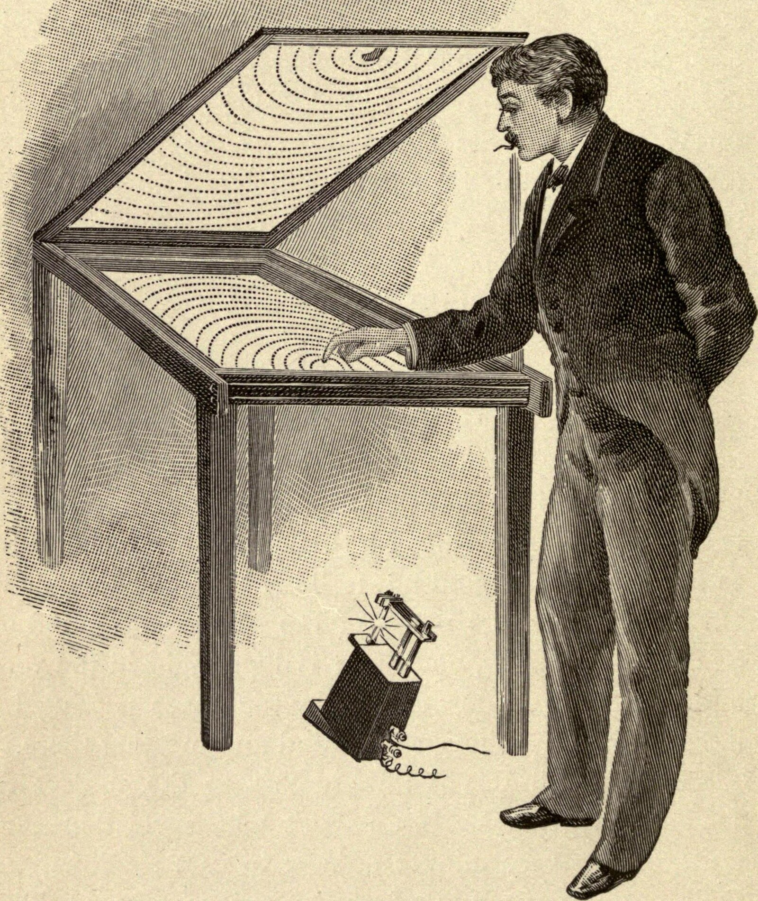
Footnote: Ripple-tanks for illustrating how waves travel have long been known. Small tanks were used at various times by Professor Tyndall. See also Professor Poynting, F.R.S., in Nature, May 1884, p. 119.
If I use the tip of my finger to make a disturbance, the ripples travel outward in all directions at equal speed. Each wave-front is therefore a circle. If, however, I use a straight wooden ruler to make the disturbance, it sets up straight little waves that follow one another in parallel ranks. These we may call plane waves, as distinct from curved ones. Notice how they march forward, each keeping its distance from the one in front of it.
Now, if you have ever watched the ripples on a pond carefully, you will know that although the ripples march forward, the water they are made of does not. It merely rises and falls as each ripple comes by. The proof is simple. Throw in a bit of cork as a float. If the water were flowing along, it would carry the cork with it. But no — see how the cork rides the waves. It is the motion only that travels forward across the surface; the water simply swings to and fro, or rather up and down, in its place. Now that this has been brought to your attention, you will be able to tell the two kinds of movement apart: the apparent motion of the waves as they travel along the surface, and the actual motion of the particles in the waves, which is always an oscillation.
Here is a model of wave-motion that will make the difference clearer still. At the top, a row of little white balls (Fig. 2) is mounted on stems, and each stem in turn, in regular order, is given an up-and-down motion. Not one of these white particles travels along. Each simply oscillates in its own place.
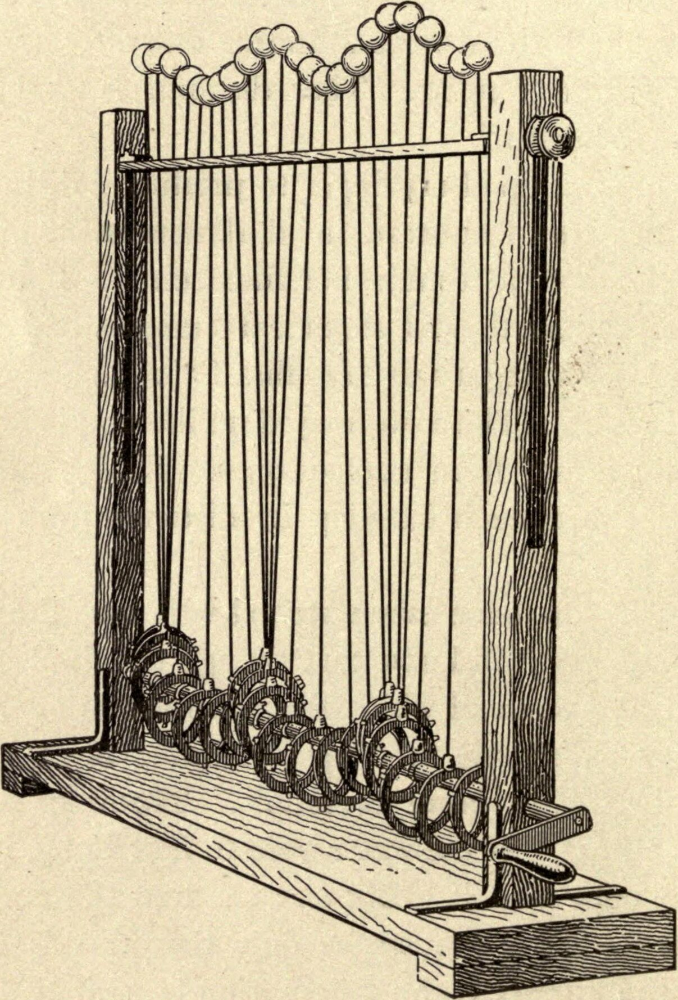
Yet the effect is that of a travelling wave, or rather of a set of waves. The direction in which the wave travels is at right angles to the displacements of the particles. The length from crest to crest of these waves is about 4 inches. Their speed of travel depends, of course, on how fast I turn the handle. The amplitude of each ball's displacement is not more than one inch up or down from the centre line.
Perhaps now you will be able to picture the little wavelets of light, marching in ranks so close that there are 40,000 or 50,000 of them to the inch, and travelling at 185,000 miles a second.
Now let me state two important principles of wave-motion — all-important if we are to understand the behaviour of waves of light correctly.
(1) The first is that waves always march at right angles to their own front. This is how a rank of soldiers marches: straight forward, in a direction square to the line they have formed. It was so with the water-ripples you have already seen.
Footnote: Always, that is to say, in free media — in gases, liquids, and non-crystalline solids. In crystals, where the structure is such that the elasticity differs in different directions, it is possible for waves to march obliquely to their own front.
(2) The second principle is that every point on any wave-front may be regarded as a new source, or centre, from which waves start forward in circles. Look at the sketch (Fig. 3). Ripples are travelling outward in circles from P as a centre, because there has been a disturbance at P. Now if a screen or obstacle S, with a hole in it, is placed in the way of these ripples, all the wave-fronts that come that way will be stopped or reflected back — all except the bit of each wave-front that arrives at the gap in the screen. That particular bit will go on into the space beyond, but it will spread at equal speed in all directions, giving rise to a new but fainter set of ripples, again circular, having their centre not at P but at the gap in the screen. This too I can easily show you in my ripple-tank.
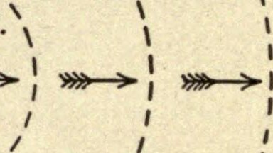
The first of these two principles is really a consequence of the second, together with another principle — that of interference — which concerns the overlapping of waves. We can now use these to work out how waves will march if we know the shape of the wave-front at any moment. Suppose (Fig. 4) we knew that at a certain moment the wave-front of a set of ripples had reached the curved line FF, and we wanted to know where it would be an instant later. If we know how fast the wave travels, we can work out the time it takes to cover some short distance — say half an inch. Take a pair of compasses, then, and open them to half an inch. Put the point of the compasses at some part of the curve FF — say at a — and strike the little arc shown at a'. That is where the disturbance would spread to in that short interval of time if the bit of wave-front at a had been allowed to spread forward by itself. But the bit at b is spreading too, so we must strike another arc using b as centre, and another at c, and another at d, and so on, using the same radius for all of them. And now we see that if all these bits are acting at the same time, instead of each acting separately, the wavelets from each will overlap and give us one large enveloping curve at GG — the effect being just the same as though the wave-front FF had itself marched forward to GG. Those parts of the wavelets that tend to spread sideways in the overlapping cancel one another out. For instance, part of the wavelet from a tends to cross downwards in front of c, while part of the wavelet from e tends to cross upwards by an equal amount. These sideways effects cancel, with the result that on the whole the effect is the same as though the bit of wave at c had simply marched straight forward to c'.
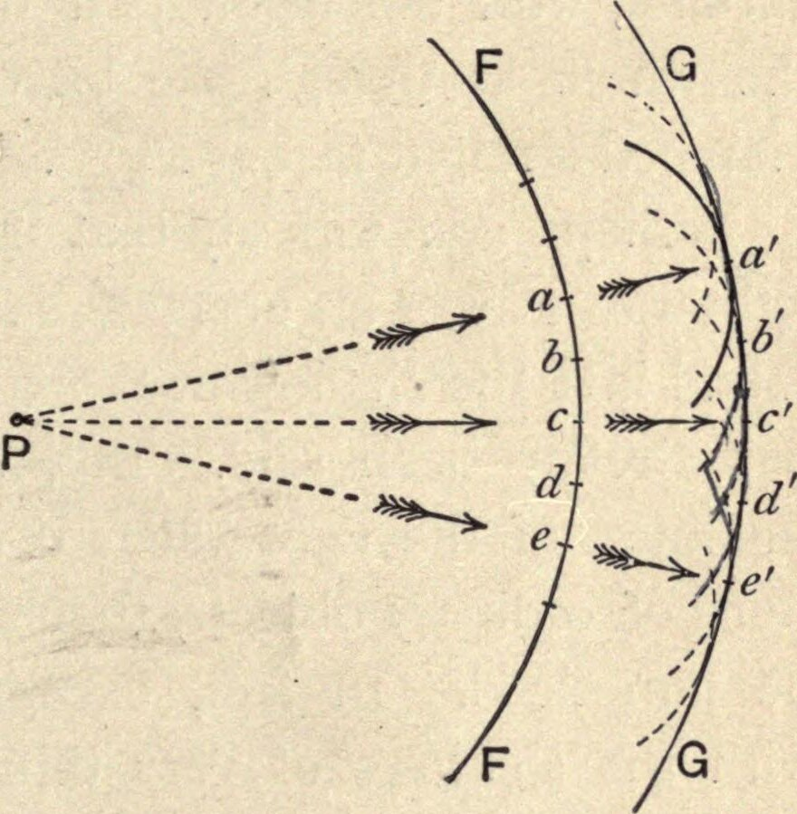
Perhaps you will say that if this is true, then when light-waves meet an obstacle some light ought to spread round into the shadow at the edges. And so it does, as I have already said. But because the light-waves are so exceedingly small compared with the size of ordinary objects, the spreading is so slight that it goes unnoticed. In fact, except when we are dealing with the shadows of very thin objects such as hairs and pins, or with mere edges, light behaves as though it simply travelled in straight lines.
Footnote: This is all that is meant by the old statement that light travels in "rays." There really are no rays. The harder one tries to isolate a "ray" by itself — by letting light pass first through a narrow slit or pinhole, and then through a second slit or pinhole — the more impossible one finds it, for then the tendency to spread shows itself more than ever. If the word "ray" is to be kept at all in the science of optics, it must be understood to mean nothing more than the geometrical line along which a piece of the wave-front marches.
Our next business is to show how ripples can be made to diverge and converge. If we take a point as our source of ripples, they will of themselves spread — diverge — from that point in all directions in circles, each portion of each wave-front bulging outwards. If we take a flat surface as the source, so as to get plane waves, they march forward as plane waves without either diverging or converging. If, however, we can somehow arrange our experiment so as to get ripples with a hollow front instead of a bulging one, then the ripples will converge as they march. This is shown in Fig. 5. Suppose FF is a hollow wave-front marching forward towards the right. Think of the bit of wave-front at a. After a short interval of time it would spread (were it alone) to a'. Likewise b would spread to b', and so on, so that when all these separate wavelets overlap, the effect is the same as though the wave-front FF had marched to GG, closing in as it goes. After another equally short interval it will have closed in to HH. It is clear that, on the principle that waves always march at right angles to their own front, they must all march inwards and meet at a new centre somewhere near Q. Suppose you ranged a row of soldiers along a curve like FF and told each of them to march straight forward between his comrades. If each marched at right angles to the curved line, they would all be marching towards a common centre, and would close in against one another!
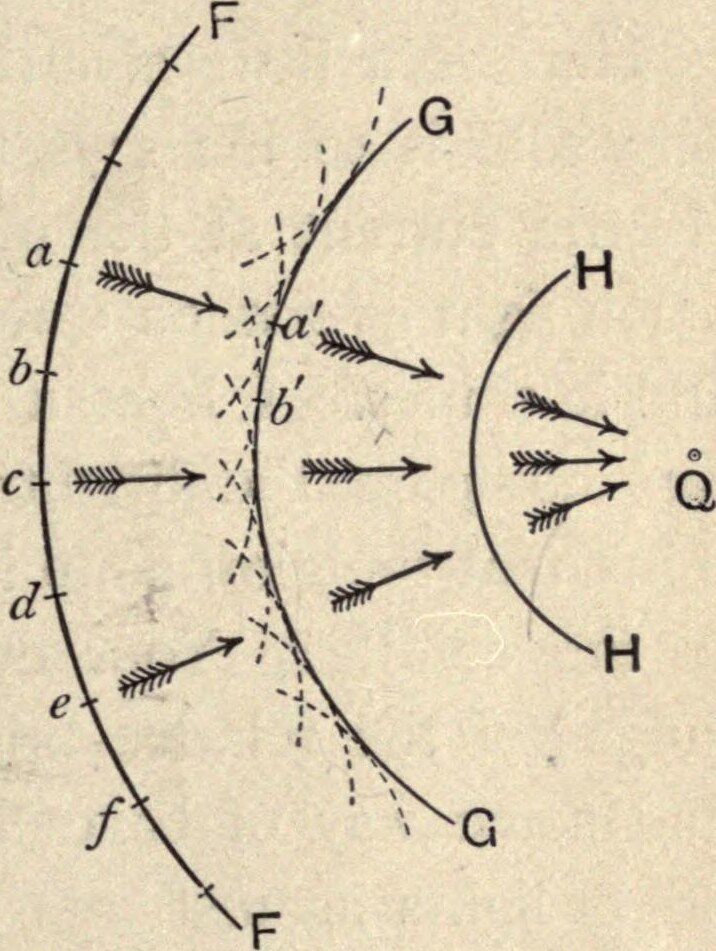
Now it is obviously easy to make waves of light diverge: they do it of themselves if the source of light is a point. We shall see later on how to make them converge. Meanwhile we will use what we know about divergence to help us measure the relative brightness of two lights.
Here is a little electric glow-lamp. The shopkeeper who sold it to me says that when it is supplied with electric current at the proper pressure, it will give as much light as sixteen candles. I switch on the current and it shines. I light a standard candle, so that you can compare the brightness for yourselves. Do you think the glow-lamp really is sixteen times as bright as the candle? Your eye is a very unreliable judge of relative brightness. We must therefore find some way of balancing the brighter and the less bright light against one another. The instrument for doing this is called a photometer. But before we can understand the photometer we must first think about the degree of illumination a light produces when it falls on a white surface. Here I have a piece of white cardboard one inch square. If I hold it close to my candle it catches a great deal of the light and is brightly lit. If I hold it farther away it is less brightly lit. We can therefore alter the illumination of a surface by altering its distance. But we cannot use this for calculations about brightness until we know the rule connecting the distance with the degree of illumination — and that rule depends on the way light spreads when it starts from a point.
Footnote: Electric pressure, or "voltage," is measured in terms of the unit of electric pressure called the volt. The usual electric pressure in the conductors that branch from the supply mains into a house is 100 volts.
Footnote: The standard candle prescribed by the regulations of the Board of Trade as the legal standard of light in Great Britain is a sperm candle burning 120 grains of spermaceti per hour.
Footnote: This unreliability of the eye in forming a numerically correct judgment depends partly on the physiological fact that the sensation is never numerically proportional to the stimulus. Though the stimulus be 16 times as great, the sensation perceived by the brain is not 16 times as great. The rule (Fechner's law) is that the sensation is proportional to the natural logarithm of the stimulus. The natural logarithm of 16 is 2.77; that is to say, a light that is 16 times as bright as 1 candle only produces a sensation 2.77 times as great. A single light of 100 candle brilliancy only produces a sensation 4.6 times as great as that of 1 candle. Besides this, the iris of the eye automatically reduces the size of the pupil when a brighter light shines in, making the eye less sensitive.
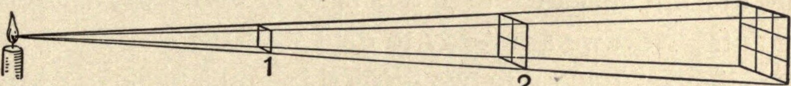
Suppose we think about the whole quantity of light spreading in all directions from a point. Of all that light, what fraction will be caught by this square inch of cardboard when I hold it a foot away? Not very much. But now follow that same quantity of light as it goes on spreading. Fig. 6 shows you that by the time the light has travelled out to twice the distance from the centre, it will have spread — by the law of straight-line travel just discussed — so that the diverging beam is now twice as broad each way. It will now cover a cardboard square 2 inches each way, which has 4 square inches of surface. So if the same amount of light that used to fall on 1 square inch is now spread over 4 square inches, it follows that each of those 4 square inches is only lit a quarter as brightly as before. If you had a lump of butter to spread on a piece of bread, and were then told you must spread that same lump over a piece of bread with four times the surface, you know the layer of butter would be only a quarter as thick! And again, if I let the light spread still farther, by the time it has gone three times as far it will have spread over nine times the surface, and the degree of illumination on any one square inch at that treble distance will be only one-ninth as great as at first. This is the so-called law of inverse squares, and it is simply the geometrical consequence of the light spreading from a point.
Now we are ready to deal with the balancing of two lights. By letting two lights shine on a piece of cardboard — or rather on two neighbouring pieces — and then altering the distance of one of them until both pieces are equally lit, we can get a balance of effects, and then calculate from the squares of the distances how bright the lights were. The eye, which is a very bad judge of unequal brightnesses, is a really quite fair judge of the equality of illumination of two neighbouring patches, and with practice can be trained to be an accurate one. But we must arrange things so that only one light shines on each patch. One simple way is to let each light cast the shadow of a stick on a white surface, so that each light shines into the shadow cast by the other. If you alter the distances until the shadows are equally dark, then you know the illumination of each is equal. A better way still is to arrange matters so that the two lit patches are actually superposed on one another. Here is a very simple and effective way of doing it. Two pieces of white cardboard, A and B (Fig. 7), forming a V-shape, are set on a stand between the two lights to be compared. One light shines on the face of A, the other on the face of B. A number of slots or holes are cut in A, so that the lit surface of B is seen through the slots. If A is less brightly lit than B, the slots will look dark between the brighter bars of the front card; if A is more brightly lit than B, the slots will look bright between dull bars. By moving one of the lights nearer or farther away, the two illuminations can be altered until balance is reached, and then the relative values are worked out from the squares of the distances. With this photometer let us now test our electric lamp and see whether it really is worth sixteen candles. I put it on the photometer bench and move it backward and forward till the lights balance. You see it balances when it is rather less than four times as far away as the standard candle. It is therefore not quite sixteen candle-power.
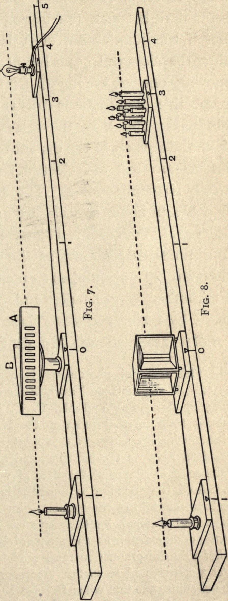
Footnote: The fact that a candle flame is not a mere point introduces a measurable error into photometry. It cannot be too clearly understood that the law of inverse squares is never strictly applicable except to effects spreading from points. The same criticism applies to the use — or misuse — of the law of inverse squares in magnetism and electricity.
Another very simple and accurate photometer is made by taking two small slabs of paraffin wax, of the kind candles are made from, and putting them back to back with a sheet of tin-foil or black paper between them. They are then placed, as in Fig. 8, on a graduated bench between the lights whose brightness is to be compared, and set so that one light shines on one slab and the other light on the other, as in Fig. 9. If the illuminations on the two sides balance, the edges of the slabs will look equally bright. But if one face is more strongly lit than the other, then the slab that is more brightly lit will look brighter at its edge. This is because of the translucent, or semi-opaque, property of paraffin wax, which spreads the light sideways through it. With this photometer it is very easy to balance the brightness of two lights, even when their tint is not quite the same.
In Germany they use as their standard, instead of a sperm candle, the little Hefner lamp filled with a chemical liquid called amyl acetate. But it has — as you can see — the serious disadvantage of giving a light of a redder tint than most of our other lights. To be quite suitable, the lamp we choose as our standard of light ought to be not only one that gives out a fixed quantity of light, but one that is beyond reproach in the quality of its whiteness: it should be a standard of white light. Perhaps now that acetylene gas is so easily made, it may serve as a standard; for so far, none of the proposed electric standards seems quite satisfactory.
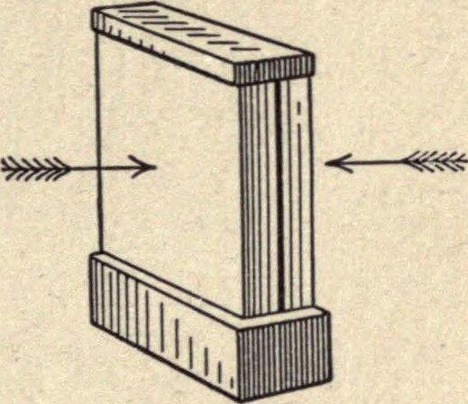
Footnote: This form of photometer is a modification, by Mr. A. P. Trotter, M.A., of Cape Town, of the relief photometer invented in 1883 by the author and Mr. C. C. Starling. To prevent error from internal reflection, the back of card A should be blackened. By setting the support at a fixed distance from the standard light on the left, and altering the distance of the light whose brightness is to be measured until balance is reached, the instrument can be made direct-reading: the scale to the right of the support is then graduated to read not the actual distances but their squares. For instance, if the distance of the middle slot from the standard light is 1 metre, then on the other side the graduation must read 1 at 1 metre, 4 at 2 metres, 9 at 3 metres, and so on. Accuracy of reading is helped by the fact that when balance has been found for the middle slot of A, the slots to the left of the middle look darker and those to the right brighter than the central one.
Footnote: This paraffin-slab photometer is the invention of Dr. Joly, F.R.S., of Dublin. It is an exceedingly satisfactory instrument.
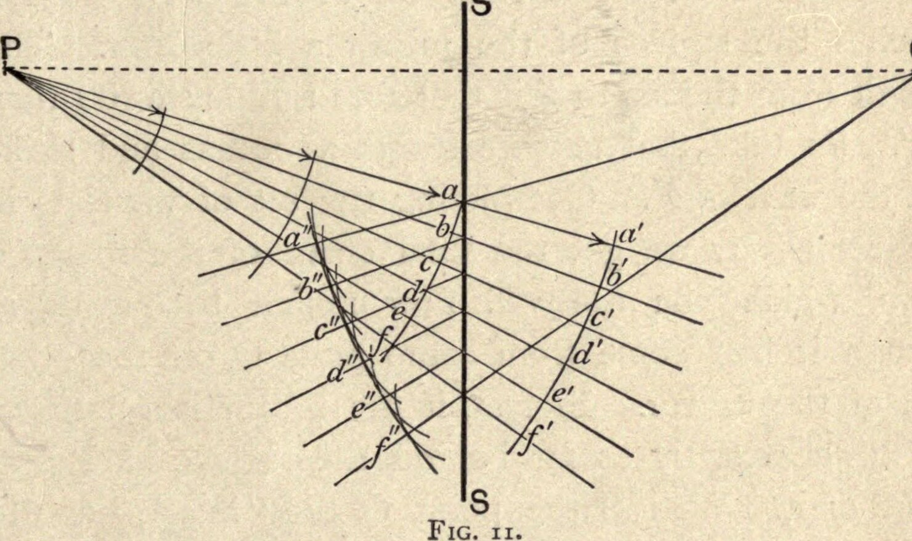
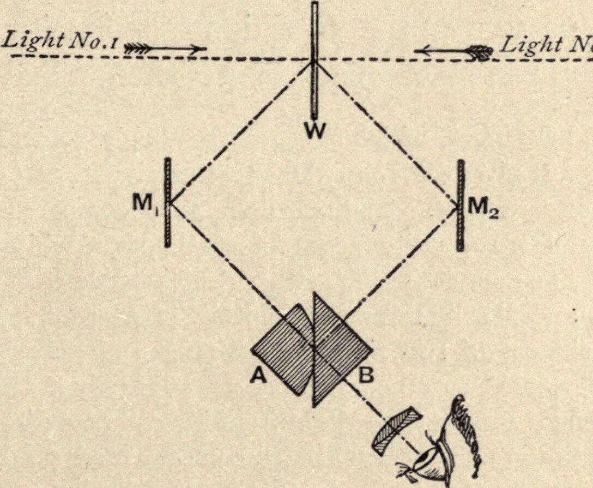
Footnote: Either of these two forms of instrument is preferable to the old-fashioned "grease-spot" photometer of Bunsen. But both are surpassed in accuracy by the precision photometer of Brodhun and Lummer, which can, however, only be described here very briefly. It gives determinations that can be relied on to within one-half of one per cent. The two lights to be compared are made to shine on the two opposite faces of a small opaque white screen, W (Fig. 10). The eye views these two faces, reflected in two small mirrors M1 and M2, through a special prism combination consisting, as shown, of two right-angled glass prisms A and B, cemented together with balsam over only a small part of their sloping faces. The light from M1 can pass straight through this central portion to the eye, while the uncemented portions of B's sloping face work by total internal reflection and bring the light from M2 to the eye. The eye therefore effectively sees a patch of one surface of W surrounded by a patch of the other surface of W, and so can judge very accurately whether the two are equally lit or not.
Let us pass on now to the reflection of light by mirrors. A piece of polished metal such as
silver, or silvered glass, will reflect the waves of light — and so, to a lesser degree, will any other material, provided only that its surface is smooth enough. By "smooth enough" I mean that the ridges or scratches or roughnesses of its surface are decidedly smaller than the wave-length of the light. If the scratches or ridges on a surface are less than a quarter of a wave-length across — in the case of light, therefore, less than about 1/200000 inch — they do not break up the waves at all, and such surfaces are, for optical purposes, quite "smooth." Indeed, that is the usual way of polishing things. You scratch them all over with some sort of very fine powder that makes scratches finer than 1/200000 of an inch.
Now the rebound of waves when they beat against a polished surface — whether that surface is flat or curved — can be studied by applying the same principles of wave-motion we have already learned. In Fig. 11 we have light starting from a point at P and spreading out. If a smooth obstacle SS is placed in the path of these waves they will meet it, but some parts of the wave-front will meet it before other parts do. Think of the bit of the wave-front that meets the mirror at a. If it had not been stopped, after a brief moment it would have got as far as a'. But having bounded back from the surface it sets up a wavelet that spreads backwards at the same rate. So take your compasses and draw the wavelet a", using the length a a' as your radius. The next bit of the wave-front, b, reaches the surface of the mirror a little later, so the distance from there to b' is a little shorter than a a'. Take that shorter length as radius and strike the wavelet b". Complete the set of wavelets in the same way and you get the final curve of the reflected wave, which, you see, now marches backwards as though it had come from a point Q on the other side of the mirror. In fact, if the mirror is flat, Q will be exactly as far behind the surface as P is in front of it. We call the point Q the image of the point P. This reflection of ripples as though they had come from a point behind the mirror I can show you in my ripple-tank. I put in a flat strip of lead to serve as a reflector — see how the waves, as they come up to it, march off with their curvature reversed, as though they had started from some point behind the reflecting surface.
Again, I can show you the same thing with a candle and a looking-glass. You know that we can test the direction light is coming from by looking at the direction in which it casts a shadow. If I set up this little dagger on a whitened board (Fig. 12), I can see which way its shadow falls. If I now put a candle beside it on the board at P, the dagger casts a shadow on the side away from P. Next, set up a piece of silvered mirror glass a little farther along the board. We now have two shadows. One is the direct shadow cast before; the other is the shadow cast by the waves reflected in the mirror, and you can see from the direction this second shadow falls that it falls exactly as if the light had come from a second candle placed at Q, just as far behind the mirror as P is in front. Let us put an actual second candle at Q, and then take the mirror away — and you see the second shadow in the same place and of the same shape as before. So we have proved by direct experiment that our reasoning about the waves was right. Indeed, you have only to look into a flat mirror and examine the images of things in it to satisfy yourselves about the rule. The images of objects are always exactly opposite the objects, and each is as far behind the mirror as the object is in front. Probably you have all heard of the prince captured by sailors who, when he was taken aboard ship and shown a mirror hanging on a wall, wanted to run round behind it to see the other prince he saw on the far side!
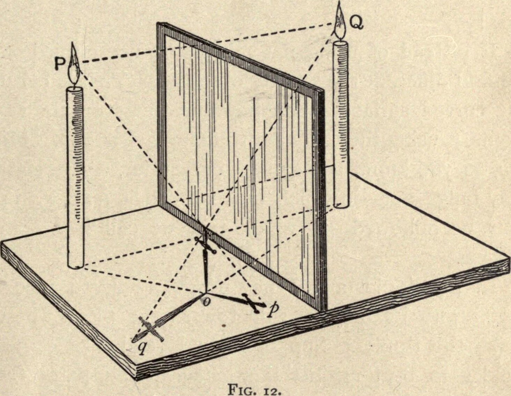
If instead of flat mirrors we use curved ones, we find different rules apply. That is because curved surfaces imprint new curvatures on the wave-fronts and so alter their line of march. There are, as you know, two sorts of curvature. The surface may bulge outwards, in which case we call it convex; or it may be hollowed, in which case we call it concave.
In my ripple-tank I now place a curved piece of metal with its bulging side towards the place where I make the ripples. Suppose I send a train of plane ripples to beat against this surface. The part of the wave-front that strikes the bulging curve first is the earliest to be reflected back. The other parts strike the surface later and, when they are reflected back, have fallen behind — so that the ripples come back curved. The curved mirror has, in fact, imprinted on the ripples a curvature twice as great as its own. This can be seen from Fig. 13, where we watch straight ripples marching to meet the bulging reflector. The middle point M of the bulging surface meets the advancing wave first and turns that bit back. If there had been no obstacle the wave would, after a short interval, have got as far as A. But where does it actually go? The bit that strikes M goes back as far as B; the bit marked a goes on a little farther, and is then reflected back. Take your compasses again, measure the distance it still has to go to reach a, then turn the compasses round and strike that arc. Do the same for the bits marked b and c, and you will find the overlapping wavelets give you the new outline of the reflected wave, which marches backwards as though it had started from the point marked F. This point F is halfway between M and the centre of curvature of the surface, marked C in the drawing.
So too, if I use a hollow or concave surface as my reflector, it will imprint a concave form on the waves, the imprinted curvature again being twice as great as the curvature of the reflecting surface. But now we come to a new effect. See in my ripple-tank how, when the straight ripples beat against the concave surface so that the middle of the wave-front is the last to rebound, all the other parts have already rebounded and are marching back, so that the returning ripples are curved inwards. Being now curved ripples with hollow wave-fronts, they converge on one another and march back towards the point F. A bit of the wave-front at P marches straight on until it strikes the mirror at R; then, instead of going on to Q, it is reflected inwards and travels to F, towards which point other parts of the wave also travel. Here, then, we have found a real focus — a genuine meeting point of the waves — and not, as in the earlier cases, a virtual focus from which the waves merely seemed to come. So we have learned that, for ripples at least, a concave mirror can produce a real convergence to a point.
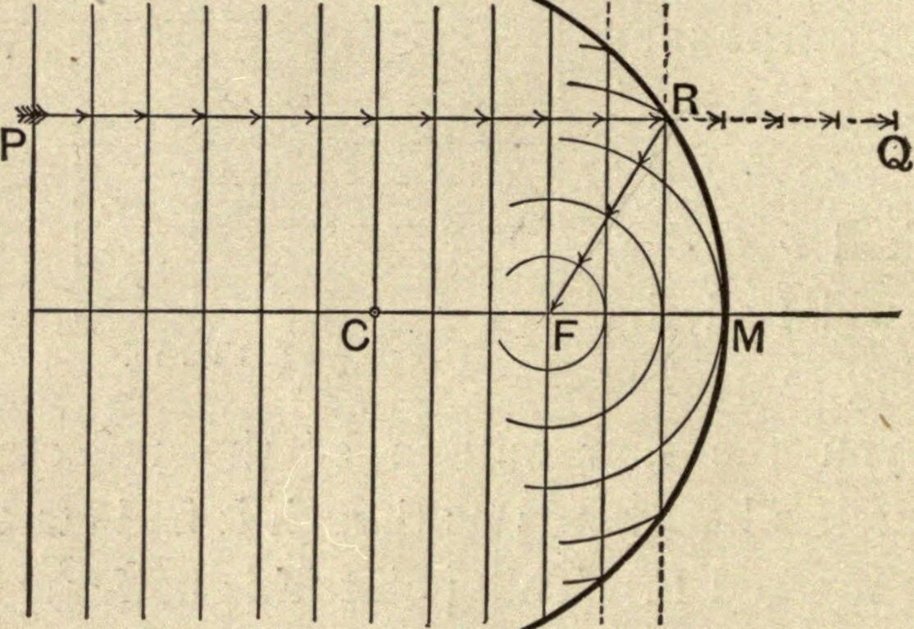
Let us show at once that the same thing can be done with light-waves, by using a concave silvered mirror.
From my optical lantern, with its electric lamp inside, my assistant sends out a broad beam of light. The air is dusty, and each little particle of dust catches a portion of the beam and helps you to see which way it is going. Into this beam I hold a concave silvered mirror. At once you see how, by imprinting a curvature on the waves, it forces the beam to converge (Fig. 15) on a point here in mid-air. That point is the focus. You will further notice that by turning the mirror about I can shift the focus and concentrate the waves wherever I like.
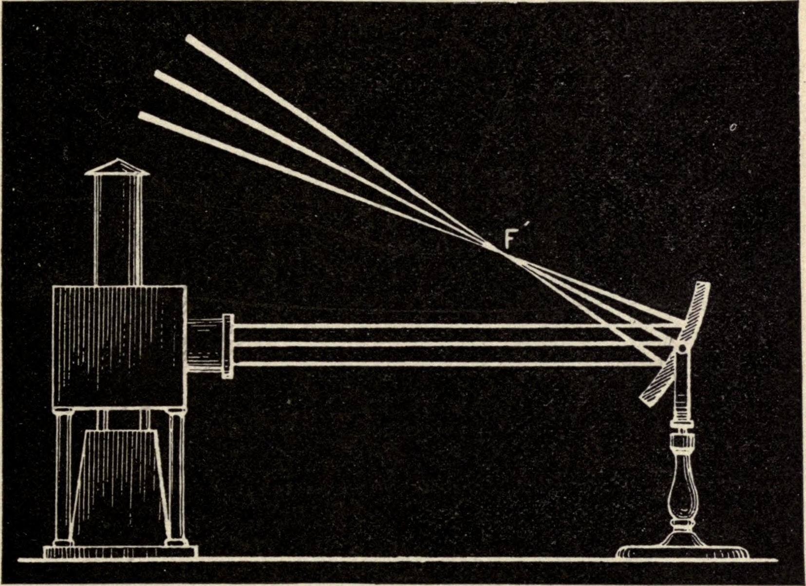
If I replace the concave mirror with a convex one, I shall make the waves diverge instead. There is now no real focus at all; the waves march away as if they had come from a virtual focus behind the mirror at F (Fig. 16), exactly as we saw with the ripples in the tank.
We have now got as far as making real images, by so changing the shapes of the wave-fronts, and with them the lines along which the waves march, that they converge to focal points. Let us try a few more experiments on how images are formed. Take all the lenses out of the optical lantern and leave only the electric lamp inside. You know that in this lamp there are two carbon pencils whose tips do not quite touch, and which are made white-hot by the electric current flowing between them. I cover the opening at the front of the lantern with a piece of tin-foil, and in this I now stab a small round hole with a pointed stiletto. At once you see an image thrown on the screen (Fig. 17) of the two white-hot carbon tips. The positive carbon has a flat end; the negative tip is pointed. That image is, as it happens, upside down, and its formation on the screen is a simple consequence of light travelling in straight lines. If I stab another hole we get another image. This time I have pierced a square hole, but the second image is just like the first: it does not depend on the shape of the hole. I pierce a three-cornered hole — still another image. If I pierce a whole crowd of holes I get just as many images, arranged in a pattern that corresponds exactly to the pattern of holes I have made in the tin-foil.
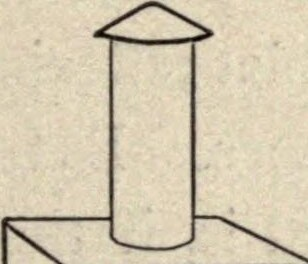
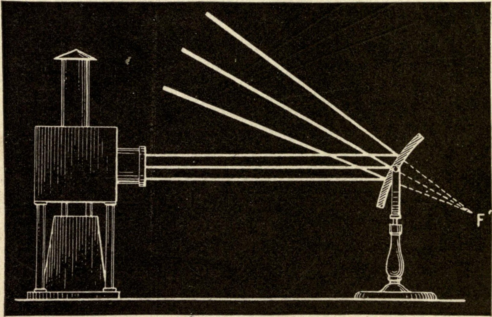
Now if I wanted to produce one single bright image instead of a scatter of little ones, I must somehow turn all these separate beams so that they converge on the same region of the screen. In other words, bright images can be formed by using some device that imprints a convergence on the waves. You know that a concave mirror will do this. Very well — let me use one. See how, when we pick one of the right curvature to converge the light onto the screen, it blends all the images together and gives us one bright image. We may take the tin-foil cap off altogether, so as to work with the whole beam, and we get a still more brilliant image of the carbon points.
Substituting a group of little coloured electric glow-lamps for the arc lamp, I have my concave mirror reflect their beams out into the room; and here, by feeling for it with a hand-screen of thin translucent paper, you see how I can find the real image of the group of lamps. This image is upside down; and because it is formed at a greater distance from the mirror than the object is, it is magnified. If the object is moved farther away, the image comes in closer, and is then smaller, though still upside down.
So far we have been dealing with the regular reflection that takes place at properly polished surfaces. But if a surface is not properly polished — that is, if its ridges or scratches or roughnesses are not appreciably smaller than the waves — then, though it may still reflect, the reflection is irregular. White paper reflects in this diffuse way. You get no definite image, because the slight roughness of the texture breaks up the wave-fronts and scatters them in all directions. That is why a sheet of white paper looks white from whatever direction you view it. If the material is one which, like silk, has a definite fibre or grain that reflects a little better in one direction than another, then the amount of light reflected will depend partly on which way the grain catches the light and partly on the angle at which the light falls. This is easily shown by looking at a piece of metal electrotyped in exact facsimile of a piece of silk fabric. Here is such a piece. It was deposited in a gutta-percha mould cast from a piece of figured silk brocade, and it reproduces the exact shimmer of silk, because it reproduces the grain of the silk in the way it partially reflects. If silk is woven with a warp of one colour and a weft of another, the different colours are reflected better at different angles — hence the effect of "shot" silk.
To illustrate diffuse reflection, let me show you two simple experiments. Here is a piece of mirror. On it I paint the word LIGHT in Chinese white. The letters look white against a dark background. But if I use the mirror to throw a patch of light from the electric lamp onto the wall, the letters come out black. The light falling on those parts was scattered in all directions — so those parts looked white to you, but they have diffused the waves instead of directing them straight to the wall as the smooth parts of the surface do.
Let me prove to you how much light really is reflected from a piece of paper. I have only to shine my lamp on this piece of white paper and hold it near the cheek of this white marble bust, for you to see for yourselves what a quantity of light it throws onto the object. Now exchange the white paper for a piece of red paper — that is, paper that reflects red waves better than waves of any other colour — and you see how the red light is thrown back onto the bust and brings an artificial blush to its cheek.
Footnote: Made at the Technical College, Finsbury, by Mr. E. Rousseau, instructor in electro-deposition. His process of casting the matrices in a molten gutta-percha compound, which are afterwards metallised to receive the deposit in the electrotype bath, is distinctly superior to the commercial process of taking moulds in a hydraulic press. On one occasion he made me a mould of a Rowland's diffraction grating with 14,400 parallel lines to the inch. Like the original, it showed the most gorgeous diffraction colours.
If light is reflected from one mirror to another standing at an angle to it, two or more images may be formed, depending on how the mirrors are placed. Here (Fig. 18) are two flat mirrors hinged together like the leaves of a book. If I open them to an angle equal to one-third of a circle — 120° — and then place a candle between them, each mirror will make an image, so that when you peep in between them there seem to be three candles. If I fold the mirrors a little closer, so that they enclose a quadrant of a circle
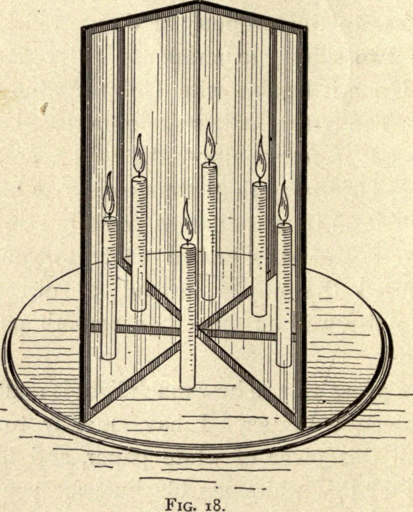
— or set them at right angles — then there will seem to be four candles: one real one and three images. If I close the angle to 72°, one-fifth of a circle, there will seem to be five candles. Close it to 60°, one-sixth of a circle, and six candles appear. This is the principle of the toy called the kaleidoscope, in which the multiplication of images gives the most beautiful and curious combinations of pattern and colour. Even with two mirrors like these some odd effects are possible. Nearly shut, a single light between them seems to be drawn out into a whole ring of images. Open them to 72°, or to a right angle, and try the effect of suddenly putting both your hands between them: ten hands, or eight hands, according to the angle you chose, appear all at once as if by magic. Place a wedge of Christmas cake between the mirrors, and close them until they touch the sides of the wedge — you will see a whole cake appear.
It is time now to pass on to another set of optical effects, which depend on how fast the waves travel. I have told you how fast they travel in air: 186,400 miles a second, or — if you care to work it out — one foot in about a thousand-millionth of a second. But light does not go quite so fast through water as through air. It goes only about three-quarters as fast: in water it travels at about 138,000 miles a second, or about nine inches in a thousand-millionth of a second. And in ordinary glass it goes slower still. On average — for glasses differ in composition, and so in how much they hold light-waves back — light goes only about two-thirds as fast in glass as in air. That is, in the time light would travel one foot through air, it would travel only about eight inches through glass.
Now, as a consequence of this difference in speed, it follows quite simply that if the waves strike obliquely against the surface of water or glass, the part of the wave-front that enters the denser medium first goes more slowly, while the other part, still travelling through air a little longer, gains on it. So the direction of the wave-front is changed, and with it the line of march. Let us look at this more precisely. If waves of light coming from a point P strike the top surface of a block of glass, as in Fig. 19, how will the retardation they suffer on entering affect their march? Suppose that at a certain moment a ripple has reached FF'. If it had gone on through air it would, after a very short interval, have got as far as GG'. But it has struck the glass, and the part that goes in first, instead of getting as far as G', will only get two-thirds as far. So take your compasses once again and strike a set of arcs for the various wavelets, in each case taking as your radius two-thirds of the distance the light would have gone if, after passing the surface, it could have carried on to GG'. The overlapping wavelets build up the new wave-front HG', which you will notice is a flatter curve, with its centre somewhere farther back, at Q. In fact the effect of the glass in holding back the wave is to flatten its curvature and alter its march, so that as it goes on through the glass it travels as though it had come not from P but from Q, a point 1½ times as far away. Consider the bit of wave-front that has been marching down the line PG'. When it enters the glass its line of march is changed: instead of going on along G'A it goes more steeply down G'B, as though it had come from Q. This abrupt change of direction along a broken path, caused by entering a denser medium, is what we call refraction. Glass refracts more than water does; heavy crystal glass, which contains lead, refracts more than the light kinds of glass used for window panes and bottles; and many other substances refract more strongly still.
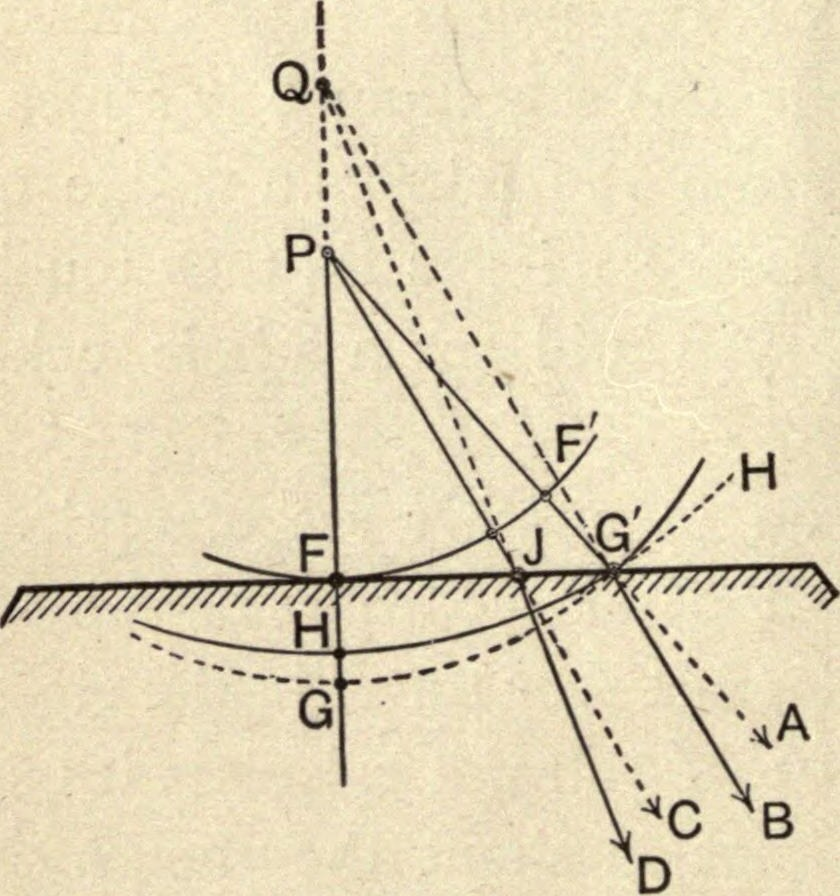
Now we can use this property of refracting substances to make light-waves converge and diverge; for, as you see, when we want to imprint a curvature on the wave-fronts we can easily do it by using the retarding power of water or of glass. Suppose we wanted to alter a plane wave so as to make it converge to a focus. What we have to do is hold back the middle part of the wave-front a little, so that the other parts gain on it. It will then be hollow in shape, and will therefore march to a focus. What sort of piece of glass will do this? A mere window pane will not. A thick slab will not, since it is equally thick all over. Clearly it must be a piece of glass that is thicker in one part than another. Well — suppose we take a piece of glass that is thicker in the middle than at the edges. What will it do? Suppose, as in Fig. 20, we have plane waves coming along, and we put in their path a piece of glass that is flat on one face and bulging on the other. Think of the moment when a wave-front has arrived at GG. Where will it be a moment later? The middle part, which strikes at M, will be going through glass to B, and we know this distance MB will be only two-thirds as great as the distance it would have covered in air. Had it gone on in air it would have got as far as A, the length MA being 1½ times as great as MB. The edge parts of the wave-front go almost entirely through air, and so gain on the middle part. The new wave-front, then, instead of being flat along HAH, will be curved hollow into the shape HBH;
Footnote: "Denser," in its optical sense, means the same thing as more retarding. Compare what is said on p. 62 in the Appendix to this lecture.
and as a result the wave will march on, converging to meet at F in a real focus. It would be just the same if the piece of glass were turned round the other way, with its bulging face towards the light; it would still imprint a hollow on the advancing wave and make it converge to a focus. This is exactly how a burning-glass works.
With my ripple-tank I can imitate these effects, though not very accurately, because the only way I have of slowing the ripples down is to make the water shallower where I want the retardation. I do this by putting in a piece of plate glass cut to the right shape. Where the ripples pass over the edge of the submerged glass they travel more slowly. Where they meet the edge obliquely their line of march is changed — they are refracted. Where they pass over a lens-shaped piece they are brought together towards a focus.
It is more convincing, however, to show these things with light-waves themselves. Let me first show you refraction on the optical circle, using a special apparatus (Fig. 21) for directing the beam towards the centre at any angle I please. Setting up a large optical circle with its face towards you and its back to the lantern, I can throw the light obliquely onto the top surface of a piece of glass whose under surface has been ground into a semi-cylinder (Fig. 22). The refracted beam comes out at a different angle, its line of march having been made more steeply oblique by the retardation of the glass. If you measure the angles not in degrees but by the straight distances across the circle, you will find that, for the kind of glass I am using, the proportion between the length CD
Footnote: From Fig. 20 it is easy to see that the curvature imprinted on HAH is just half the curvature of the glass surface (if MB = ⅔ MA). Hence it follows that the focal length of the plano-convex lens, if it is of glass with a refractivity of 1½, is equal to twice the radius of curvature of the lens surface. In the case of double-convex lenses, each face imprints a curvature on the wave as it passes through. See the Appendix to Lecture One, p. 65.
Footnote: This apparatus, which can be fitted to any ordinary lantern, consists of three mirrors set at 45° carried on an arm fixed to a sleeve that fits the condenser tube, as in Fig. 21. After three reflections the beam comes back radially across the axis of the condensers; and by turning the arm round in the condenser tube it can be used at any angle.
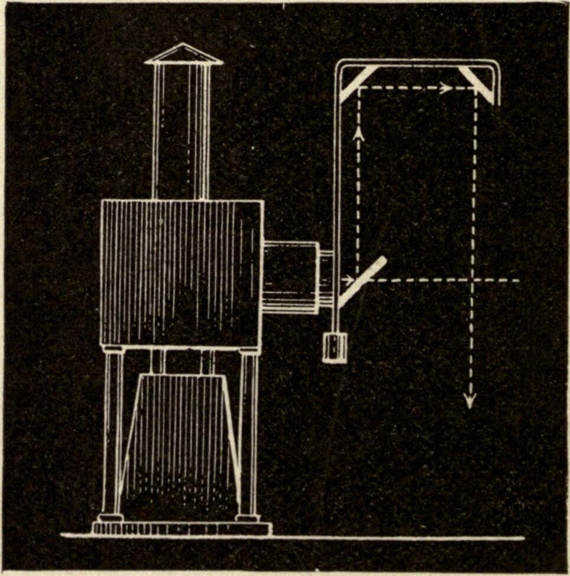
(the sine of refraction) and the length AB (the sine of incidence) is always exactly 2 to 3, whatever the slant of the incoming beam. When the incoming beam falls at a grazing angle, most of it is reflected and never enters the glass at all, and the part that does enter is refracted down at an angle known as the critical, or limiting, angle.
With this same optical circle I can show you another phenomenon: total internal reflection. If I send the light upwards through the glass hemisphere (Fig. 23) at an angle beyond the critical angle, none of it will come up through the surface; it will all be reflected internally at the underside, the top surface acting as a polished mirror. You can see the same effect with a tumbler of water with a spoon in it.
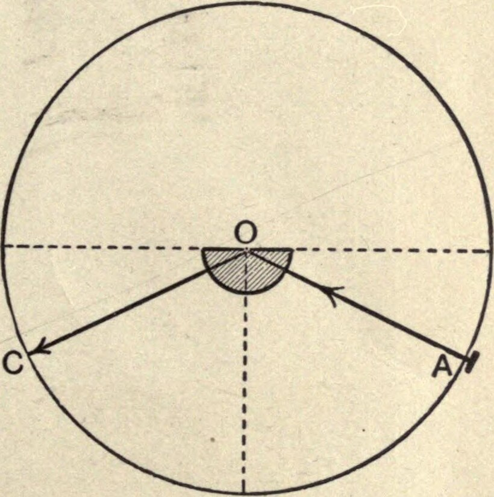
This same effect of total reflection can be beautifully illustrated by the luminous cascade, or fairy fountain. I let water stream out of a nozzle, and shine light in behind it through a window in the cistern the water flows from. The water falls in a parabolic curve, and the light follows it down inside the stream to the place where the jet breaks (Fig. 24) into drops.
Total reflection can also be shown by shining light into one end of a solid glass rod: although the rod is bent and crooked, the light travels along inside it until it reaches the other end.
Returning now to the use of lenses to make waves converge and diverge, we will set our lantern to send out a straight beam, and then put in its path a lens of glass thicker in the middle than at the edges. At once — thanks to the dust in the air — you can see it make the waves converge to a focus at F (Fig. 25). This again is a real focus. A lens that is thicker in the middle than at the edges is called a convex lens.
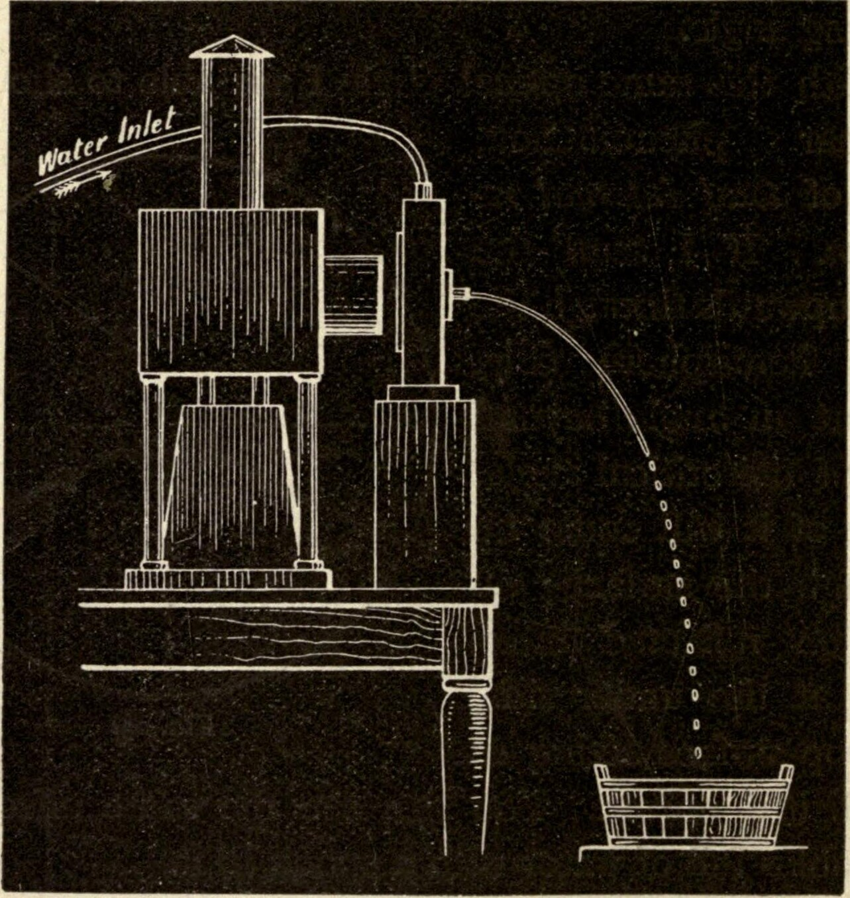
Had we taken a piece of glass thinner in the middle than at the edges — a concave lens — the effect would be the opposite. Since the thin middle holds back the middle of the wave-front less than the thick edges hold back the edge parts, the middle of the wave-front gains on the outer parts, the wave comes out bulging, and it therefore marches as though diverging from some virtual focus.
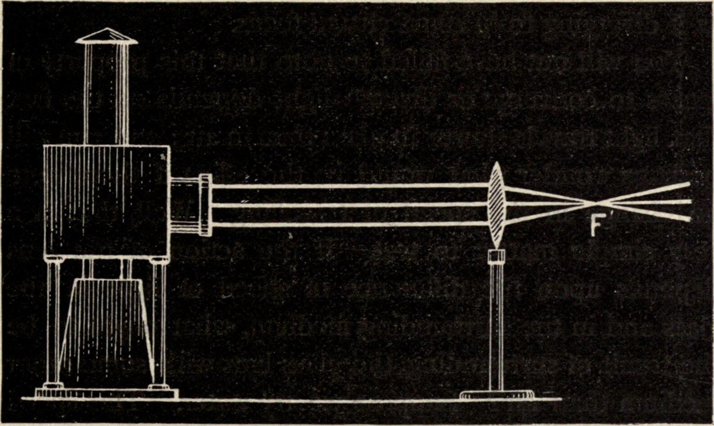
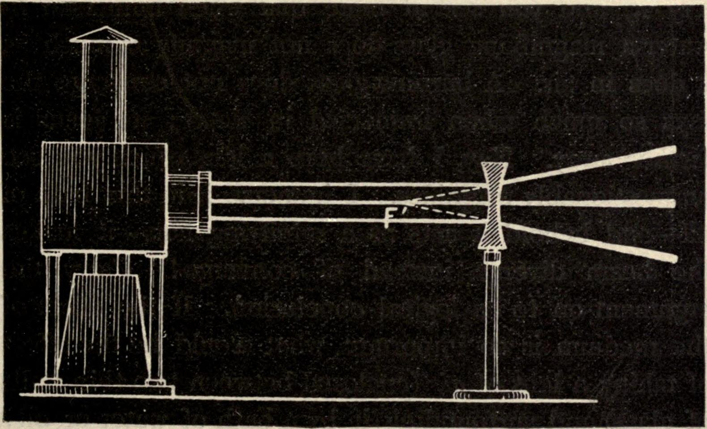
You will not have failed to notice that this power of lenses to converge or diverge light depends on the fact that light travels more slowly in glass than in air — and you may wonder what would happen if there were no change of speed at all. Well, that is a very simple thing to test. If the action of a lens depends on the difference in the speed of light inside the glass and in the medium around it, what ought to happen if we surround the glass lens with something other than air? Suppose we try water. The speed of light in water is less than in air; it is nearer to the speed in glass. And if the action depends on a difference in speed, then a glass lens immersed in water ought to act less strongly than the same lens in air. Try it, and you see at once that a magnifying glass immersed in water does not magnify as much as it does in air. A burning-glass does not converge the light as strongly under water; its focus is farther away. More than that: here is a lens that unquestionably magnifies. I immerse it in this bath of oil — and behold, it acts as a minifying lens, making the beam diverge instead of converge! Now carry the argument to its logical conclusion. If the surrounding medium matters so much, what would happen if we took a lens of air — enclosed between two thin walls of glass — and surrounded it with a bath of water or oil? If the reasoning is right, a concave air lens in oil ought to act like a convex glass lens in air, and a convex air lens in oil like a concave glass lens in air. Let us put it to the test. Here is a concave air lens.
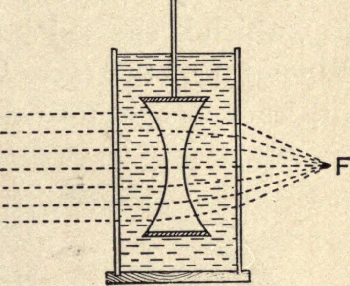
In air it neither converges nor diverges the light — the speed inside and outside the lens is the same, so there is no action at all. But plunge it into oil (Fig. 27) and, look, it brings the beam to a focus at F, exactly as a convex glass lens would do in air.
Let me sum up this part of my subject by saying simply that lenses and curved mirrors change the march of light-waves by imprinting new curvatures on the wave-fronts. Indeed, strictly speaking, that is all any lens or mirror, or any combination of lenses or mirrors, can do.
Now the human eye, that most wonderful of all optical instruments, is a combination of lenses inside a gristly ball, the back of which is lined on its inner face with an exquisitely fine structure of sensitive cells, threaded through with branches of the optic nerve. All that nerve can do is to feel the impressions that fall on it and carry them to the brain. Everything else must be done either by the lens apparatus that focuses the waves of light on the retina, or by the brain that is conscious of the impressions carried to it. These lectures are concerned with neither the nerve structures nor the brain. We have only to treat the eye as a combination of lenses that focuses images on the retina.
Consider a diagram (Fig. 28) of the structures of the human eyeball. Most of the refracting work is done by a beautiful piece of transparent horny substance called the crystalline lens (L2), which sits just behind the iris, the coloured diaphragm of the eye. The pupil, the hole through the iris, leads straight towards the middle of this crystalline lens.
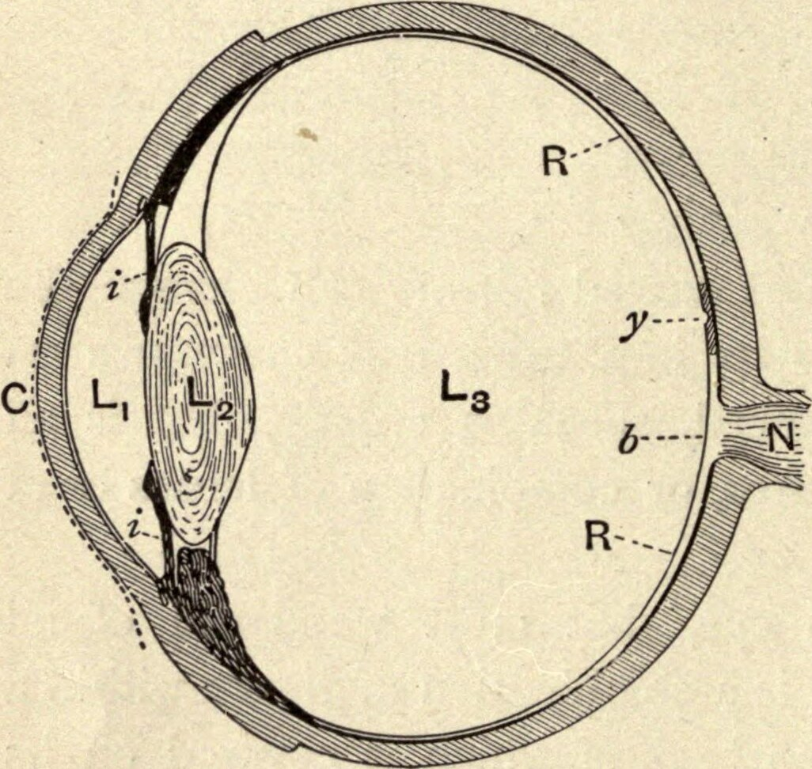
But the crystalline lens is immersed in a medium — or rather between two media: a watery one (L1) in front and a jelly-like one (L3) behind, the latter filling up the rest of the globe of the eyeball. The crystalline lens therefore has less magnifying power than it would have in air. It behaves very much like a lens in water. But the watery liquid in front of it also acts as a lens, since it fills the space between the crystalline lens and the transparent cornea, the bulging window of the eye. Taken together these form a lens combination adapted to throw images onto that back screen, the retina R, where the sensitive nerve structures are spread out. Everything the eye can do as an optical instrument can be imitated by combinations of lenses. An ordinary photographic camera may be regarded as a sort of artificial eye. At the front is a combination of lenses whose job is to focus images onto a back screen, or onto a plate made chemically sensitive. To make the analogy complete, one ought to think of the eye as a kind of camera whose hollow body is filled with a thin transparent watery jelly, and in which the space between the front lens and the one behind it is full of water as well.
Apart from the complication introduced by the watery and jelly-like media, it is very easy to imitate the optical arrangement of the eye with lenses. Any photographic camera will serve the purpose. Its lens combination throws real images of the objects in front of it onto the screen at the back.
As in the camera, so in the eyeball: the images thrown on the back are upside down. If you have never thought of this before it seems hard to believe. Nevertheless it is true. All your lives you have had the images inverted. Your brains, while you were still babies, learned to associate the impression received on the lower part of the retina with objects high above you. However you may explain it or doubt it, the facts are simply what they are: the images are upside down at the back of your eyeball.
Besides the general proof that camera images give, there are two extremely simple proofs of this. The first any of you can try at home; all the apparatus you need is a common pin and a bit of card. It depends on the fact that if you hold a small object close to a lens, its shadow may be cast right through the lens without being turned upside down. Here is a lens — it will form inverted images of objects when it focuses them on a screen. But hold a small object close to the lens (Fig. 29) and shine light through it, and the shadows are actually cast the right way up on the screen. Now take a visiting card and prick a pinhole in it with a large pin. Hold the hole about an inch from your eye and look through it at a white cloud, or at a strongly lit white surface. Then hold the pin upright between your eye and the pinhole. It may take a little patience to see, as the pin has to be held in exactly the right place. You know you are holding it head up — yet you see it head down, looking like Fig. 31. Now, if in a case where you know its shadow is being thrown the right way up on the back of your eye you feel that shadow to be upside down, it follows that whenever you feel an image to be the right way up, what you are really feeling must be an inverted image.
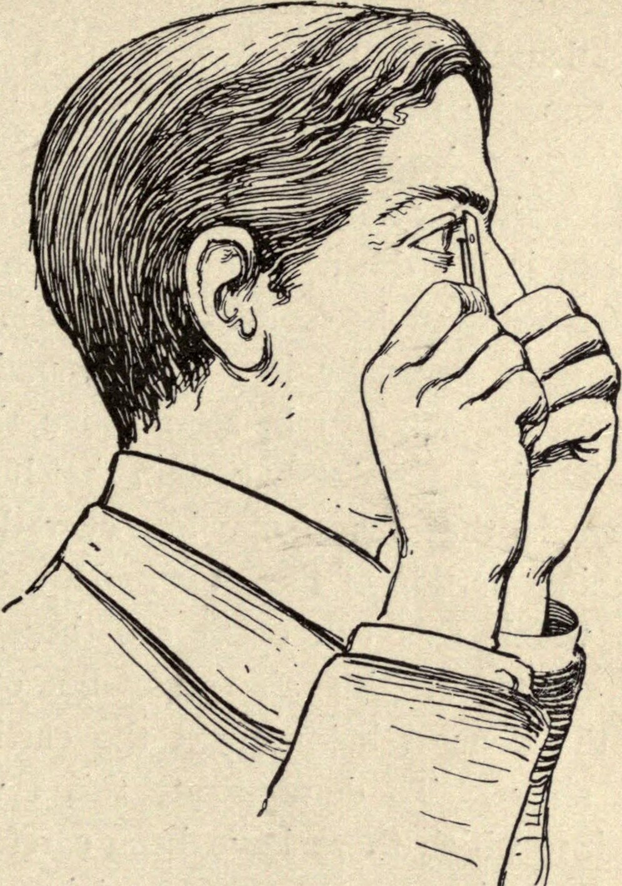
The other proof has the merit of being direct and objective, though it does not work with every eye: some people have the walls of the eyeball too thick. Stand in front of a mirror, close one eye — say the right — and hold a candle in the hand on that same side. Hold the candle at about the level of the closed eye, so that its light just grazes across the bridge of the nose into the open eye.
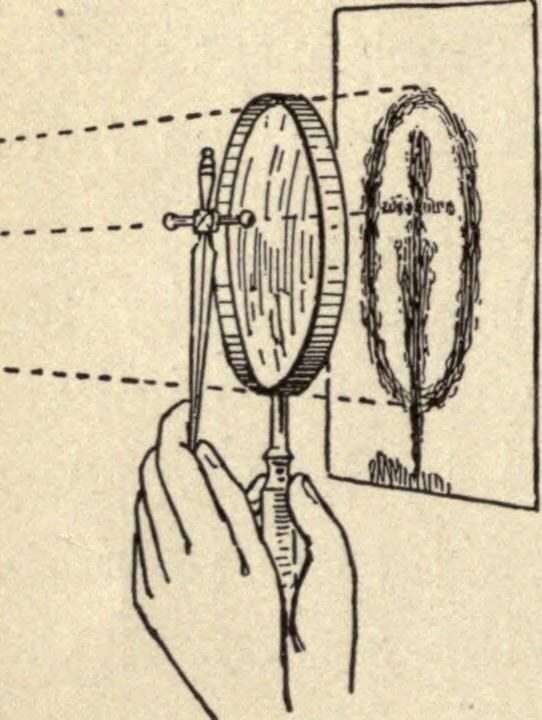
Then, if you look very carefully, you will see in the extreme corner of the eye, shining dimly through the white wall of the eyeball, a small image of the candle flame — and it is upside down. Raise the candle higher and the image goes down; lower the candle and the image rises.
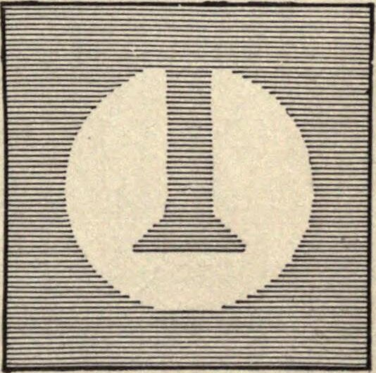
Leaving lenses now, let me show you a couple of interesting experiments that depend on the refraction we have been discussing. In passing obliquely through the earth's atmosphere, as they do when the sun is low near the horizon, the sun's rays are refracted, and he appears a little higher in the sky than he really is. Indeed, in certain circumstances, the sun can be seen above the horizon at a time when it is quite certain that he has really set; his rays in that case come by a curved path over the intervening part of the globe. The circumstances in which this can happen are these: the successive layers of air must be of different densities, the densest below, next to the earth, and the less dense above. To demonstrate this I shall take a glass tank into which a number of solutions of chloride of calcium in water, of different densities, have been carefully poured — the densest at the bottom. Notice that the beam of light sent into the trough takes a curved path (Fig. 32). The light, in fact, turns a corner.
The difference in refracting power that goes with a difference in density is beautifully shown by a very simple experiment on heated air. You all know that when air is heated it rises, becoming less dense; and that when cooled it becomes denser and tends to fall. But did you ever see the hot air rising from your own hand, or even from a hot poker? Did you ever see the cold air sinking below a lump of ice? This is exceedingly easy to show you. All I need is a very small luminous point. We will take the light of an arc-lamp shining through a small hole in a metal diaphragm close beside it, and let it fall on the white wall. Now I let this hot poker cast its shadow on the screen, and you see torrents of hot air rising and casting their shadows too. Here is a lump of ice: the cold air streaming down from it casts its shadow. Even from my hand you can see the hot air rising. A candle flame casts quite a dense shadow; and when I open a bottle of ether you can see the ether vapour, ordinarily quite invisible, streaming out of the neck and falling to the floor. Even a jet of escaping gas gives itself away when examined this way.
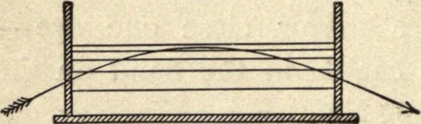
Another curious experiment consists in using as a lens a piece of glass ground so as to be curved only one way — say from right to left — and not curved the other way. If this lens is thicker in the middle from top to bottom than it is at the two edges, as in Fig. 33, it will magnify things from right to left but not from top to bottom, and so produces a distortion. I throw the portrait of a well-known old gentleman onto the screen. Then, if I put one of these cylindrical lenses in front of him, his face is distorted; and if I turn the lens round, the distortion alternately stretches his features and broadens them. There are also cylindrical lenses of the other kind, thinner in the middle than at the edges. These distort by shrinking instead.
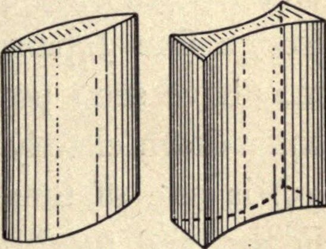
Finally, I return to the point I tried to explain to you a few minutes ago: that all any lens or mirror can do is to imprint a curvature on the wave-fronts.
The most striking proof of this is that now rare curiosity, the magic mirror of Japan. In old Japan, before it was invaded and degraded by Western customs, many things were different from what they are now. The Japanese never sat on chairs — there were none to sit on. They had no looking-glasses; their mirrors were all of polished bronze, and indeed that interesting people had carried the art of bronze-casting and mirror-polishing to a pitch no other nation had reached before them. A young woman in Japan, about to do up her hair, would kneel down on a beautiful mat before a lovely mirror standing in an elegant lacquered frame. Fig. 34 is photographed from a fine Japanese drawing in my possession. You may have seen pretty little Yum-Yum in The Mikado kneel down in just that way at her toilet table. Here (Fig. 35) is one of these beautiful Japanese mirrors: round, heavy, and fitted with a metal handle. One face has been polished with care and hard labour; the other carries, in relief, the ornament cast in the mould — in this case the crest of the imperial family, the kiri leaf, the leaf of the Paulownia imperialis, with the flower buds showing above it. The polished face is very slightly convex; but on looking into it none of you
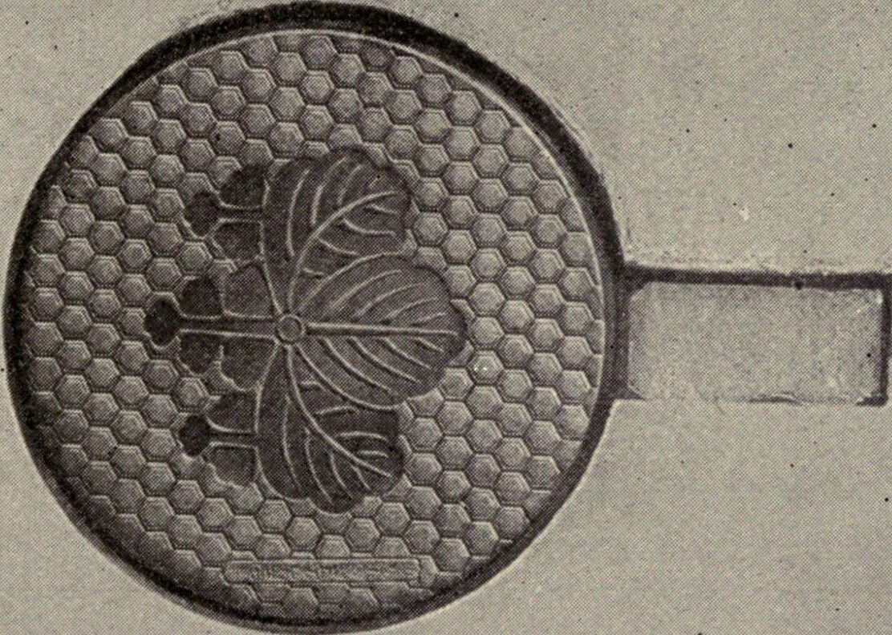
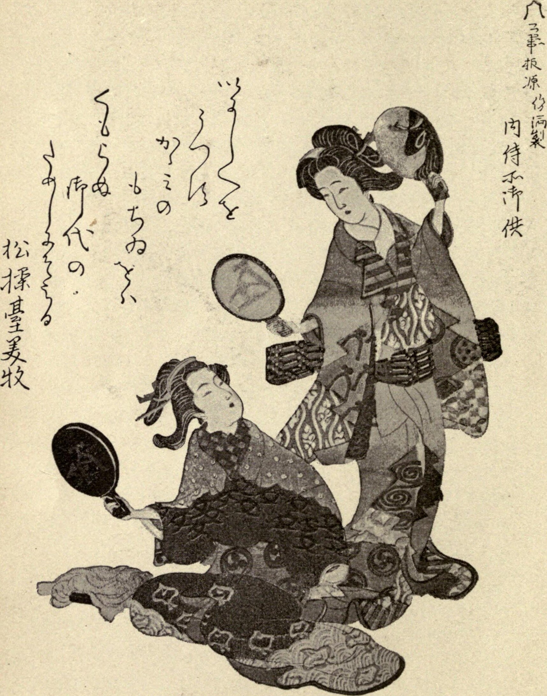
would see anything but your own faces, or the faces of your friends around you, or the things in the room. You would certainly see nothing of the ornament on the back. So far as you or the mirror's former owner is concerned, it is simply a mirror.
But now take this mirror and hold it in sunlight, or in the beams of an electric lamp, and let it throw a patch of light on the white wall or on a screen. What do you see? Why — in the patch of light reflected from the front of the mirror, you see the pattern that is on the back, thrown out in light and shade across the wall. This is the extraordinary "magic" property that has made these mirrors so famous.
Another mirror has on the back a circle in high relief, with a fiery dragon in low relief sprawling round it. The face is beautifully polished and shows no trace of the pattern behind. But when it is put in the beam of the arc-lamp it throws a patch of light on the wall in which the circle stands out as a brilliant line, while the dragon is nowhere to be seen. It is quite usual for the parts in high relief to produce this "magical" effect while those in low relief produce none.
For many years it was supposed that these mirrors were made by some trick. But Professor Ayrton discovered the extraordinary fact, in Japan, that the Japanese themselves did not know their mirrors had the property at all. It comes, in fact, from an accident of manufacture. Not all Japanese mirrors show it; those that show it best are generally thin, with a slightly convex face. Professor Ayrton demonstrated — and I have since collected further proofs — that the effect is due to extremely slight inequalities in the curvature of the surface, which arise by accident in the process of polishing.
The mirrors are cast in moulds. To polish the faces, the workman lays them down on their backs and scrapes them violently with a blunt iron tool, using great force. Fig. 37 is taken from a Japanese print in the British Museum. During this process the mirrors become slightly convex. The polishing is finished by scouring with charcoal and scrubbing with paper, after which they are "silvered" by applying an amalgam of tin and mercury. Now, during the violent scraping with the iron tool, the mirror bends — but the thin parts give way under the pressure more than the thick parts do. So the thick parts get worn away rather more than the thin ones, and are left relatively concave, or at least less convex.
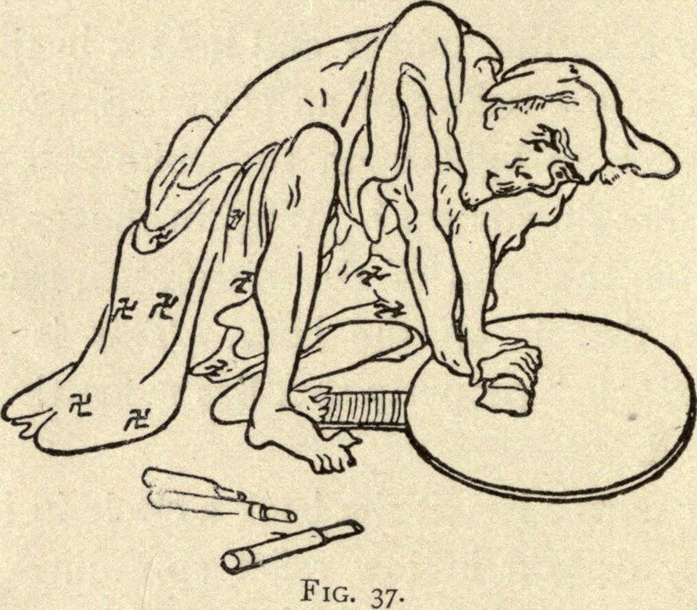
Footnote: These differences of surface curvature can be proved (1) by actual measurement, in some cases with a spherometer; (2) by placing a convex lens in front to correct the general convexity, and then observing directly, as in Foucault's method of testing the figure of mirrors; (3) by reflecting in the mirror the image of a number of fine parallel lines, whose distortion reveals the inequalities of curvature; (4) by taking a mould in gutta-percha and reproducing the polished surface by electrotype, which is then silvered — the silvered copy will act as a magic mirror. In some cases the "silvering" wears off the surface unequally, remaining longest on the parts that are slightly concave; the front then shows the pattern on the back faintly to the eye.
Among the proofs that these very slight inequalities of curvature can reveal themselves by imprinting a convergivity or a divergivity on the reflected waves, let me show you this glass mirror, silvered on the front and quite flat, but with a star engraved on its back. Merely by blowing air against the back to bend it, I make the star appear in the patch of light reflected from the face. Here the thin parts give way more than the thick ones. Again, simply heating a piece of looking-glass in one spot, by pressing a hot iron stamp against the back of it, will make the glass expand in the heated region and show the pattern of the stamp in the patch of light the mirror throws on the wall.
Lastly, I have to show you some magic mirrors made by a former pupil of mine, Mr. Kearton — English magic mirrors — which have no pattern on them at all, front or back, and yet show images in the light they reflect onto the wall. Here is one that shows a serpent; here another with a spider in its web; another with a man blowing a horn. These are made by etching the brass mirror very slightly with acid — an immersion of three seconds is ample — and then polishing the etched pattern away. After twenty minutes' polishing the pattern has vanished entirely from sight. But you may go on polishing for an hour more, and still the minute differences of curvature that remain will be enough, though quite undetectable by any other means, to produce a magic image in the patch of reflected light. Excessively minute though they are, these differences of curvature in the mirror print their form on the wave-fronts of the light and alter how strongly the beam converges or diverges.
The method of teaching geometrical optics along the lines of the wave theory, which is the key-note of this lecture, is one I have followed systematically for fifteen years in my regular courses of instruction in optics to students attending my lectures in physics. The treatment of the subject before the audience at the Christmas course at the Royal Institution, many of whom were young, had necessarily to be simplified and popularised; but the essential features of the method remain.
I also published a brief account of this way of teaching the subject in 1889, in a paper entitled "Notes on Geometrical Optics," read before the Physical Society of London and printed in the Philosophical Magazine (October 1889, p. 232).
Since the method is developed so slightly in the lecture itself, it seems worth adding, as an appendix, a few further points showing how it applies to establishing the formulae for lenses and mirrors. These are in fact established far more readily on this basis than by the cumbersome methods that have been consecrated by their adoption in every textbook of geometrical optics.
In treating optics from the new standpoint we have to think about surfaces instead of about mere lines. Waves always march at right angles to their surfaces; a change in the form of the surface alters the direction of march. It is the wave-surface, not the "ray," that must be considered. The curvature of the surface therefore becomes the all-important thing. All that any lens or mirror, or any system of lenses or mirrors, can do to a wave of light is to imprint a curvature on the surface of the wave. If the wave starts as a plane wave, the curvature imprinted on it by the lens or mirror will make it either march towards a point (a real focus) or march as though from a point (a virtual focus). If the wave already possesses a curvature, then all the lens or mirror can do is to imprint another curvature on its surface, the resultant curvature being simply the algebraic sum of the initial and the impressed ones.
As will be seen, in the new method the essential thing to know about a lens or mirror is the curvature it can imprint on a plane wave. This is nothing other than what opticians call its "power," the focal power being inversely proportional to the so-called focal length.
Another point in the method — less vital, but still an advantage — is the use, in place of the so-called index of refraction, of a quantity reciprocally related to it, which I here call the velocity-constant. The index of refraction dates from a time before the discovery that refraction is a mere consequence of the difference in the velocity of waves in different media. The index of refraction is a mere ratio between the sines (or, originally, the cosecants) of the observed angles of incidence and refraction. How useless it is to cling to it as a foundation for lens formulae is shown by this simple fact: in order to get through the very first stage of reasoning in the orthodox way of establishing the formulae, we abandon the sines and simply write down the corresponding angles, as Kepler did before Snell's law was discovered. The elementary formulae of lenses are, in fact, exactly where Kepler left them.
It is now common knowledge that the speed of light, on which refraction depends, is less in optically dense media than in air. The speed of light in air is not materially different from one thousand million feet per second, or thirty thousand million centimetres per second. If we take the speed of light in air as unity, then the number expressing the speed in denser media, such as glass or water, will be less than unity, and will differ for light of different wave-lengths. I prefer to take the speed of light in air, rather than in a vacuum, as unity, because lenses and optical instruments in general are used in air. The number expressing the relative velocity in any medium is called its velocity-constant; it is the reciprocal of the index of refraction. The velocity-constant, for mean (yellow) light, is about 0.75 for water, 0.65 for crown glass, and from 0.61 to 0.56 for flint glass, according to its density.
The Newtonian definition of curvature as the reciprocal of the radius has a special significance in this way of treating optics, because some of the most important lens and mirror formulae consist simply of terms that are reciprocals of lengths — that is, of terms that are curvatures. The more modern definition of curvature, as the rate of change of angle per unit length of the curve (Thomson and Tait's Natural Philosophy, vol. i, p. 5), is equivalent to Newton's; for if, in going along an arc of length δs, the direction changes by an amount δθ, the curvature is δθ/δs. But the angle δθ = δs/r, where r is the radius of curvature; hence the curvature = δs/rδs = 1/r.
There is, however, another way of measuring curvature which, though correct only as a first approximation, is exceedingly useful in optical problems. It consists in measuring the bulge of the arc under a chord of given length.
Consider a circular arc AP with O as its centre. Across this arc draw a chord PP' of any length you like. The diameter AB cuts it in half at right angles at M. The short line MA measures the depth of the curve from arc to chord. If the radius is taken as unity, the line MA is the versed sine of the angle subtended at B by the whole chord, or the versed sine of the semi-angle subtended at the centre. In Continental works it is common to use the name sagitta for the length of this line MA; and as that term is preferable to versed sine, and can be used generally whatever the size of the radius, I adopt it here. The proposition is that, for a given chord, the sagitta is (to a first approximation) proportional to the curvature. For it follows from the construction that
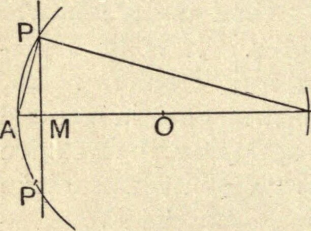
MA . MB = (PM)²
assuming PM as unity,
MA = 1/MB = 1/(2r − AM)
But for small apertures AM is small compared with 2r, and may be neglected in the denominator, so that to a first approximation,
MA = ½ · 1/r
Twice the sagitta, then, represents the curvature numerically. The error is less than one per cent when the semi-angle subtended at the centre is 10°; less than two per cent when it is 15°; less than five per cent when it is 25°.
If reckoning curvatures by the sagitta needed any justification, it is supplied by the fact that the practical method of measuring the curvature of lenses and mirrors with a spherometer consists essentially in applying a micrometer screw to measure the sagitta of the arc under a fixed chord — the diameter of the contact circle drawn through the instrument's three feet. In this case, as indeed in all cases where accuracy rather than approximation is wanted, the basis for calculating the correction lies in the actual size of the diameter of that contact circle, which is a fixed parameter for all measurements made with the instrument. The "lens measurer" used by opticians to test the curvature of spectacle lenses is a very simple micrometer that reads off directly the sagitta of the curve it is pressed against, and shows on a dial the value in terms of formula [10] on p. 65.
Footnote: Though the sagitta is numerically half the curvature, all the formulae of first approximation are homogeneous and of the first degree as regards sagittae and curvatures, so the numerical factor ½ disappears in passing from sagittae to curvatures, or the other way round.
The sign of the curvature remains to be defined. In the case of actual waves of light, the sign will be + for the curvature of waves converging on a real focus, and − for those diverging either from a luminous source or from a virtual focus. This agrees with the practice of ophthalmists and opticians, who always describe a converging lens as positive. A positive lens is one that imprints a positive curvature on a plane wave passing through it.
The unit of curvature — whether of the wave-surface itself or of the surface of any mirror or lens — will be taken, in accordance with modern ophthalmic and optical practice, as the dioptre; that is to say, the curvature of a circle of one metre radius will be taken as unity. The dioptre, originally proposed by Monoyer as the unit of focal power of a lens, was formally adopted in 1875 by the International Medical Congress at Brussels, and its great convenience has led to its universal adoption for stating the focal powers of lenses. A lens with a focal length of one metre is said to have a focal power of one dioptre. In other words, such a lens imprints a curvature of one dioptre on a plane wave falling on it. For the present proposal to extend the term from focal powers (that is, imprinted wave-curvatures) to the curvatures of curved surfaces in general, I am responsible.
In adopting a notation that embodies the new method, it is obviously advisable to choose one that fits as easily as possible with the notations already accepted. In the great majority of books on optics the recognised symbol for focal length is f, and for radius of curvature r. And in the Cambridge textbooks, for many years, the distances of the point-object and the point-image from the lens or mirror have been designated by the letters u and v. Now it is the reciprocals of these that occur in the expressions for the curvatures of surfaces or of waves. The symbols adopted for the four reciprocals are accordingly F, R, U and V. The accepted symbol for the index of refraction is the Greek letter μ; for the velocity-constant, which is its reciprocal, we take the letter h. The following is a table of the symbols and their meanings:
Symbol Meaning Current
notation
---------------------------------------------------------
F Focal curvature, or focal power of a 1/f
lens or mirror (= dioptres, if the
metre is taken as the unit of length)
R Curvature of surface 1/r
U Curvature of incident wave; that is, 1/u
the curvature it has acquired by
travelling from its point of origin
(the "incident focus") to incidence
V Curvature of resultant wave; that is, 1/v
the curvature with which the wave
emerges from the lens
h Velocity-constant of the medium; that 1/μ
is, the velocity of light in that
medium compared with the velocity in
air, taken as unity
If the curvature R of a wave at any point is known, it is easy to calculate the curvature at any other point a distance d farther from, or nearer to, the centre. The formula for the new curvature R′ is as follows:
R′ = R · 1/(1 ± Rd) [1]
The + sign must be taken where the new point is farther from the centre than the point for which the curvature R is given; the − sign when it is nearer the centre. This proposition is useful in dealing with thick lenses, and with thin lenses set a given distance apart.
As a preliminary to the lens formulae, it is convenient to consider certain cases of refraction.
Consider a retarding medium, such as glass, bounded on the left (Fig. 39) by a plane surface SS'. Let P be a source of waves falling on the surface, PM being a line at right angles to SS'. The wave-fronts, at successive short intervals of time, are represented by arcs of circles. At a certain moment the wave, had it been going on in air, would have had for its surface the position SAS', its curvature measured by the sagitta AM. The medium, however, retards the wave, so that it will only have got as far as B instead of penetrating to A — B being a point such that BM = h.AM, where h is the velocity-constant of the medium the wave is entering. The curvature of the wave is flattened as a result of the retardation. Now draw a circle through SBS' and find its centre Q. To a first approximation the arc SBS' represents the retarded wave-front, the set of wave-fronts from B onwards being represented by the series of arcs drawn with Q as centre. An eye placed in the medium to the right of SS' will perceive the waves as though they came from Q, the virtual point-image of P. Strictly the wave-fronts should be hyperbolic arcs, but if SS' is small compared with PM the circular arcs are adequate. Now AM = U and BM = V. Hence the action of the plane surface on the curvature of the incident wave — in this case a divergivity — is given by the formula
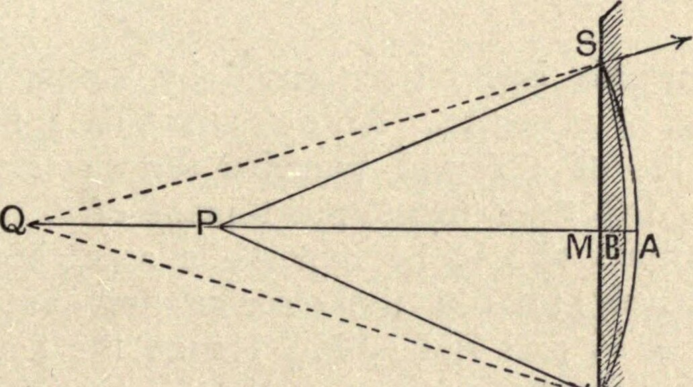
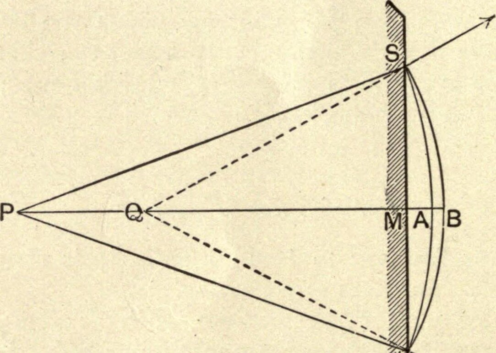
V = hU [2]
In the case above, which should be compared with Fig. 19 on p. 34, the wave had a negative curvature. If the entering wave has a positive curvature — a convergence such as would bring it to a point P to the right in air — a similar set of considerations will readily show that if, on entering the flat surface of a more retarding medium, its curvature is flattened, it will march to a focus farther to the right, the ratio of the original and the acquired curvatures depending, as before, simply on the relative velocities. Formula [2] above still holds good.
Consider next the wave emerging (Fig. 40) into air from a point P inside the retarding medium, whose velocity-constant is h. Had the wave gone on entirely through the denser medium, the wave-front would have been at SAS'; but, being accelerated as it emerges into air, it reaches B instead of A. The new curve SBS' has Q for its centre; that is to say, the wave emerges from Q as a virtual focus, its curvature having been increased. The sagitta BM is greater than AM in the ratio of 1 to h. Hence in this case the formula is
V = (1/h)U [3]
The case of an emerging wave of positive curvature leads to the same formula. Whether the initial curvature is positive or negative, emergence from the retarding medium through a plane surface into air increases the curvature.
If a plane wave travelling in air meets a bulging surface of a more retarding medium such as glass, the part of the advancing wave that meets the surface first is held back, so that the wave-front is pressed into a hollow, and on entering the second medium marches converging towards a focus. The relation between the impressed focal curvature and the curvature R of the surface is given by the formula
F = R(1 − h) [4]
It will be noticed that if the curvature of the surface is positive — that is, bulging towards the source of light — the impressed focal curvature is positive too. The formula is therefore the same for entering plane waves whether the surface is convex or concave, the sign of F following the sign of R. For the case of any two media with velocity-constants h₁ and h₂, the formula becomes
F = R (h₁ − h₂)/h₁ [5]
A plane wave travelling through a medium with velocity h and emerging through a curved surface into air has a curvature imprinted on it of the opposite sign to that of the surface itself. If a wave travelling to the right emerges through a hollow surface whose centre of curvature lies to the right, the acquired focal curvature will have its centre to the left, and so will be negative; its relation to the curvature R of the surface is given by the rule
F = R (h − 1)/h [6]
As before, for any two media with velocity-constants h₁ and h₂, the formula becomes
F = R (h₁ − h₂)/h₁ [5 bis]
which, in the present case where h₁ is less than h₂, will give F the opposite sign to R.
The cases in which a wave that already has a curvature passes through a curved surface and acquires a resultant curvature can be dealt with, without any further geometrical construction, by applying the principle of superposition of curvatures. Take, for instance, a wave with initial curvature U entering from air into a medium with velocity-constant h, curved in such a way that the focal power of the curved surface is F. Then, as the wave enters the surface of the medium, two things happen: its initial curvature is altered in the ratio of the velocities, and the focal curvature of the surface is superposed on it. In symbols,
V₁ = hU + F₁ [7]
For a wave emerging with initial curvature U inside the medium, the formula will be
V₂ = (1/h)U + F₂ [8]
Or, for a wave passing from a medium of velocity-constant h₁ into another of velocity-constant h₂, the formula will be
V = (h₂/h₁)U + F [9]
It is easy, however, to prove any one of the several cases that may arise without relying on the principle of superposition in this way.
In the case of a lens, the curvature F₁ imprinted on a plane wave as it enters at the first surface may be regarded as an initial curvature of the wave that emerges through the second surface. Emergence into air will, as shown above, alter the curvature by increasing it in the ratio of 1 to h, and will superpose on it the focal curvature F₂ due to the second surface. Hence the whole resultant curvature F imprinted by a thin lens on a plane wave will be
F = (1/h)F₁ + F₂
But:
F₁ = R₁(1 − h),
and
F₂ = − R₂ (1 − h)/h ;
whence
F = R₁(1 − h)/h − R₂(1 − h)/h,
or
F = (R₁ − R₂)(1 − h)/h [10]
This formula may be compared with the one in the current notation,
1/f = { 1/r₁ − 1/r₂ } (μ − 1).
Fig. 20 (p. 36) gives an illustration, in which however R₁ is zero, as the first face of the lens is flat.
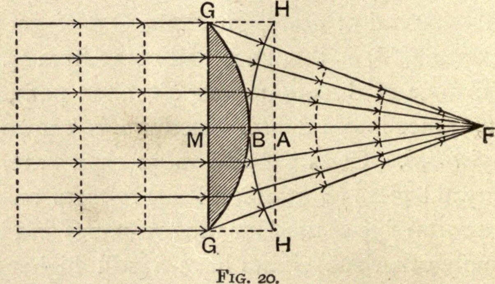
In the case of a lens made of a medium h₂ lying between two other media h₁ and h₃, the formula becomes
F = 1/(h₁h₂) { R₁(h₁ − h₂)h₂ + R₂(h₂ − h₃)h₁ } [11]
The general formula [10] for the power of any lens consists of two factors: one depending solely on the shape of the lens, the other on its material. The latter factor, (1 − h)/h, or μ − 1, is a mere number; while the former, being the difference of two curvatures, is itself a curvature. If the curvature determined by shape alone is expressed in dioptres, then on multiplying by the number that depends on the nature of the material, the resultant power of the lens will also come out directly in dioptres. In the optician's lens measurer (p. 58) the dial readings are already corrected by being multiplied by this number, which saves the calculation.
If the lens has a thickness d, the rule for expansion of curvature at the end of § 4 above at once gives
F = F₂ + (1/h)F₁ · 1/(1 ± F₁d) [12]
or
F = { R₁ · 1/(1 ± R₁(1 − h)d) − R₂ } (1 − h)/h [13]
The principle of superposition at once gives the universal formula for all lenses bounded by identical media on both sides:
V = U + F ; [14]
or, in words, the resultant curvature is the algebraic sum of the initial curvature and the impressed curvature. This may again be compared with the formula in current notation:
1/v = 1/f − 1/u.
The difference in the sign given to the term 1/u arises from the conventions adopted in the two systems.
The principle of expansion of curvature at once gives us, as the equivalent focal power,
F = F₂ + F₁ · 1/(1 + F₁d) [15]
where F₁ and F₂ are the focal powers of the first and second lenses, and d the distance between them. F will be in dioptres if F₁ and F₂ are in dioptres and d in metric units. If the two thin lenses are close together, the resultant power is simply the algebraic sum of the powers of the separate lenses: one simply adds the dioptres of the separate lenses to find the resultant dioptres.
The plane mirror (Fig. 41) has the surface SMS'. The incident wave would have had the front SAS' at a certain instant had its path lain wholly in air. The central portion of the wave, which would have reached A, travels backwards to B, an equal distance, in the same time. The sagitta BM of the resultant curvature is equal to, and of opposite sign to, the sagitta AM of the initial curvature; or
V = − U [16]
There are two cases, equally simple, of convex and concave mirrors. These are shown separately in Figs. 13 and 14 (pp. 25, 26), in both of which the incident waves are plane. Consider (Fig. 42) a plane wave that at a certain instant would have arrived at SAS' had its path lain wholly in air. The central portion of the wave has, however, struck at M, and marches backwards to B in the same time it would have taken to reach A. Hence
BM = AM,
or
BA = 2AM.
But AM measures the curvature of the mirror, while BA measures the curvature impressed on the plane wave. Hence
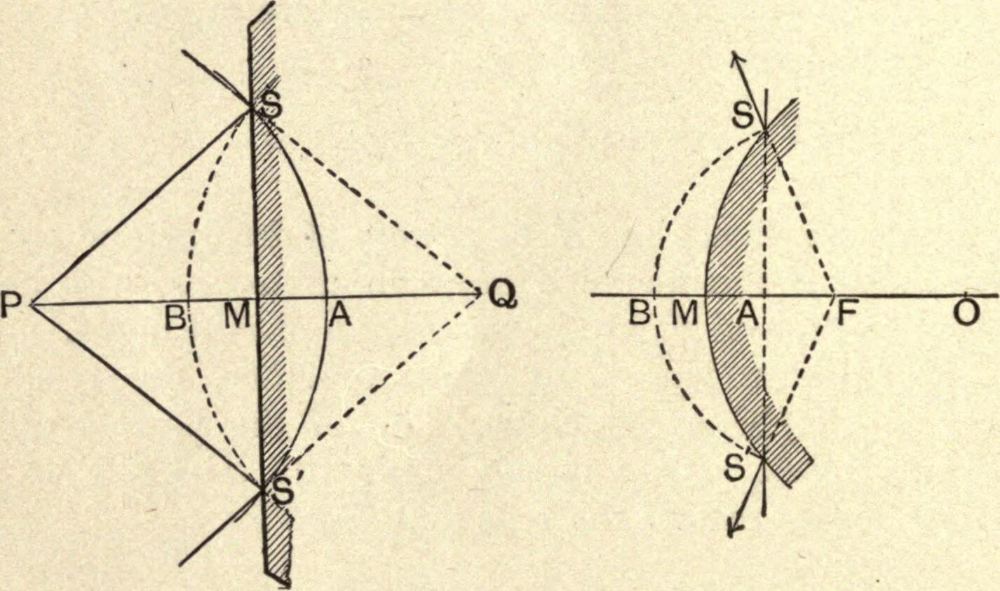
F = 2R [17]
In Cambridge notation:
1/f = 2/r,
or
f = r/2.
It is just as easy to establish the formula for the action of a curved mirror on a curved wave. The principle of superposition at once leads to a general formula expressing the sum of the mirror's two actions on the wave: it reverses the wave's initial curvature and then imprints a focal curvature on it. In symbols,
V = − U + F [18]
Applying wave principles to find the direction of a refracted beam is best handled by Ampère's modification of Huygens's construction, as in Fig. 43. That figure also illustrates the dispersion produced by the difference between the velocities of light of different colours.
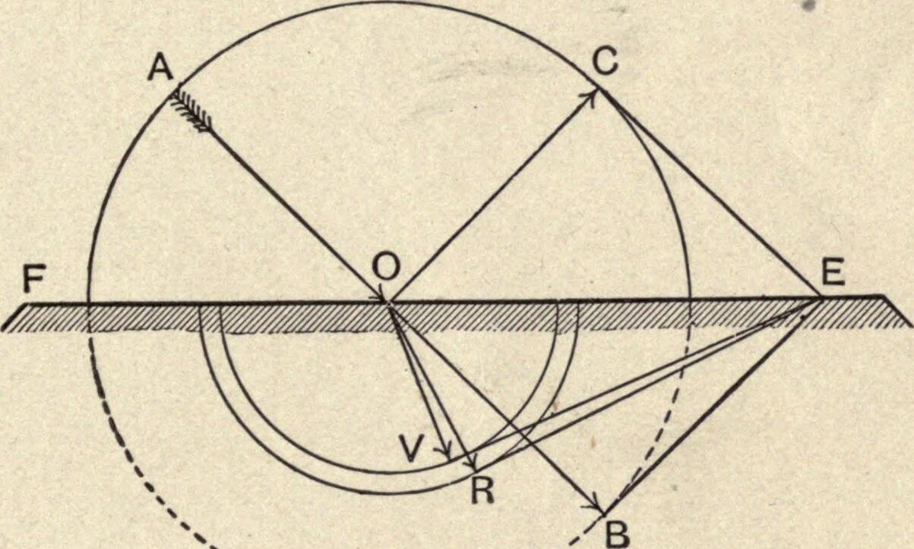
In the time light of any colour would travel 1 foot in air, red light would travel about 7½ inches in glass, and violet light about 7 inches in glass. The velocity-constant for glass of this kind is 0.625 for red waves and 0.583 for violet waves. Let EF be the surface of the glass (Fig. 43) at which the wave enters. It marches in the direction AO. Consider the portion of wave-front that arrives at O. If we regard it as setting up a new set of waves, these will spread in circles according to the velocity. So, around O as centre, draw a number of circles: one of unit radius, to show how the wave would have spread in a given time had it spread all round in air; one — a semicircle only — of radius 0.625, to show how far the red wave would have penetrated in glass; and one, also a semicircle, of radius 0.583, to show how far the violet wave would have travelled in glass in the same time. Now produce OA to B, and at B draw a tangent meeting the surface of the glass at E. From E draw as many tangents as you can to the circles, to represent the wave-fronts. EC will be the wave-front of the part of the light reflected back along the direction OC; ER will be the wave-front of the red light refracted down along OR; and EV will be the wave-front of the violet light refracted down along OV.
Colour and wave-length — Rainbow tints — The spectrum of visible colours — The spectrum made by a prism — The spectrum made by a grating — What white light is made of — Experiments in mixing colours — Analysing colours — Blue and yellow mixed make white, not green — Complementary tints — Contrast tints produced by tiring the eye — Other effects of persistence of vision — The zoetrope — The animatograph
Waves of light are not all of the same wave-length, and the difference in size makes itself known to our eyes as colour. Just as sounds of different wave-lengths produce in our ears perceptible differences of pitch, so lights of different wave-lengths produce in our eyes different sensations, which we call colour. Any simple kind of light — I am not speaking here of mixtures — can be described in two ways: either (1) by stating the colour sensation it produces in the eye, or (2), more accurately, by stating its wave-length, or the frequency of its vibrations. Finding the wave-length of any particular kind of simple light may not be an easy matter, but once it has been measured, the statement of that wave-length is an accurate description.
To begin, then, here is a table in which I have set down, in order of wave-length, biggest first, the various kinds of simple light that are visible to the eye.
Name of colour Wave-length in Wave-length in
millionths of millionths of a
an inch centimetre
------------------------------------------------------------
Extremest red 32.4 81.0
Red 26.0 65.0
Orange 23.3 58.3
Yellow 22.0 55.1
Green 20.5 51.2
Peacock 19.0 47.5
Blue 18.0 44.9
Violet 16.0 40.0
Extreme violet 14.4 36.0
You will notice that the red waves are about twenty-six millionths of an inch long — about 1/39000 of an inch — while the violet waves are a little more than half as long, sixteen millionths of an inch, or about 1/60000 of an inch. All the other simple kinds of light lie between these. Notice the names of the colours. In the list you will find neither white nor black, for white, as I shall show you presently, is a mixture of all these simple colours, and black is simply the absence of all light — mere darkness.
Now this set of colours can be produced in its natural order in several different ways. The simplest is to take some white light, which contains all these colours mixed together, and sort them out. But how? That is what I want you to understand. In nature we find them sorted out in the rainbow, where these tints stand side by side. Can we make an artificial rainbow? How is a rainbow made? Of the smiles of Heaven mingled with the tears of Earth, if we believe the poets. Of sunlight and raindrops — is it not? — which refract the light and, in refracting it, sort out the different kinds and display them in their proper order. That may be a very incomplete description of how a rainbow is built, but it is good enough to give us a hint for our experiments.
Footnote: "We are like Evening Rainbows, that at once shine and Weep — things made up of reflected splendour and our own Tears." — S. T. Coleridge.
Here is an optical lantern with an electric arc-lamp inside, a sort of miniature sun to give us white beams of light. We let the light come out in a fine straight beam, and in that beam we place — to serve as a kind of magnified raindrop — this sphere of water held in a thin shell of glass. See the bow it casts back on the whitened screen. You can recognise the usual tints, though they are not as brilliant as in a natural bow.
But now that we have our clue, let us go further. Instead of the sphere, try a three-cornered bottle full of water. We have no bow now. The beam of light is abruptly turned upward in a new direction and falls on the wall or ceiling. But though we have lost the shape of the arch, we have gained in the development of the rainbow hues. We now have a brilliantly coloured, though rather hazy, patch of colour. Try again, and this time vary the liquid. Here is a three-cornered bottle full of turpentine. The colour patch is thrown further round, but the band of tints is broader too. Try oil of cinnamon: better still. Try carbon disulphide: more brilliant still, though still fuzzy at the edges. Naturally one begins to think that if a transparent three-cornered bottle of liquid will show rainbow effects like this, a three-cornered piece of transparent glass ought to do the same. And so it does — and so we arrive at the well-known glass prism for producing a spectrum of colours.
The word spectrum means simply "an appearance": in this case an appearance of colours, sorted out in their order. To emphasise that a prism has produced it, the spectrum in this case is sometimes called the prismatic spectrum. In every case you will have noticed that the order of the colours is the same, and that red light is always refracted least and violet light most. If the refractions of these colours were equal, the prism would not separate them at all. The difference between the refraction of the most-refracted (violet) and the least-refracted (red) of the visible kinds of light is sometimes called the dispersion of the prism.
We have now reached the stage of Newton's researches, but there is one further improvement to make, one he tried himself. Let us try altering the arrangement of our beam of light. You see we have been using a beam streaming out through a round hole; with nothing in its way, it falls as a round spot on the wall. Newton used sunlight streaming through a hole in a shutter. Well — let us try the effect of holes of different sizes and shapes. And while we are about it, let us try focusing the image of the aperture on the wall, by putting in a positive lens, so as to work with a well-defined spot of light instead of a fuzzy patch.
We begin with round holes of different sizes, trying them one after another. Now put the prism — the best of those we have tried — in the path of the light. You see that when the aperture is a large circular hole, the colours overlap a good deal near the middle and give a mixed effect; whereas with a smaller hole, though we have less light altogether, the colours are more intense, simply because they overlap less. Let us take the hint, then, and put a narrow slit in place of the small round hole. By using a slit with movable jaws, like a parallel ruler, we can set it as wide or as narrow as we like. Again we find that if the slit is too wide the colours overlap, while with a narrow slit the tints are more intense.
Our successive improvements have led us, then, to the following combination: a slit to limit our beam, a lens to focus the image of the slit as a fine white line on the screen, and a prism which, in refracting the lamp's light, also splits it up (Fig. 44) into the various colours of which it is compounded.
Perhaps you think I am assuming things not yet proved when I describe the prism as splitting the lamp's light into the colours it is compounded of. Well, I admit that "splitting it up" is not the best phrase; "sorting it out" would be better. But either phrase carries with it the assumption that white light is a mixture that can be split up or sorted out into simpler constituents. That is precisely Newton's great discovery. White light, supposed until then to be a simple thing in itself, was found and proved by him to be a mixture. The prism added nothing to the white light; it simply spread out the constituents in their natural order. More than a hundred years later the great poet and dramatist Goethe — "master of those who know" — fought against this idea, and threw the whole weight of his genius into demonstrating, in his Farbenlehre, that Newton's views were mistaken. According to him the prism does not merely spread out the simple constituents of white light: it takes simple white light and adds something to it that gives it a tint of one sort or another. But it was in vain. Beautiful as many of Goethe's experimental researches were, his theory died of starvation. Today not a single scientific man, even in Germany, holds Goethe's theory of optics — though his fame as a poet stands immortal.
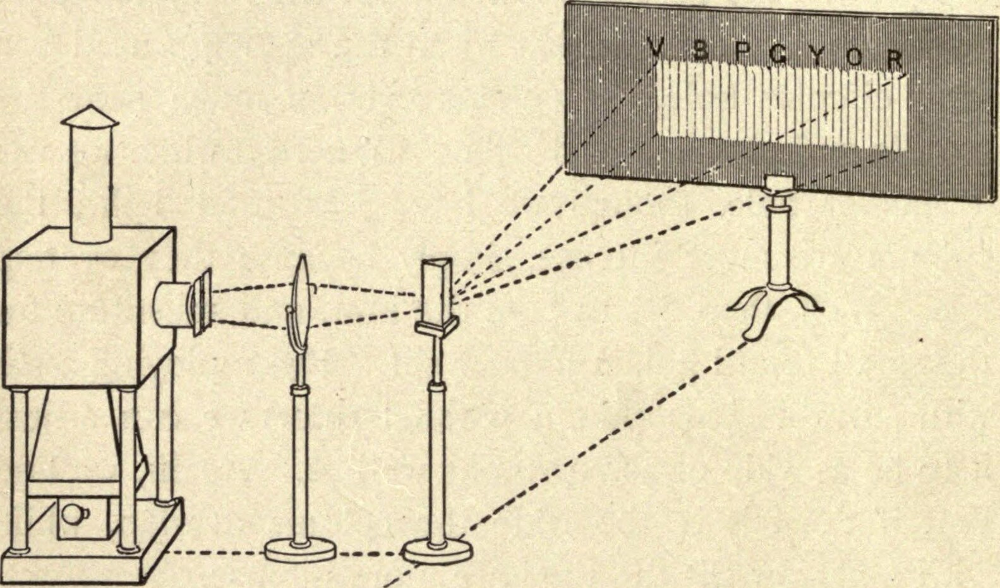
Before we go on to the other experiments by which Newton's theory of the compound nature of white light is established, let me show you a second way of spreading white light out into a spectrum of colours. This time I use no prism, and the effect is not produced by refraction through any transparent solid or liquid. Instead I use this little instrument I hold in my hand. It is called a diffraction grating. It is simply a polished mirror of hard bronze, a little over two inches wide, across whose surface a great number of parallel, equally spaced scratches have been ruled with a diamond. You may think it odd to call a scratched mirror a "grating." But the fact is that the properties it has were originally discovered by using gratings made of fine wires. It would be quite impossible, however, to make a grating with wires as fine as these scratches. When you want a perfect diffraction grating there is nothing for it but to rule diamond scratches, and they must be ruled by machinery of the utmost precision. Across the face of this little mirror about 30,000 parallel lines have been ruled, and not one of them is a millionth of an inch out of its proper place. It was ruled at Baltimore on Professor Rowland's machine. The exact number of lines is 14,400 side by side to the inch.
I set up the grating so that the light of my lantern, coming out through the slit, falls on it, and you see the spectrum it casts on the wall. This is not a prismatic spectrum, for there is no prism. It is a diffraction spectrum, and that is not quite the same thing. As you can see, the grating in fact casts a whole series of spectra on the wall. It reflects back centrally a white image of the slit. To right and left of that we have on each side a bright spectrum with all the colours. Then, still farther out on each side, a rather longer and nearly equally brilliant spectrum of the second order; and, more dimly, and slightly overlapping one another, spectra of the third and fourth orders. We shall deal only with the first bright spectrum. There are our rainbow tints in their order, as before. But notice that now it is the red light that has been turned aside most, and the violet least. Notice, too, that while the order of the colours from red to violet is the same as in the prismatic spectrum, the spacing is not. In the prismatic spectrum the orange is huddled up towards the red, and the yellow towards the orange, while the violet and blue are greatly stretched out. In the diffraction spectrum the red end is not unduly squeezed together, nor the violet end unduly drawn out.
Time does not allow me to dwell on the reasons for these differences. Suffice it to say that they depend on the wave-lengths of the different kinds of light, and on their relation, in the one case, to the size of the molecules of the refracting prism, and in the other to the width of the bars of the grating.
Footnote: See the Appendix, p. 100.
Incidentally, you may be interested to know that this property of diffraction, belonging to a surface covered with parallel scratches, can be transferred from the grating to another surface by simply taking a cast of it. Here is a cast made in gutta-percha from the grating; it is itself a grating. Like the bronze original it glitters with rainbow tints, and will throw a set of spectra on the wall. Mother-of-pearl glitters with rainbow tints for essentially the same reason: it naturally possesses a structure of fine striations or ridges which produce diffraction, though rather irregularly. Because the ridges are not quite equally spaced, the tints are never pure. But do you know that if you take an impression from a piece of mother-of-pearl in sealing wax — black wax is best — you will find it glitters just as the mother-of-pearl does?
Footnote: Made by Mr. E. Rousseau; see the footnote on p. 31.
Whichever of these two means of producing a spectrum we use — prism or grating — you will notice that what we are doing is sorting a mixture into its constituents. We are analysing the light; and presently we shall be able to use this sorting process to find out what some of the compound colours are made of. But in the meantime let us go back to the prism to show a few further experiments.
To produce a good arched rainbow artificially, but in all the splendour of the natural colours, I turn to a specially built compound conical prism. A cone of light crown glass is mounted point inwards (Fig. 45) inside a hollow truncated cone of glass, the face of which is closed with a glass plate. The ring-shaped space between them is filled with a highly refracting liquid,
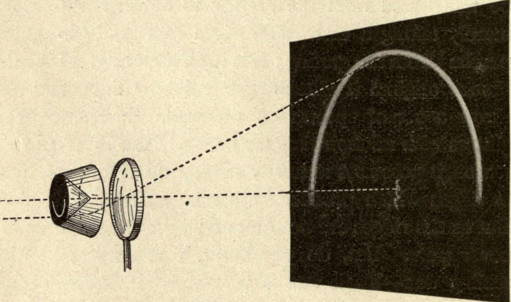
cinnamic ether. A ring-shaped slit in a plate of tin-foil is fixed against the end of the cone, and the whole prism is placed in a nearly parallel beam of light coming from the lantern. Beyond it is a lens to focus the light.
Footnote: This liquid is excellent for direct-vision prisms, since it has exactly the same mean refractive index as one kind of the light crown glasses made at Jena. Figs. 46 and 47 show the direct-vision prism with parallel end faces that I designed in 1889 and had built by Messrs. R. and J. Beck. A prism A of this glass, with a refracting angle of 135°, is immersed in a glass cell filled with cinnamic ether. Yellow light, as shown in Fig. 47, goes straight through, while red light is thrown to one side and violet to the other. This prism is very suitable for projecting the spectrum onto a screen.
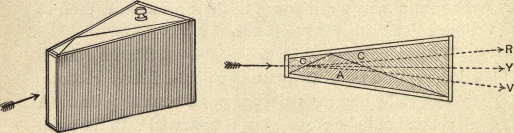
So we throw onto the white screen a rainbow in almost exactly true proportions. Note the order of the colours: red along the outer edge, then orange, a trace of yellow, green, peacock, blue, and last violet along the inner edge. This is the correct order, as in the natural rainbow. But you often see it drawn wrongly by artists, who put the colours in the wrong order, or set the red along the inner edge and the violet along the outer.
My assistant will now give us on the screen the bright spectrum we saw before, so that we may study the effects of different kinds of light on coloured fabrics. Here is a piece of blue drapery, and here a piece of scarlet. What happens when we put these into the spectrum, first into one kind of light and then into another? If we put the blue cloth into the red or orange or yellow light it looks simply black. But in the blue part of the spectrum it looks blue; in the violet part, violet; in the green part, green. Clearly its surface is incapable of reflecting back red, orange or yellow, while it can reflect back green, blue and violet. In fact, when ordinary daylight falls on it, it absorbs some of the waves and destroys them, while it reflects others back to our eyes, giving us on the whole a blue effect from the green, blue and violet waves mixed together. The red cloth, placed in the red part of the spectrum, looks red; in the orange and yellow parts it looks dull orange and dull yellow; in all the other parts it looks black. This red cloth, then, absorbs and suppresses all the violet, blue, peacock and green light, and reflects back only what lies at the red end of the spectrum. But of course it would only look red if there were some red light present, and the blue cloth would only look blue if there were some blue light present. The colour is really not in the cloth at all: it is in the light the cloth reflects.
To prove this, let us see how these red and blue fabrics look when we shine on them a light with no red, no blue, no green and no violet in it, but only yellow. The monochromatic lamp that Professor Tyndall used to employ here (Fig. 48) has been lit. It consists of an ordinary gas burner into whose dim flame salt is thrown, making a splendid yellow flame with no other kind of light in it at all. I hold these blue and red fabrics in the light of the yellow flame. One appears simply black, the other a dull grey. A set of gaily coloured stripes painted on a board come out as dull greys and blacks, except the yellow stripe, which looks brighter than all the rest. Even brightly coloured flowers look merely black or grey, while the complexion of a human face looks simply ghastly.
Footnote: The salt is held in a ring-shaped pan at the top of an external tapering chimney of sheet iron. This pan has a gauze bottom, through which, on tapping the chimney, the salt falls as a fine powder into the flame.
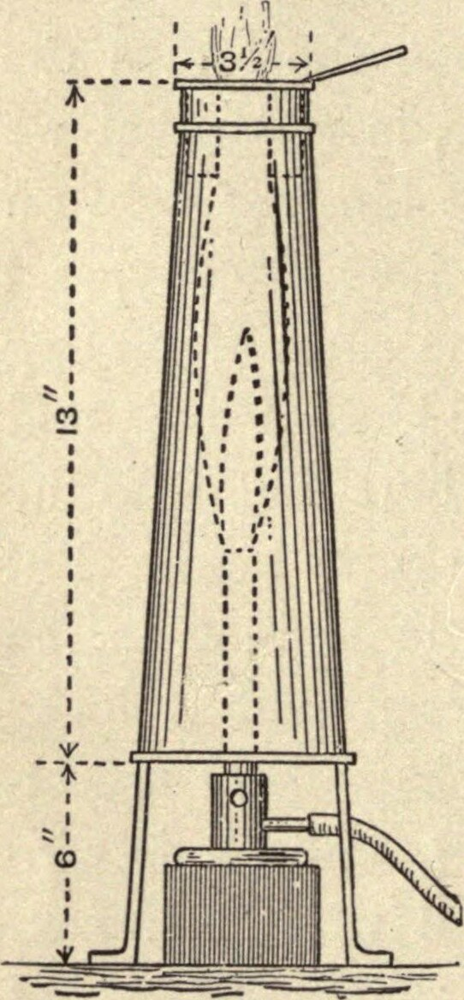
Now, if Newton's view is right that white light consists of lights of various colours mixed together, it ought to be possible to make white light by taking lights of all the various colours and mixing them. Do not try mixing pigments from your paint box — they will not make white paint when mixed. That is because pigments are not lights: they are darknesses rather than lights. Think for a moment what you do when you want to paint a card crimson. You take a piece of white card and paint over it a pigment that darkens it, so that it sends back to your eyes crimson only and absorbs the other parts of the white light. No — you must not mix pigments. You must mix lights, and mix them in the right proportions.
There are several ways of doing this, and the first we shall take is to recombine the spectrum colours themselves into white light. We take the spectrum light as it comes obliquely out of the prism and reflect it onto the screen with a piece of silvered mirror glass. By simply waggling the mirror glass on its stand, we make the spectrum sweep rapidly back and forth across the screen. The colours all blend by rapid superposition, and we get a white band with colour only at the two ends.
Another way to recombine the spectrum is to use a cylindrical lens (Fig. 33, p. 49), placed in the path of the diverging coloured light so that it gathers it back to a focus on the screen and gives us back the image of our slit as a white streak.
An independent plan, suggested by Newton, is to paint the various tints on a circular card (Fig. 49) in narrow sectors, in proportions found by experiment to give the best result; then put the card on a small whirling table and spin it so fast that the colours all blend in the eye, giving, when well lit against a black background, the effect of white. A similar arrangement can be made for the lantern, the sector disk being painted in transparent tints, or coloured by fixing narrow wedges of coloured transparent gelatine to it. This method of colour-mixing — whirling before the eye surfaces tinted with the colours to be mixed — can be extended to other cases. Suppose we want to mix red and green, say, or blue and orange: we have only to paint a round disk (Fig. 50) with the colours to be mixed, in semicircles, quadrants, or any other proportion we like, and put it on a whirling machine to see the effect.
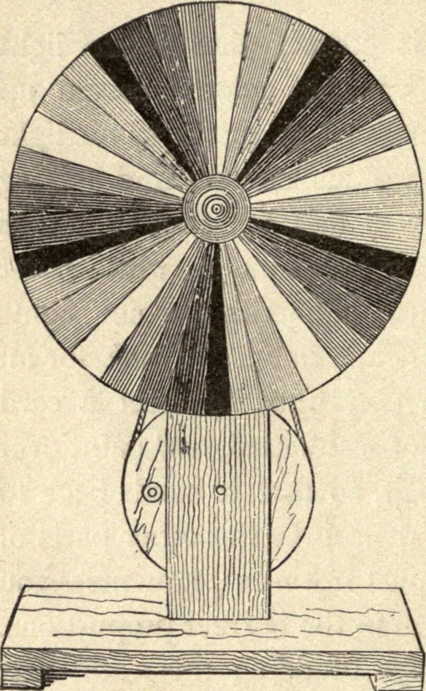
Footnote: The colour whirler actually shown was lent by Messrs. Harvey and Peak, who use strips of brilliantly tinted paper pasted on a card so as to repeat the gamut of colours from red to violet five times round the circle. If the colours are repeated in this way, the card does not have to be whirled very fast to produce white.
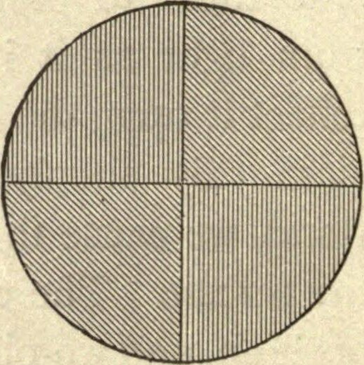
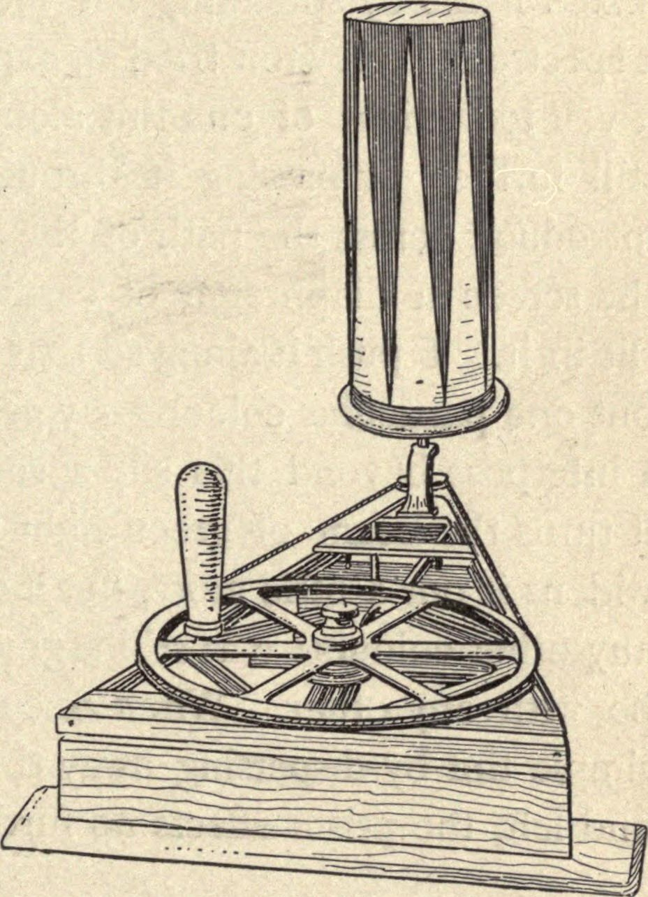
The arrangement I now show you is an improvement in several respects. On the whirling table is fixed a light wooden cylinder, slightly tapered towards the top so that a paper sleeve or tube with colours painted on it can easily be slipped over it. I have several of these paper tubes here. The colours to be mixed — in most cases coloured paper cut to shape and pasted on — are arranged in two sets of narrow triangles, as shown in the figure. When these are whirled you get the combination in every proportion at once. If red and green are the two colours chosen, for instance, one end of the revolving surface is full red, the other full green, and the colours fade gradually into each other. About the middle you get a curious grey which, seen by daylight, looks rather greenish, but by gaslight or lamplight looks rather reddish, because red waves are relatively more plentiful in artificial light. This change of apparent tint is like the one seen in the rare gem called alexandrite, which is green by day and deep red by night.
Footnote: A gem of the emerald family found in a mine in Siberia belonging to the Imperial Russian family.
Leaving colour-mixing by rotation, I return to the power of the prism to analyse mixed lights by spreading out their constituent colours as a spectrum. Newton tried an experiment to see whether, if you took light of a single tint alone, you could split it up any further by passing it through a second prism. I put across the path of the spectrum, on its way to the screen, a cardboard diaphragm with a narrow slit in it. I slide it along so that the slit lets through waves of one particular colour only — say green. Now, if I put a second prism beyond this slit, I find that it turns the beam of green light round through an angle and widens it a little more, but it does not split it into any other colours: it is still a green beam. And so it would be with any other colour. Once you have obtained a simple tint by dispersing the other colours away to right and left, the prism can carry the analysis no further.
Footnote: In this sense every pure spectrum tint is a primary tint, and the number of such tints incapable of further analysis is infinite. Each kind of light of a given wave-length is a simple tint. But the eye possesses three different colour sensations, each of which is physiologically a primary sensation. These three primaries are a red, a rather yellowish green, and a blue-violet. Any tint other than these excites more than one sensation. A pure spectrum yellow, for instance, excites both the red and the green sensations; yellow cannot therefore truly be called a primary. In the same way the peacock tint excites the green and the blue-violet sensations.
Now let us try a few experiments in analysing colours with the prism. There are many well-recognised tints, known by familiar names, that are nowhere to be seen among the simple colours of the spectrum, for the simple reason that they are compound colours. There is no purple in the spectrum, for purple is a mixture of red from one end with violet or blue from the other. Pink does not exist in the spectrum either, for pink is red diluted by a little of every other colour — that is, with white. Nor is there any chocolate colour, which is red or orange diluted with black — a little red or orange spread where there is no light of any other colour. Buff, olive, russet, bistre, slate and many others are compounds too. Well, whatever they are, the prism can analyse them.
Here is a piece of gelatine, of the kind you may find in a Christmas cracker, stained a beautiful purple. Why does it look purple? What kinds of light does it actually let through, that it should look purple? I have only to put it in the path of the white light for you to see the beautiful purple colour on the screen. Now, putting the prism in front of it, you see the purple spread out into its constituents. There is red at one end; there are violet and blue at the other. But in between, where orange, yellow, green and peacock should come, there is darkness. The purple stain in the gelatine cuts all these off and lets the others go by. Here is another piece of gelatine stained with magenta — you see it lets through more red, and a little violet and blue. Here is a small glass tank containing the pale purple liquid known as Condy's fluid, permanganate of potash; putting it across the beam of light through the prism, you see (Fig. 52) that it cuts off the yellow and greenish yellow, but lets through red and orange at one end of the spectrum and violet, blue, peacock and some green at the other.
Here are some coloured liquids in bottles (Fig. 53): a red liquid — amyl alcohol dyed with aniline red — floating on top of a green one, cupric chloride dissolved in dilute hydrochloric acid, without mixing. The red, as you see when I put it to the test of the spectrum, is a good red: it cuts off every tint but red. The green is a fairly good green too: it cuts off everything except green, peacock and a trace of blue. What will happen if I now shake the two solutions up together? I get a mixed liquid that cuts off everything, and is simply black.
Many other instructive experiments can be tried with coloured liquids, their apparent tints depending on which kinds of light they absorb and which they let through. Any liquid that merely absorbs green will look reddish, since in the balance of colours it transmits, the complementary red will predominate. In the same way, any liquid — or glass — that merely absorbs the blue part of the spectrum will look yellow. It is even possible to find a liquid which, though it looks yellow to the eye, really transmits nothing but green and orange, which when mixed have the same effect on the eye as yellow. This proves that the sensation of yellow, though it can be excited by a simple spectrum tint of a particular wave-length, can also be excited by a mixture of other tints, and is therefore not a primary colour sensation as red, green and blue-violet are.
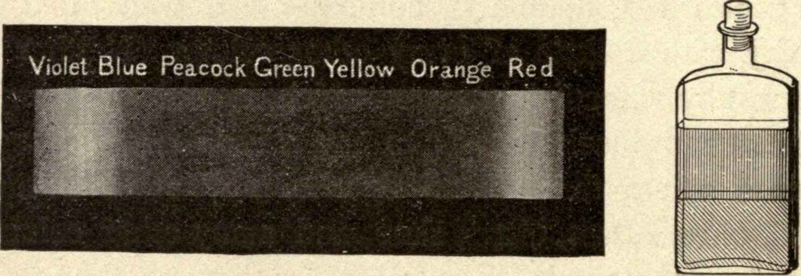
Footnote: The liquids named have the very convenient property of separating from one another within a few minutes. In preparing the experiment, a little trouble and care are needed to get the solutions to balance. By adding first a little of the red liquid and then a little green, as required, and trying the effect of shaking them up, the liquids can be adjusted. Various other colour combinations are possible in the same way.
And this brings me to another point: that while yellow light can be made by mixing orange and green lights together, it is found to be absolutely impossible to produce green by mixing any two other pure lights. Blue light and yellow light, as I said above, do not make green when mixed — they make white. This is so fundamental a matter that it is worth illustrating with further experiments.
My assistants have two lanterns. Each is now throwing a round white disk of light onto the screen. In front of one lantern a film of blue gelatine is put in — and that disk turns unmistakably blue. In front of the other a film of yellow gelatine is put in, and the second disk of light on the screen becomes bright yellow. Now one of the lanterns is turned a little aslant so as to make one disk overlap the other (Fig. 54). Where they overlap, and the lights mix, we have — not green — but white! I put a colour whirler in the lantern with a disk half covered with blue and half with yellow gelatine; and on whirling it round, the blue and yellow mix and make white.
Footnote: Mixed solutions of chromic chloride and potassium bichromate.
Footnote: Just as it is also impossible to produce red light by mixing any other two simple lights, or to produce blue-violet by mixing any other two simple lights. These three — red, green and blue-violet — are the three primary colour sensations.
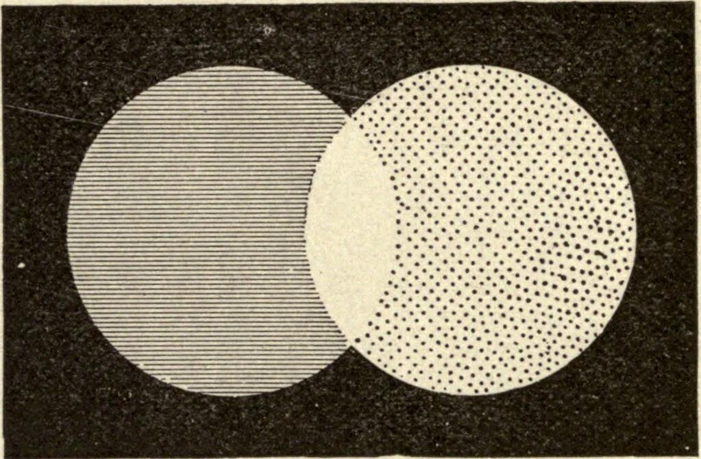
Here is an experiment any child could do at home. A cardboard disk is divided into twelve sectors, six of them covered with blue paper and the alternate six with yellow (Fig. 55). I push a pin through the centre and spin it by hand — and behold, blue and yellow mix and make white.
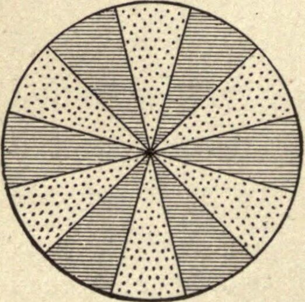
We give the name "complementary" to any pair of tints that mix in this way to make white. That is to say, if two tints are so related that each supplies what is missing in the other, we describe them as complements of one another. Here is a table of some tints that experience shows to be complementary to one another:
Crimson is complementary to Moss green
Scarlet " Peacock
Orange " Turquoise
Yellow " Blue
Primrose " Violet
Green-yellow " Purple
There are other cases besides these that are not set down in the list. Now, seeing that the sensation of white is not excited unless all three primary sensations — red, green and violet — are stimulated at the same time, it is clear that when two colours are found to be complementary to one another, they cannot possibly both be primary colours. One may be; but in that case the other will be a mixture of the two remaining primaries. If primary red is one of the two complementary tints, the other will be a bluish green, or peacock colour, made up of primary green and primary blue-violet mixed together.
Footnote: The red that is primary is a full red; the green that is primary is a rather yellowish green, and the violet a rather bluish violet.
Probably most of you know the subjective colours that appear when you close your eyes after looking at a bright light. These have to do with fatigue of the nerve and with the nervous stimulation left over. But closely connected with them are the "contrast" colours seen against a grey background after the eye has been tired by looking at a coloured object. The tints of these contrast colours are approximately, though not exactly, the complementaries of the colours that excited them. Thus, after staring hard for some time at a bright green disk, the after-image against a grey wall has a reddish tint.
There are many ways of showing these tints. I will give you as an example the one used in this theatre by the late Professor Tyndall. Against the white wall, half lit with daylight, I hold up on the end of a stick a cardboard disk about a foot across, covered with bright blue paper (Fig. 56). The beams of an electric lamp are turned on it to make the tint more brilliant. You must look at it fixedly while I count to thirty in a clear voice. When I reach "thirty" I shall drop the disk; but you must go on looking at the same part of the wall, where you will see — now that I drop it — a yellow image, a ghost, the same size as the blue disk. In the same way, if I hold up a red disk you will, when your eye is tired, see a green or peacock-coloured ghost. The reason for the contrast tint is this: if you have tired the eye, or any region of the retina, with red waves, that region becomes less sensitive to red than to the other colours. So if grey — that is, diluted white — is then presented to the eye, the retina at the tired spot is more sensitive to all the other tints present than it is to red, and will therefore on the whole receive an impression in which green predominates.
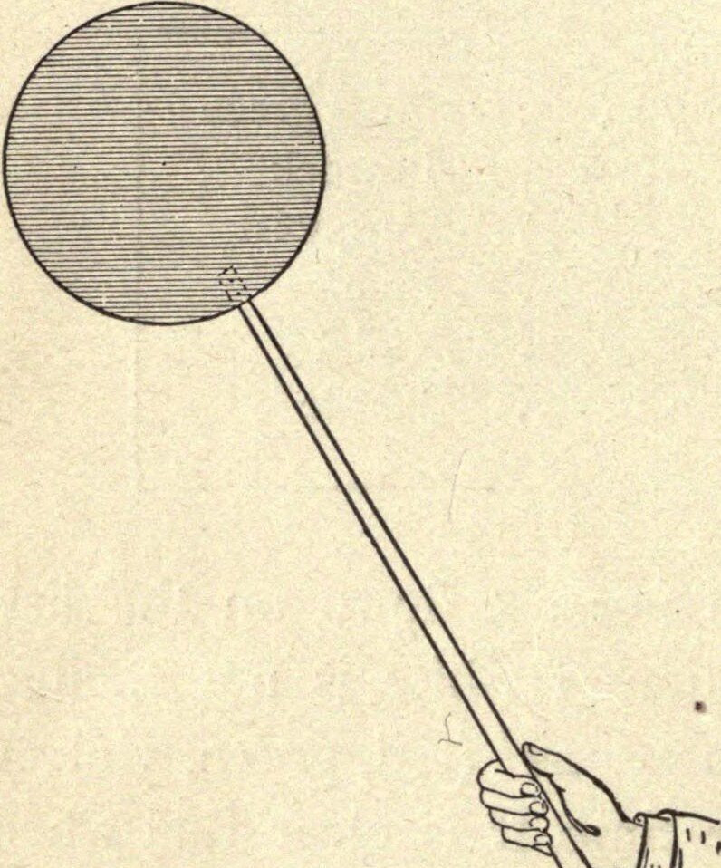
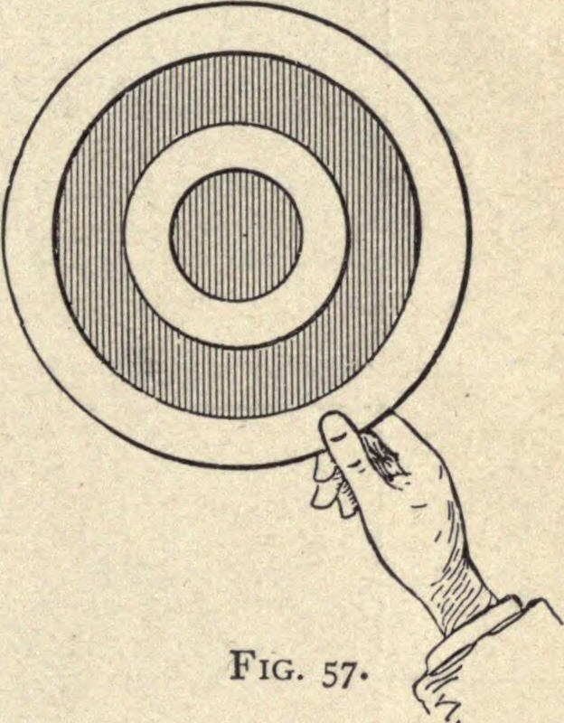
Another way to see the contrast tints is to stretch a sheet of semi-transparent coloured tissue paper over a cardboard ring, and gum a smaller ring of white cardboard onto it as a foreground. Diffuse daylight should be allowed to fall on the white card from the front, making it look grey, while the coloured tissue is lit from behind by suitably placed lights. The eye therefore sees a grey ring between an inner and an outer circle of colour. After looking for only a very few seconds, it will pronounce the grey card to have taken on a complementary tint. If the tissue paper is orange in hue, the grey card ring takes on a bluish-peacock colour by contrast.
But the persistence of impressions in the eye is not confined to phenomena of colour. All ordinary visual impressions last a perceptible time; the images of brightly lit objects, even when seen for only a thousandth of a second, take a whole tenth of a second to die away. If, then, you can present a second impression to the eye before the first has faded, the effect is the same as though both had been there at once. A familiar toy that works on this principle, called the thaumatrope, consists of a bit of white card held between two strings on which it can be twirled. On one side is painted, say, a horse; on the other, his rider. Blow against the card to set it twirling and you see the rider (Fig. 58) mounted on his horse. We may try this experiment in a new way. On one side of an upright card is painted the outline of a birdcage; on the other side, a bird. With a band and pulley we spin the card rapidly — and there you see the bird inside its cage.
I hold in the lantern a small disk of sheet metal pierced with a number of holes, giving a crowd of bright points of light on the screen. Then, on making the disk vibrate on the end of a spring, or spin about a pin, each little white hole apparently turns into a luminous line moving about on the screen.
Another optical illusion depending chiefly on persistence of vision is given by the strobic circles I devised in 1877. Give these black and white patterns a small "rinsing" motion, and the circles and toothed wheels seem to turn on their axes.
The latest of the optical illusions, and one not easy to explain, is Benham's colour top. A number of narrow black lines are drawn as arcs of circles of various lengths on a white surface, half of which (Fig. 61) is coloured black. On spinning this disk and viewing it in a strong enough light, the arcs of some of the circles appear coloured. The rotation must be neither too slow nor too fast. Reverse the direction of spin and the order of the colours reverses too. The effect appears to be due to the intermittent stimulation.
Footnote: See the recent paper in the Proceedings of the Royal Society by Mr. Shelford Bidwell, F.R.S., whose explanation is that when the particular nerve fibres that give the red sensation are excited at any part of the retina, the immediately adjacent parts of the same nerve fibres are for a short period sympathetically affected — so that a red border seems for an instant to grow round the image of a white object suddenly seen. In the same way, when the image of a white object is suddenly cut off, there is a sympathetic reaction giving a fleeting blue border round the vanishing image.
Another example of the effects produced by the persistence of optical impressions is an old toy, the zoetrope, or wheel of life, in which pictures are given the semblance of motion by letting the eye catch sight, in rapid succession through moving slits, of a series of designs each differing slightly from the one before. If you want the sails of a windmill to seem to go round, the successive pictures must show the sails as having turned a little in the brief moment between one glimpse and the next. These intervals must be less than a tenth of a second, so that the successive images blend properly and the movement from one picture to the next is small. Mr. Muybridge has very cleverly applied this method to the study of the movements of animals. Anschütz's moving pictures, lit by intermittent sparks, were the next improvement. And the latest triumph in this line has been reached in the animatograph, which the inventor, Mr. R. Paul, has kindly agreed to show us.
The animatograph pictures are photographed on a moving ribbon of transparent celluloid, the time between one picture being taken and the next being about one-fiftieth of a second. A scene lasting half a minute will therefore be represented by about 1500 pictures, one after another along a long ribbon. If these pictures are then passed in their proper order through a special lantern, with mechanism that brings each picture up to the right place between the lenses, holds it there an instant, then snatches it away and puts the next in its place, and so on, the photograph thrown on the screen will seem to move. In a street scene, for example, you see the carts and omnibuses going along; the horses lift their feet, the wheels turn, pedestrians and policemen walk by. Everything goes on exactly as it did in the real street. Or you see some children toddling beside a garden seat. A big dog comes up, the boy jumps astride him, falls off (Fig. 62), and gets up rubbing his bumps. Or a passenger steamer leaves Dover pier: you see her paddles turning, the crowd on the pier waving farewell with handkerchiefs and hats, the steamer swinging round, the splash of foam, the rolling clouds of black smoke from her funnel; then she passes out of sight round the corner. The reality of the motion is so great that you feel as though you had truly seen it all with your own eyes. And so you have. You have seen the movements of the scene just as truly as, when you have listened to a phonograph, you have heard the voice that once impressed the record of its vibrations. Of all the animatograph pictures, those that appeal to me most are the natural scenes — the waves rolling into a sea cave and breaking on the rocks at its mouth, flinging foam and spray far up inside. Nothing is missing to complete the illusion but the echoing roar of the water.
Note. — Since these lectures were delivered, Mr. Shelford Bidwell, F.R.S., has pursued the subject of the curious colour effects mentioned at the foot of p. 96, and has reached some extraordinary results. A cardboard disk 8 inches across is half covered with black velvet, the other half left white or grey. A sector of 45° is cut away at the junction of the black and white portions, and this disk, suitably balanced, is mounted on a revolving apparatus to turn at about 6 to 8 turns a second. Behind it, so as to be visible at each turn through the gap where the sector has been cut away, a coloured picture is placed, with a bright lamp a few inches in front to light it. The direction of rotation is such that the open sector is preceded by black and followed by white. Viewing a picture by this intermittent vision, each part appears in a pale colour complementary to its actual tint. A red rose with green leaves appears as a green rose with reddish leaves. A blue star on a yellow ground appears as a yellow star on a bluish ground. Black printing on white paper appears as whitish printing on greyish paper, and so on.
On p. 78 attention is drawn to the fact that the spectrum produced by a prism is irrational — that is to say, that the dispersion is such that the different waves are not spaced out in proportion to their wave-length, the red and orange waves being relatively crowded together at one end of the spectrum while the violet and blue waves are unduly spread out. But the dispersion differs from substance to substance. In fact no two substances disperse light in exactly the same way, though in general the order of the colours is the same, and the general tendency of the irrationality is to compress the red end.
There are, however, a few known substances in which this irrationality becomes excessive, and develops into an entirely abnormal dispersion in which the violet waves are refracted less than the red! This phenomenon of anomalous dispersion was first noticed in 1840 by Fox Talbot, in some crystals of the double oxalate of chromium and potassium. The spectra of some of these crystals were so anomalous that he could only explain them "by the supposition that the spectrum, after proceeding for a certain distance, stopped short and returned upon itself." In 1861 Le Roux found that the vapour of iodine, which transmits only red and blue, actually retards the red more than the blue, and gives an inverted spectrum. Christiansen in 1870 noticed that an alcoholic solution of magenta (rosaniline) refracts ordinarily for the waves from red to yellow — the yellow being refracted more than the orange, and the orange more than the red — but that it absorbs green powerfully, and that all the rest of the colours, commonly called more refrangible, are in this substance refracted less than the red! In this case the spectrum literally turns back on itself. Other observations have been added by Kundt and others. In particular, Kundt discovered that some of the metals, when made up into exceedingly thin prisms, possess an anomalous dispersion.
Footnote: See Tait's Light, p. 156.
The first point to notice in discussing this phenomenon of anomalous dispersion is that it occurs only in strongly coloured substances. It is closely bound up with the fact that in these substances there is, by reason of their molecular constitution, a strong absorption for waves of some particular wave-length. Thus in rosaniline, which has a strong absorption band in the green, the fact that green light is absorbed appears to exert a disturbing influence on the waves of the shorter kinds, causing them to be refracted less instead of more. These remarkable phenomena clearly have something to do with the way the molecules of ponderable matter are connected with the ether. None of the dispersion formulae of Cauchy, Ketteler or others gave a satisfactory account of them.
In 1872 Lord Rayleigh considered the problem of the refraction of light by opaque bodies, and in the Philosophical Magazine (vol. xliii, p. 322) offered the following exceedingly suggestive comment: "On either side of an absorption-band there is an abnormal change in the refrangibility (as determined by prismatic deviation) of such a kind that the refraction is increased below (that is on the red side of) the band, and diminished above it. An analogy may be traced here with the repulsion between two periods which frequently occurs in vibrating systems. The effect of a pendulum, suspended from a body subject to horizontal vibration, is to increase or diminish the virtual inertia of the mass according as the natural period of the pendulum is shorter or longer than that of its point of suspension. This may be expressed by saying that if the point of support tends to vibrate more rapidly than the pendulum it is made to go faster still, and vice versa. Below the absorption-band the material vibration is naturally the higher, and hence the effect of the associated matter is to increase (abnormally) the virtual inertia of the ether and therefore the refrangibility. On the other side the effect is the reverse."
In 1893 von Helmholtz published a remarkable study based on Maxwell's electromagnetic theory of light. The essence of the theory is as follows. The electromagnetic waves passing through the ether travel at a rate that is slowed by the presence of material molecules, the ether being, as it were, loaded by them. These heavy particles cannot be set vibrating without taking up energy from the advancing wave; and so long as there is no absorption, they give this kinetic energy back to the wave as it passes on. In this way the speed at which the train of waves travels is slightly less than the speed of the individual wave, the front wave of the train continually dying away as it gives up its energy to the material particles in the medium. In such a medium there will of course be ordinary refraction; and since the speed of the wave train depends on the frequency — that is, on the wave-length — of the oscillations, waves of higher frequency, and so of shorter wave-length, generally being retarded more, there will be a dispersion of the ordinary kind.
All this applies to waves whose wave-length is large compared with the size of the molecules. But if there were smaller waves whose frequency coincided very nearly with the natural oscillation period of the molecules or atoms, such waves would set up a violent sympathetic vibration of these material particles and would be strongly absorbed. Suppose now there are waves smaller still and of higher frequency yet. Their oscillations are too rapid to affect the atoms; they pass freely between the gaps in matter and are not retarded, and therefore not refracted or dispersed — or only very slightly. The medium would behave as though it were almost perfectly transparent to such waves, and their refraction might be either slightly negative or slightly positive; while for the very minutest waves of all the refraction would be simply zero.
The formula which von Helmholtz deduced is, in its simplest form, the following:
μ² = (α² − n²) / (β² − n²)
where μ is the refractive index of the medium (supposed quite transparent), n the frequency, and α and β constants depending on the material. To interpret the formula, consider what it reduces to in the following cases: (1) n much smaller than α or β; (2) n = β; (3) n = α; and (4) n much greater than α or β.
In the first case, n being small, we are dealing with long, slow-period waves such as Hertzian waves, or waves of infra-red size. Neglecting n² compared with α² or β², the formula reduces to μ = α/β, independent of wave-length. In the second case, if the frequency is such that n = β, the medium cannot possibly be transparent, as there would be violent absorption. What this really means is that as n increases from case (1) towards the value n = β, the refractive index increases, and would become indefinitely great were it not for the absorption that sets in. In the state of things between cases (2) and (3), where n is larger than β but smaller than α, the values of μ calculated by the formula are imaginary; but owing to the absorption they would in reality fall to near zero — that is to say, the refraction in these conditions becomes negative. This corresponds to what Kundt observed with his refracting prisms of iron, nickel and platinum, which refract the light towards the refracting edge instead of away from it. As n increases past case (3), where it equals α, the zero value of μ gradually changes, and when n becomes very great compared with α and β it approaches unity, so that for exceedingly short waves there is no refraction at all.
Footnote: See Wiedemann's Annalen, xlviii, p. 389. The fullest account of this that has appeared in English is in The Electrician, xxxvii, p. 404, and there is an abstract by Professor Oliver Lodge, ib. p. 371 (July 1896).
Consider the particular value of n for which μ becomes a maximum. This is the case in which the excessive absorption makes the medium practically opaque. For values of n a little less than this there will be practically complete transparency, with ordinary refraction and dispersion; for values of n a little greater there will again be practical transparency, but the refraction will be in the wrong direction (μ being less than unity), and the dispersion will be anomalous. Fig. 63 illustrates this dependence of μ on n.
In the case of rosaniline, the frequency at which the absorption becomes excessive is about 578 billions per second, corresponding to a wave-length of 21 millionths of an inch in air. E. F. Nichols has found that quartz shows a similar change of properties for infra-red waves of a frequency between 36 and 45.4 billions per second. For almost all ordinary transparent substances the absorption band lies a long way down in the ultra-violet; in some it may possibly lie in the infra-red. It may be possible, for example, for flint glass — whose refractive index for ordinary light is between 1.5 and 1.7 — to have a refractive index as high as 2.6 for disturbances of very low frequency such as Hertzian waves: that being the theoretical value for long waves required by Maxwell's theory to correspond to the square root of the observed dielectric constant. Probably many substances have more than one absorption band, which complicates the anomalous dispersion still further.
The meaning of polarisation — How to polarise waves of light — Illustrative models — Polarisers made of glass, of calc-spar, and of slices of tourmaline — How any polariser will cut off polarised light — Properties of crystals — Using polarised light to detect false gems — Rubies, sapphires and amethysts — Polarisation by double refraction — The curious coloured effects produced in polarised light by colourless slices of thin crystals placed between polariser and analyser — A further study of complementary and supplementary tints — Slides shown by polarised light — The effects produced on glass by compression and by heating
Scientific men often fall into the habit of using long and difficult words to express very simple and easy ideas. The natural consequence is that people are often led to think there is something difficult about a really easy subject, whereas the main difficulty is understanding the meaning of the words chosen to describe it.
The word "polarisation," as used in optics, is one of these terms. It sounds very learned and difficult, but the idea it is meant to express is really very simple. Let me try to give you the idea before we try to fit any name to it.
In my first lecture I tried to give you some simple notions about waves and the way they travel. I asked you particularly to distinguish between the oscillating motions of the particles and the forward travelling of the waves themselves. Let us go back to the motions of the particles. Suppose any particle, or group of particles, is set moving with a rapid to-and-fro motion — in other words, suppose it vibrates. Then if it is surrounded by a suitable medium, and its vibrations happen with a great enough frequency, it will set up waves in the surrounding medium which will start off from it and travel away at a definite speed, depending on the rigidity and density of the medium.
In the case of a compressible surrounding medium such as air, a vibrating body — if it vibrates within the range of frequency appropriate to sound, that is, between about 30 per second and 38,000 per second — will compress the air in front of it as it moves forward, and rarefy the air behind it as it moves back, so that it sends off waves of condensation and rarefaction. Picture the oscillating body as a sphere moving rapidly up and down along a short path AB. It will alternately condense and rarefy the air above and below it, and these compressions and rarefactions will travel off upwards and downwards, spreading a little as they go. But hardly any waves of compression and rarefaction will travel off sideways from the oscillating sphere, because in moving up and down it neither condenses nor rarefies the air at its sides. A wave of this kind would be described as a longitudinal wave, meaning one that is propagated along the same line as the motion that produces it — in this case, vertically. If you want to know more about how sound-waves travel, you should read Professor Tyndall's delightful book On Sound; or, if you are a deep student, study Lord Rayleigh's two mathematical volumes on the Theory of Sound.
But now suppose you have to deal not with a compressible medium like air, but with an incompressible one like jelly, whose density is small compared with the resistance it puts up against any rapid shear. If in this case you set up an oscillation of high enough frequency, waves will be set up that travel off at a high rate — but not along the line of the motion. On the contrary, they will travel off sideways in all directions as ripples. Picture instead a sphere embedded in the middle of a great block of jelly, made to oscillate up and down as before, but very rapidly. It cannot move up without tending to tear or shear the jelly all round its girth, nor move down without tending to shear the jelly downwards; and these shearing stresses travel outwards in all directions, so that a particle at a will, as these ripples in the solid jelly reach it, also tend to move up and down. In any medium, jelly or not, if the particles are so related to one another that the movement of any of them tends to set up a shearing stress, then that medium will, like the jelly, carry the disturbance sideways. Waves of this kind are described as transverse waves — meaning waves propagated in directions at right angles to the direction in which the to-and-fro displacements happen.
Now, the waves of light are of the transverse kind; and though they can pass through air, they are not waves of the air as sound-waves are. Waves of light can cross the most perfect vacuum; they travel thousands of millions of miles through the empty space between the stars. They are waves of another medium which, so far as we know, exists throughout all space, and which we call — using Sir Isaac Newton's term — the ether. If you ask me what the ether is made of, let me say frankly that I do not know. But if light consists of waves, and if those waves can travel across the millions of miles separating the stars from the earth, then they must clearly be waves of something. They are not air-waves nor water-waves, because interstellar space has neither air nor water in it. They are waves of a medium which, though millions of times less dense than water or air, nevertheless has a property that resists being torn or sheared apart — exceeding even the resistance to shear of hard-tempered steel. Though it is not a jelly, since things can move through it far more freely than you or I can move through air, it resembles jelly in this resistance to shear, and carries vibrations across the direction of their displacements. Though we know neither the density of the ether (which must be very small) nor its rigidity against shear (which must be very great), we do know something that depends on the ratio of these two properties: the speed at which those ether-waves we call "light" travel (see the Appendix, p. 156).
Now, having got this notion of transverse waves, let us go back to the wave-motion model we used in the first lecture. It has, as you will remember (Fig. 2, p. 8), a row of little white particles along which the wave is carried from left to right, though each particle moves only up and down. It is therefore a model of a transverse wave: the direction the wave travels is at right angles to the direction of the displacements.
But if a wave is to travel along a line of march from A to B, we can satisfy the condition of transverse vibration in other ways as well. The small to-and-fro motions must be made across the line of march; but they may be across it without being vertical — they may be horizontal, or oblique. If I turn my wave-motion model on its side, the little white particles now move horizontally, towards you and away from you, but the wave still travels from left to right.
If I stretch a long indiarubber cord across the room, holding one end in my hand, I can throw it into transverse vibrations. If I move my hand rapidly up and down, I produce up-and-down vibrations. If I move my hand right and left, I get right-and-left vibrations. If I move my hand to and fro obliquely, I produce oblique vibrations; and the cord carries them all.
Now, all the word polarisation means is that the motions are being made in one particular transverse direction. If the vibrations are polarised vertically, that means the waves travelling along are up-and-down waves. If I say the light is polarised horizontally, all I mean is that the motions are made right and left across the line of march. Can anything be simpler?
Here is a lump of jelly. It will do excellently to show how a polarised vibration is carried along. I stick two pins with silvered heads into it horizontally, one at each side. If I give one pin a sudden push it quivers, and the jelly carries the motion across to the other. And notice: if I strike one so as to make it quiver up and down, the other quivers up and down — here we have a vibration polarised vertically. If I make one quiver right and left, the other quivers right and left — here we have a vibration polarised horizontally. If I make one quiver round and round in a circle, the other quivers round and round too, illustrating a circularly polarised vibration.
Now let us turn to the waves of light themselves. If you look at a beam of white light, you cannot tell by eye whether it is polarised to move up and down or right and left. In fact you cannot tell whether it is polarised at all. Naturally, if the waves are so exceedingly small, and vibrate so many millions of millions of times a second, your eye cannot catch their motions.
Footnote: Not as thrown on the screen. But the eye can be trained to detect the plane of polarisation — of light from the blue sky, for example, which is naturally polarised in directions at right angles to the position of the sun. The training consists in learning to recognise certain appearances called "Haidinger's brushes," which result from the feeble polarising properties of the refracting structures of the eye.
The fact is that light of any natural kind — from the sun, an electric lamp, a flame, or any other source — is unpolarised; that is to say, it consists of vibrations that are not specially directed either up and down, or right and left, or in any other single direction. Natural light, given out by hot bodies, is thoroughly miscellaneous. Not only does it consist, as we saw in the last lecture, of many different colours — that is, of different wave-lengths mixed together — but the directions of its transverse vibrations are all jumbled up as well. At one instant they may be up and down; then they change to right and left, or oblique, or circular, or elliptical, or possibly to something more complex still.
Just think how the light starts from the white-hot tip of the carbon pencil in my electric lamp. The particles of white-hot carbon are in fierce vibration, jostling one another, and in jostling they impart vibrations to the ether, setting up ether-waves. When any one particle gets a sudden jolt it quivers and gives out a vibration, which we may represent by the curve in Fig. 68 — a run of little wavelets each like its fellow, perhaps several thousand of them before they die away. Each such vibration would die away like the note of a piano string struck and left to itself. But perhaps, before the motion has died away, another jolt sets it vibrating in a new direction, again to die away. Now suppose millions of these little particles, all jostling and vibrating and sending out trains of wavelets. Clearly one should expect the utmost mixture of wave-sizes and directions of vibration in the resulting light.
Footnote: According to the researches of Fizeau, at least 50,000 on average in ordinary light. Professor Michelson's more recent experiments, in which he obtained interference between two waves whose paths differed by more than 20 cm, or 1,000,000 wave-lengths, prove that the average number of wavelets in each train must be reckoned in millions.
You understand, then, that as natural light is not polarised in any particular direction, if we want polarised light we must do something to it to polarise it. But how?
How it works Apparatus
---------------------------------------------------------
By reflection Black glass at about 57°
Delezenne's polariser
By refraction Glass sheet at about 57°
Bundle of thin glass sheets
set obliquely
By double refraction Rhomb of Iceland spar (p. 120)
Double-image prism (p. 125)
By double refraction, Slice of tourmaline
with absorption
By double refraction, with Nicol's prism and its modern
internal reflection varieties
In Table III I have set down some eight different ways of polarising light, which we shall presently consider in order. But before we deal with any of them, let us go back to the vibrations of cords and see how they can be polarised.
Here (Fig. 69) is an indiarubber cord passing through a wooden box with vertical partitions. These partitions limit the movement and let only vertical vibrations through. If I vibrate the cord in any way at all, only the vertical component of the vibration succeeds in getting past. The waves, after passing through the box, come out polarised in a vertical plane. If I turn the box on its side (Fig. 70) it will now transmit only the horizontal component of the vibration.
What will happen, then, if I pass the cord through a second box, as in Fig. 70? That depends on how the boxes are set. If the first, P, has its partitions vertical, it will polarise the waves vertically, and as these waves travel on they come to the second box, marked A.
If A also has its partitions vertical, the vertical waves get through it too. If both boxes are turned on their sides, the first polarises the waves horizontally and the horizontally polarised waves pass through both. But if I set the first box P vertically and the second box A horizontally (Fig. 71), then P polarises the vibrations in such a way that they cannot get through A at all: they are cut off. However P is placed, it will polarise the waves; and if A is turned so as to lie across them, they are cut off.
On the lecture table is another model that illustrates the same set of facts more fully. If you understand it, you will have no difficulty in understanding the optical apparatus we are going to use. In this apparatus the vibrations of a thin silk cord — best seen by those in front of the table — are produced by attaching one end to the prong of a tuning fork, whose vibrations are kept going by an electromagnetic attachment. To the far end of the cord a small weight is attached, adjusted so that the cord is thrown into stationary waves. In short, the vibrations of the cord are tuned to those of the fork. To polarise the vibrations, the motion of the cord is confined by a pair of glass plates mounted in wooden cylinders (Figs. 72, 73). At the first nodal point of the cord, the first pair of glass plates acts as a polariser, P, the cord beyond that point vibrating in the plane thus forced on it. A pointer fixed to the wooden cylinder shows the direction of the plane of polarisation. The second pair of glass plates is set at the second nodal point, to act as an analyser, A.
The vibrations of the cord are made vertical by the polariser P, and when the plane of the analyser A is vertical too (as in Fig. 72), the vibrations that pass through the polariser pass through the analyser as well. But if — as in the earlier experiment with the boxes — the analyser is turned a quarter round, so that the slit between its glass plates lies across the vibrations (as in Fig. 73), the vibrations are no longer transmitted. To sum up: the vibrations are transmitted when polariser and analyser are parallel to one another, and are cut off and extinguished when polariser and analyser are crossed. So by turning the analyser round until it cuts off the vibrations, we can find out accurately which way the vibrations coming from the polariser run.
Footnote: On the term "plane of polarisation," see the remarks in the Appendix to this lecture, p. 158.
But why linger over mere models when we can work with light-waves themselves? My assistant throws a beam of white light from the electric lamp inside the optical lantern onto the screen. He now places a large polariser, P, in the path of the beam (Fig. 74). What this polariser is, I shall explain presently. He sets it so that it polarises the light, letting only those waves whose vibrations are made in a vertical plane fall on the screen. The white disk of light on the screen consists, in fact, of up-and-down light only. Your eye would not tell you whether the light was vibrating up and down, or even that it was polarised at all. To establish that the waves really are polarised, we must turn to an analyser.
This analyser, A, is itself simply a smaller polariser. So that you can see it better, it is hung by thin strings on a ring support (see Fig. 75), whose shadow you can see on the screen. If it too is set in the right position to transmit up-and-down vibrations, the polarised light comes through it, both polariser and analyser being as clear as glass. If the analyser A is now turned a quarter round, it will — though still clear as glass — cut off the up-and-down vibrations entirely, with the result (Fig. 76) that no light gets through at all. This cutting off of the light by turning the analyser a quarter round proves that the light was polarised. When the planes of polariser and analyser are parallel — both vertical or both horizontal — we have the "bright field" of transmitted light. When the planes are crossed — one vertical, the other horizontal — the light is cut off and we have the "dark field."
Footnote: The model allows the direction of the plane of vibration to be found to within about half a degree. That is, if the analyser is as much as half a degree away from the crossed position, the vibrations are not completely extinguished.
There is a gem called tourmaline which, cut into thin slices, has the property of polarising light. This gem is often found dark green, but also brown, dark blue, and even ruby-tinted. Into the beam of ordinary white light now falling on the screen I introduce a thin slice of brown tourmaline (Fig. 77). It looks dark, because it cuts off more than half the light. But the light that does get through is polarised, the vibrations being parallel to the longer dimension of the slice. A second thin slice of tourmaline is now brought in and laid over the first. When the two are parallel, light comes through both (Fig. 78). But if one is now turned so that they are crossed, as in Fig. 79, no light can get through the crossed crystals at all. One cuts off all horizontal vibrations and all horizontal components of vibration; the other cuts off all vertical vibrations and components. So when crossed they produce a dark field. One acts as polariser, the other as analyser.
Footnote: The dark green tourmaline is also sometimes called the Brazilian emerald, though it is of an entirely different composition from an emerald. The bishops of the South American Catholic churches wear tourmalines in their episcopal rings instead of emeralds.
Let us go back to the big polariser (Fig. 74) that we used in the earlier experiment, the one that was as clear as glass. It is made of Iceland spar, a natural crystal that was once common but is now rare and expensive. As it comes from the mine in Iceland, this spar has the peculiar property known as double refraction: when you look through it you see everything double. Here is a fine specimen mounted in a tube. Look at your finger through it and you will see two fingers. It is a substance that splits the waves of light into two parts, giving two images — and, moreover, polarises the light in the act of splitting it, so that each part comes out polarised.
We do not, however, want both images; we want only one. What do we do? We adopt the method proposed eighty years ago by William Nicol, a celebrated Scottish philosopher, and build out of a crystal of the spar a polarising prism, or Nicol prism. Here are several
Nicol prisms of various sizes, and also several modern modifications of the Nicol prism. Here too is a large wooden model to illustrate Nicol's method.
Footnote: In Foucault's modification a film of air is put between the two wedges of crystal. In Hartnack's prism a film of linseed oil is used instead, and the ends of the wedges are squared off. I have myself from time to time suggested several modifications that are
improvements on the original Nicol prism. In one of these, the natural end faces of the prism are sliced away parallel to the crystallographic axis, so as to leave terminal faces that are "principal planes" (Fig. 81), and the crystal is then sliced with an oblique cut
Selecting a piece of Iceland spar of suitable proportions, we cut it across in an oblique direction from one blunt corner to the other — using a piece of copper wire as a saw, with some emery powder — and polish the surfaces, dividing the prism into two wedges. These are then cemented back together with Canada balsam, a resinous cement, and the polarising prism is complete. It works on light as follows. When the waves enter through one end face they are split into two parts, which take slightly different directions and strike the film of balsam at different angles. As a result, one of the two beams is reflected off sideways when it meets the balsam, as from a slanted mirror, while the other passes through the prism and comes out at the far end face. Only one of the two beams therefore gets through; the other is suppressed, reflected out of the way.
that is also a principal plane, and these wedges are then reunited with Canada balsam or linseed oil. In a cheaper modification — a "reversed Nicol" — the natural end faces are cut off (Fig. 82) so as to reverse the shape, and the oblique cut is then made along the reversed diagonal, nearly in a principal plane. In a third modification, the end faces are first trimmed off obliquely as principal planes of section through one of the natural edges of the end face; an oblique cut is then made (as in Fig. 83) between two of the terminal edges, from FM to GN; the two pieces are transposed, and they are finally reunited with balsam along two of their natural faces.
Prisms made in Nicol's way have usually oblique end faces of diamond shape. The vibrations that get through are those made in the direction parallel to the shorter diagonal (Fig. 84), while those suppressed are the ones parallel to the longer diagonal. The large polariser used in front of the lantern (Fig. 74, p. 118) is simply a large Nicol prism.
Footnote: Because spar is now so scarce, large Nicol prisms can only be had at extravagant prices. In 1888 Mr. Ahrens built me a large reflecting polariser with a clear aperture of 2⅞ inches. For projection purposes it is quite the equal of a Nicol prism of the same aperture, and it is far less costly. In this reflecting polariser, built on a principle suggested by Delezenne, the light is first turned to the proper polarising angle — about 57° — by a large total-reflection prism of glass cut to a special shape. It is then reflected back parallel to its original path by striking a mirror of black glass covered with a single sheet of the thinnest patent plate glass, to increase the intensity of the light. Fig. 85
shows the design of this prism. Compared with a large Nicol prism it has one disadvantage: it cannot conveniently be rotated, so it polarises the light in a fixed plane. To get round this, I devised an "optical rotator" to fit on the end of the prism. It consists simply of two plates, q₁ and q₂, of "quarter-wave" mica; the first mounted with its axis fixed at 45° to the plane of polarisation, the second, q₂, mounted in a revolving frame that can be turned to any position you like. Turning this plate rotates the plane of polarisation.
Let us give a little more attention to this phenomenon of double refraction, which gives us two beams of light polarised in different planes. Here is another wave-motion model (Fig. 86), built to show two sets of waves polarised in planes at right angles to one another. Here are two waves of silvered beads, both of which march along when I turn the handle. Both have the same wave-length; both march at the same pace and towards the same end. But there is this difference between them: in one the displacements are polarised at 45° one way, in the other they are at 45° the other way. Of course there is some mechanism inside the box to make them move like that; but they illustrate what is meant by saying that there can be two waves polarised at right angles to one another.
But the question still remains: why should the spar act on light so as to split it into two oppositely polarised beams? Let us first prove that it really does. Here is a piece of spar mounted as a double-image prism. In front of the lantern is placed a metal diaphragm with a round hole in it, whose image is focused on the screen as a circular white spot. Now, putting in the double-image prism, we see that it splits the light in two, diverting half of it away from the original spot and producing a second one which — with this size of aperture — overlaps the first. On turning the double-image prism, the ordinary image stays put while the extraordinary image revolves round it.
Now, to prove that each of them is polarised, I put in a Nicol prism. On turning it, we see that it cuts off first one of the two spots and then the other. If the Nicol prism is set to transmit only vertical vibrations, then as the double-image prism is turned we see that when the two images stand vertically one above the other (as in Fig. 88), the ordinary image is cut off while the extraordinary is transmitted. On turning the double-image prism further, the ordinary image gradually appears while the extraordinary fades away, until when the prism has been turned a quarter round the ordinary image is transmitted and the extraordinary cut off, as Fig. 89 shows. If the prism is turned to 45°, both images are equally bright, the directions of the resolved vibrations being shown by the fine lines in Fig. 90.
Footnote: That is, a prism of spar mounted so as to throw both images onto the screen. There are several ways of building one. The usual way is to take a wedge of spar cemented to a matching wedge of glass. The "extraordinary" beam — the one whose vibrations are made in planes parallel to the crystallographic axis — goes straight through, while the "ordinary" beam emerges obliquely, giving a displaced image. If the prism is made of two wedges of spar cut at different angles and crossed, the ordinary image is the central one, while the extraordinary image revolves.
Now, having proved that the spar does split light into two beams whose vibrations move in different ways, we still have to consider how it does it. The resolution of oblique movements into two components at right angles to one another is an important principle in mechanics, and one best illustrated for our purpose by a model. Suppose a displacement is happening obliquely: it can always be resolved into two parts, one up-and-down and one right-and-left. The model (Fig. 91) is fixed on a board with a little diagram drawn in the corner. Suppose the oblique motion runs from A to B; you can resolve that oblique motion into two parts, a vertical part marked AV and a horizontal part marked AH.
Every schoolchild knows the problem called the parallelogram of forces, by which two forces acting at one point at the same time combine into a single oblique resultant along the diagonal of the parallelogram whose sides are the two component forces. Our present problem is simply the converse of that. Here in the model are two wooden slides with crossheads. One can slide up and down only; the other right and left only. Running in grooves in the two crossheads is a roller fixed to the end of a third wooden bar, which can be set at any angle and then slid along by hand. If I set this third bar horizontal and slide it, all the movement it gives is horizontal — there is no vertical component. If I set it vertical and slide it up and down, it simply moves the vertical slide up and down. But if I set it obliquely and slide it along, then part of its motion moves the vertical slide, while the horizontal component of its motion moves the horizontal slide. How much of the motion is vertical and how much horizontal obviously depends on the angle at which the original motion is given. Now, there is one particular angle at which the two resolved parts would be equal. What is that angle? If I set the bar exactly midway, at 45°, the displacement is resolved into two equal components. You will remember that at 45° the double-image prism gave two images of equal brightness.
Such a resolution into two parts can be produced in oblique waves of light by any of the crystals here — Iceland spar, quartz, mica, selenite — provided the crystal has a particular kind of structure. The condition is that the crystal must have a greater optical rigidity, a greater stiffness, in one direction than in another. You know what is meant by the grain in a piece of wood, and how much more easily it splits one way than another. But this grain, which comes from the fibrous structure, shows itself in other ways besides ease of splitting. A piece of wood is harder to bend along the grain than across it. And so with some crystals: they have an invisible structure, a grain so fine that we cannot see the fibres or lines of it, but a grain that shows itself in various ways. There are differences in the ease of cleavage, and differences of rigidity in different directions too. This particular crystal, Iceland spar, has a greater rigidity in one direction than in another, and as a result any wave of light passing obliquely into it is split into two portions: one with its vibrations parallel to the axis of greatest rigidity, and one with its vibrations parallel to the axis of least rigidity, and therefore at right angles to the first. That is why it splits light in two, and why each part comes out polarised. Some crystals — diamonds and garnets among them — are equally rigid in all directions, and therefore show no double refraction and do not polarise light at all.
Footnote: The word rigidity is preferred here, though in many treatises it would be called "elasticity." To say the crystal has different elasticities in different directions — which is quite correct — would give many people a wrong idea, because of the loose way the word "elastic" is often used. Elastic does not mean that a thing can easily be stretched. The hardest steel is more perfectly elastic than a piece of indiarubber, but it is certainly not as stretchable. In saying that it has elasticity we mean that however little we manage to compress or stretch it, it returns, when released, to its former shape and size. In scientific treatises a substance is regarded as having the highest coefficient of elasticity when it needs the greatest stress to produce a given deformation, or strain. When we are dealing, as with transverse displacements, with motions that tend to shear the medium (see p. 107 above), the particular elasticity to consider is the one that resists shearing, and for that the term rigidity is entirely appropriate. In all this optical work we are of course dealing not with mechanical elasticity but with optical elasticity — the elasticity of the ether within the substance. It is this which, in the crystals in question, is regarded as greater in one direction than in another. The greater the rigidity, the higher the speed at which a wave whose displacements lie in that direction travels. See the Appendix to Lecture Three, p. 156.
Here again is a model to illustrate the splitting of the waves. Two thin flexible strips of ebonite, O and E (Fig. 92), are pushed into saw-cuts in the end of a wooden cylinder. In the other end I can fix a third strip, A. Notice, if you please, that O is set with its edge vertical, so it can vibrate right and left; while E is set with its edge horizontal, and can vibrate up and down only. Holding the wooden cylinder in my left hand, I use my right to give the strip A at the other end a vibrating movement. If I waggle A from right to left, then O vibrates right and left. If I waggle A up and down, then E vibrates up and down while O stays quiet. And if I now give A an oblique motion, both O and E vibrate, the oblique motion being resolved into a vertical part and a horizontal part.
Footnote: The end of the cylinder into which A is fixed can be turned round on a joint at J, the cylinder being made in two parts that fit together.
Returning now to the waves of light themselves, let us see some of the beautiful effects that come out of these operations — splitting the vibrations in two, recombining them after they have passed through a slice of crystal, and then analysing, that is to say resolving, the light that falls on the screen.
In front of the lantern the large Nicol prism has been set as polariser, and in front of that a smaller Nicol prism as analyser. When the second is turned to cross the first we have the dark field (p. 119), all the light being cut off. The only light that passes through the first Nicol consists of vertical vibrations, and since the second Nicol is set to transmit horizontal vibrations only, nothing comes through it.
Now I take up a piece of thin mica — that crystalline substance lampshades are sometimes made of, and often wrongly called "talc" — and hold it obliquely in the path of the polarised light on its way from polariser to analyser, in fact between the two Nicols. See how it brings light into the dark field. In Tyndall's expressive phrase, it seems to "scrape away the darkness." See, too, what beautiful tints it shows! And yet it is itself perfectly colourless. Why, then, this light and these colours?
Well, the light is easily explained. The crystal has a greater rigidity in one particular direction through its substance — an "axis of maximum elasticity," as it is called. If we set the slice with that axis obliquely (Fig. 93) across the direction of the vertical vibrations, it will resolve those vertical vibrations into two parts: one parallel to the axis of maximum elasticity, the other at right angles to it. Both these sets of waves in the crystal will be oblique. They travel through the thickness of the slice at unequal speeds, and when they come out again at the far side, one set of vibrations will have fallen a little behind the other. So the two components, as they emerge and recombine, will not produce a resultant that is vertical. The resultant vibrations may be oblique, or even elliptical; their precise nature and direction will depend on the nature and thickness of the crystal slice, and on the wave-length of the light. But the immediate point is that the emerging waves are no longer polarised vertically. The crystal slice has split, delayed and recombined the vibrations so that they come out vibrating in other directions. So when this emerging light falls on the analyser it will have some horizontal components, and these, as you see, are transmitted. The colours depend on the thickness of the crystal slice, which in this case is very irregular, since it is only a rough piece split off with a pocket knife.
This is mica; but there is another kind of thin crystal called selenite, or gypsum, which also splits readily with a knife and produces similar effects. There are plenty of other crystals that will do the same.
Here, mounted in a small glass cell, are two rubies. Putting them in front of the polariser and adjusting a lens to focus them on the screen, you see how alike they are. One is a genuine ruby, though slightly flawed; the other is a sham ruby of glass, also slightly flawed. Which is which? You may guess, or choose; but I want to know. We can find out by putting the second Nicol in front of the lens as analyser. Turning it into position we get the dark field — and in that field one of the two gems shines out while the other stays dark. The one that shines is the genuine ruby, for it alone has the axis of maximum elasticity. If we slowly revolve the cell so that the images of the two gems move round one another, one simply stays dark while the other goes through alternations of light and darkness. It is dark in the positions where its axis of maximum elasticity stands either vertical or horizontal, and shines brightest in the two positions where that axis stands at 45° to right or left, the angle at which the splitting into two oblique components is most complete.
Now we put into our apparatus, between polariser and analyser, another cell containing an assortment of gems — a ruby, a garnet, a topaz, an emerald, a sapphire, a chrysoberyl, and a little diamond in the centre. Setting the analyser to give us the dark field and then slowly turning the cell, notice how each crystal shines out as its axis of maximum elasticity comes round to the oblique position of 45°. But two of them show nothing at all: the diamond and the garnet, crystals of the "cubic" system, whose elasticities are equal in all directions.
Here are a few more objects for our polariscope — slices of crystals and minerals. First a bit of amethyst. By ordinary light it is quite clear and of a pale purple tint, but examined by polarised light it becomes at once obvious that the gem consists of a number of separate layers laid one on another, showing alternately dark purple and white; while some regions of the crystal show strange masses of unexpected colour, and these change tint if one turns the analyser round. A second piece of amethyst, from Brazil, shows a more perfect structure still.
Here is a thin slice of grey Scotch granite. Its natural mottling is merely black and white, being made up — as mineralogists will tell you — of small crystals of transparent quartz and transparent felspar mixed with specks of black mica. But viewed by polarised light, the whole slice shows wonderful gleams of colour and reveals new details of structure.
This next beautiful object is a thin cross-section of a stalactite, one of those natural deposits of calcareous spar that hang like icicles from the roofs of caves. Its layer-by-layer, almost concentric, deposit is plain enough; but in the polariscope it shows a mysterious black cross which, when the analyser is turned, changes into a white cross. This black cross is seen in the dark field. Such black crosses appear whenever the object has different rigidities in the radial and the circular directions.
The next slide shows it better still. This is an artificial crystal of a substance called salicine, which can be dissolved in alcohol. When the solution is poured on a warm piece of glass, the alcohol evaporates and the salicine crystallises. The crystallisation starts at a number of independent centres, round which little groups of crystals grow with a radial structure and a circular outline. Since their axes of maximum elasticity all point radially towards the centre they grew around, the maximum splitting of the light-wave will happen in each little circle at 45° to right and to left, while in the two directions, vertical and horizontal, there will be no splitting of the polarised light at all; and these, in the dark field,
will therefore stay dark, giving the black crosses. On revolving the analyser quickly, so that the black crosses turn white and then black again in rapid succession, all the little crosses in the separate groups of crystals seem to spin like so many little windmills.
Here is a thin slice of selenite, split off quite irregularly and of different thicknesses in different parts. Without the analyser it shows nothing worth attention on the screen, being nearly clear as glass and quite colourless. But put the analyser back to produce the dark field and at once a gorgeous set of tints appears. At one part the thickness is such that the tint is a fine orange; just above it, where the crystal is a shade thicker, comes a patch of brilliant crimson. These being the tints in the dark field, see how, when the analyser is turned a quarter round to give the bright field, each tint changes to its complementary: the orange turns to azure blue, the crimson to vivid green.
Now I have still to explain how these colours come about. All I have said so far is that they depend on the thickness of the crystal film and on the wave-lengths of the different kinds of light. If, on its passage through the crystal, the vibrations are split into two parts that travel at unequal speeds, one set will gain on the other; the one held back more will, when it emerges, have lost step with the other. This "difference of phase," due to the different speeds of travel, may in a thin slice of crystal be as little as a quarter or a half of a wave-length; or it may, if the crystal is thicker, be more than a whole wave-length, or several wave-lengths. How the two sets of waves recombine when they emerge at the far face of the slice will depend on how far one wave has got out of step with the other. Clearly that depends on the kind of light and on the thickness of the slice.
If, for example, a slice of mica 1/800 inch thick made the waves of yellow light get exactly a quarter of a wave-length out of step with one another, then clearly a slice twice as thick would produce twice as much retardation, and put the two sets of yellow waves exactly half a wave-length out of step. Further, if the thickness were such as to put yellow waves exactly half a wave out of step, it would not produce an exact half-wave retardation for the larger red waves or the shorter violet ones. The consequence of all this is that when the emerging waves recombine after passing through a given thickness of material, the angle at which the vibrations recombine is different for different wave-lengths. If, for example, the crystal thickness is such that green waves come out of the recombination vibrating nearly vertically, then for that thickness green light will be almost entirely cut off in the dark field, and almost entirely transmitted in the bright field. So we get this complementary relation between the tints in the two positions of the analyser.
The succession of tints for a steadily increasing thickness of crystal follows the order of the tints known as Newton's "Colours of Thin Plates." Sir Isaac Newton examined the colours of soap bubbles and other thin films, and worked out their relation to the thickness of the film by ingeniously producing a film of air between two pieces of glass, one flat and the other very slightly curved. There is now thrown on the screen the system of coloured rings — "Newton's rings" — so produced.
Where the two pieces of glass touch there is a central dark spot; round this centre are coloured rings of light of the several "orders." The tints are set out in the accompanying table. Those of the first order, beginning with black, are very dull, and end with a dark purple, or "transition tint," after which the colours of the second order follow almost those of the spectrum, except that there is no good green. At the end of the second order comes another purple transition tint, after which the third order gives a sort of spectrum series with a good green but a poor yellow. The third order is followed by a fourth with paler tints, mostly green and red; then a still paler fifth, followed by higher orders that are less distinct still. The corresponding thicknesses of the film are given in millionths of an inch.
To produce the same set of Newton's tints with thin films of selenite in the dark field of the polariscope, much greater thicknesses must be used, because there the effect is due to the difference between the two speeds of the two sets of vibrations. Thus, to produce a retardation of half a wave, and so give the same whitish tint as an air film 5.5 millionths of an inch thick, a piece of selenite must be used whose thickness is about 1/1000 inch. The tints so produced — see p. 145 — are not precisely identical with the air-film tints, because of the modifying effect of dispersion in the selenite.
Order Film thickness Tint in reflected light
(millionths of an inch)
---------------------------------------------------
I. 0 Black
3.5 Gray
5.5 Whitish
8 Straw
10 Orange
10.5 Brick red
11 Dark purple
II. 11.5 Violet
13 Blue
15 Peacock
18 Yellow
19.5 Orange
21 Red
22 Violet
III. 24 Blue
25.5 Peacock
27 Green
29.5 Yellowish green
31 Rose
32.5 Crimson
33 Purple
IV. 34.5 Violet
36 Peacock
38 Green
40 Yellowish green
44 Rose
V. 48 Pale green
52 Pale rose
55 Rose
VI. 60 Pale peacock
64 Pale rose
66 Rose
VII. 71 Pale green
74 Pale rose
Now the reason for this peculiar succession of tints lies in the overlapping of the successive orders for waves of different colours. When they are produced as Newton produced them — by the interference of light reflected from the upper and lower surfaces of a film of air — there is, at a particular distance from the centre, a particular thickness of film at which the light reflected from the second surface is exactly half a wave out of step with the light reflected from the first. At that place, the air film being of a thickness equal to a quarter of the wave-length of that kind of light, that particular kind of light would be cut off by interfering with itself. For example, yellow light, whose waves are 22 millionths of an inch long, would be cut off by interference where the film is 5½ millionths of an inch thick. But since all the waves have, to begin with, lost half a wave-length — as the black spot at the centre shows — because the second reflection is an external one, the result is that all round the centre, at the distance where the film is 5½ millionths of an inch thick, yellow light is reinforced instead, and a bright ring is seen: the first order for yellow light. Since red waves are 27 millionths of an inch long, the first-order ring for red light will fall where the film is about 6¾ millionths of an inch thick.
Newton's rings, then, come out at different sizes in different kinds of light; and since white light consists of all the different colours mixed together, the Newton tints are produced by the overlapping of all the different sets of rings. This may be made plainer by looking at a diagram in which the various sizes of waves are drawn to scale, one row of waves to each colour. Let distances measured horizontally from the left side represent distances from the centre of the system of Newton's rings, the air gap being supposed to widen in proportion to the radius.
Then if red light were the only kind falling on the apparatus, it would show a system of red rings with a black centre, the distance of each successive red ring from the centre corresponding to the places where the crests of the red waves fall in the top row. Similarly, if yellow light alone were present, we should see a rather smaller system of yellow rings, spaced as the crests of the yellow waves are in the third line. And so on for the other colours. Now, since the rings produced by light of any one colour are of a different size from those produced by another, it follows that when white light is used, the sets of rings belonging to the different colours that make it up will overlap one another. At any given distance from the centre, the resulting light will be the sum of all the various amounts of coloured light at that distance.
Take those rows of waves and treat them as though they were an addition sum, whose total we have to write down from left to right along the bottom. At the very beginning, on the left, there is nothing to add, because the waves have hardly begun to rise. A little farther along all the waves are rising. Consider a distance at which the yellow wave is at its highest. Imagine a vertical line drawn through the top of the first yellow wave. How much of the other kinds of light is present there? There is a great deal of orange and some red, a great deal of green and peacock, some blue and some violet. Added together these make a nearly white light, but rather yellowish because of the preponderance of yellow. The result is that at the corresponding distance from the centre there will be a yellowish white ring — and the air film at that place is about 5½ millionths of an inch thick.
Now consider a distance twice as great from the centre of the rings, at the end of the first yellow wave, where the film is about 11 millionths of an inch thick. There is no yellow there; but there will be a very little orange and some red, next to no green or peacock, but a little blue and much violet. These colours add up to a dark purple tint, which in the coloured diagram on the screen is set down as the total in the bottom line. It may be new to you to think of adding up colours and writing down the totals, but that is the way to reckon out the resulting tint.
Turning back to the table of Newton's tints, we now see that they arrange themselves in regular orders, with the purple transition tint at the end of the first order where the air film is 11 millionths of an inch thick, another purple tint at the end of the second order where the film is 22 millionths, and a third at the end of the third order where it is 33 millionths. In fact these darkest tints in the series correspond to the thicknesses at which interference happens for yellow light.
Now these Newton's tints — produced by interference and overlapping — are in general the same as the tints that result from putting our thin slices of crystal into the polariscope. And the reason why the thin crystal slices, examined by polarised light, give the same general series of tints is as follows.
Suppose polarised light falls on a thin slice of crystal whose axis is set obliquely across the beam. Then the vibrations, in going through the crystal, are split, as I have explained, into two parts, one vibrating parallel to the axis and the other at right angles to it; and they do not take the same time to cross the crystal film, because of the difference in rigidity in the two directions. And since the wave-lengths of different colours differ, waves of different colours, though they cross the same actual thickness, come out in different states. When the two components of a wave of any given colour recombine on emerging, they form a vibration in some new direction, and that resultant direction — whether oblique or elliptical — will be different for different colours. It follows that the analyser will cut off more of one colour than of another, and that the light coming through the analyser will be the sum of the resolved parts of each kind of light. If, for instance, the crystal's thickness is such that yellow light, on emerging, recombines into a nearly vertical vibration, then a horizontal analyser will cut off the yellow, and the light that gets through — the sum of all the other parts — will be a dark violet. Just as the colours of Newton's rings depend on the thickness of the air film between the glasses, so these colours from the crystal film in the polariscope depend on the thickness of the film (see p. 139).
The next object to be shown you is a slice of selenite exceedingly thin at one end and thick at the other, tapered like a very thin wedge. It shows the Newton tints most magnificently, right up to the end of the third order, and it will serve as a standard for comparing other slices. For instance, there is now placed in the apparatus a uniform piece of crystal. In the dark field it shows the red of the second order. I therefore know that it is exactly as thick as the wedge is at the place where the wedge shows that same red. This red turns to a vivid green when the analyser is turned to give the bright field. Likewise a slice that in the dark field gives a violet of the second order changes in the bright field to the complementary primrose.
I now take two prepared pieces of mica, which will be shown to you first separately and then together. One shows the blue of the second order, a tint that by the table is the same as that produced by an air film 13 millionths of an inch thick. The other shows a yellow of the second order, corresponding to an air film 18 millionths of an inch thick. Now guess what will happen if both are put in together. Will blue and yellow make green? Not in the least. Laid one on the other, with their axes both at 45° to the right, they will have the same effect as a single piece of mica whose thickness equals the two added together — that is, they will act as an air film in Newton's rings 31 millionths of an inch thick, giving a tint which, by the table, you see is a rose red. My assistant slides one crystal over the other (Fig. 97), and you see in this case the unexpected — though predicted — result that blue and yellow added in this way make pink.
Now let one of the crystals be turned so as to put its axis 45° to the left, so that it acts negatively, giving the same result as if we had subtracted one thickness from the other. What tint ought it to give? Subtracting 13 millionths (blue) from 18 millionths (yellow), we get the answer that it ought to give the same tint as an air film 5 millionths of an inch thick, which is a greyish white. Look for yourselves and see how, on the screen, where the reversed blue crystal overlaps the yellow one, the resulting tint is a greyish white.
The next object is a wedge made of twenty-four very thin pieces of mica set overlapping one another, so as to form a wedge in steps. Like the smooth selenite wedge, it gives the Newton tints of the first three orders; but in this case they do not shade finely into one another — they jump suddenly from the tint of one thickness to the tint of the next. Where the crystal comes nearest to white, halfway along the first order, it corresponds to an air film whose thickness is half the length of a wave of yellow light. Such a crystal is therefore called a half-wave plate. If it is laid, with its axis also at 45°, on one of the other crystal slices in the polariscope, it raises all the tints by an amount corresponding to adding 11 millionths of an inch to the equivalent air film, and changes each almost exactly to its complementary. Whitish in the dark field, it is nearly black — a very dark purple — in the bright field.
The next slide to go into the polariscope illustrates this principle. In the dark field you see a white swan which, when I turn the analyser to give the bright field, changes into a black swan. The space inside the outline of the swan on the slide is covered with a piece of half-wave selenite. I have another slide in which a baker's boy in white clothes, with a sack of flour on his back, changes into a chimney sweep carrying a bag of soot.
Footnote: Not precisely exactly, since it cannot be an exact half-wave plate for all the different colours. It is chosen so as to be an exact half-wave plate for the tint that is brightest to the eye — yellow, or yellow-green.
A slice of crystal half as thick as the half-wave plate is called a quarter-wave plate. It produces a retardation of a quarter of a wave, for yellow light, between the two components of the vibration that cross the slice.
Here is a beautiful object. A thin slice of selenite has been ground hollow on one face, like a concave lens — thin in the middle, thicker at the edges. As a result it shows Newton's rings far more splendidly than Newton's own delicate film of air ever showed them. Along with this concave selenite I now put in a slide made up of twelve sectors of quarter-wave crystal, set with their axes alternately at 45° to the right and 45° to the left. They seem to dislocate the Newton's rings, pushing alternate segments in or out by a quarter of a whole "order" of tints. Beyond these objects, next to the analyser, I now put a quarter-wave plate set upright. And now, on turning the analyser, we get the strange sight of all these dislocated rings of colour marching inwards to vanish at the centre, each in turn succeeded by others. Turning the analyser the other way makes the rings seem to grow at the centre and march outwards.
Footnote: The quarter-wave plate, if set with its axis at 45° so as to produce, as mentioned, a difference of phase of a quarter between the two components, produces circularly polarised light. Light still comes through in all positions of the analyser, nearly equally; there is no dark field. Also, if a quarter-wave plate is used along with other polarising objects — such as the concave selenite described next — but is set with its axis vertical instead of at 45°, and is put between the polarising object and the analyser, it produces great varieties of tint, each tint passing through an intermediate series of tints on its way to its complementary as the analyser is turned.
Footnote: See the preceding note.
Here is another object of great beauty: a butterfly cut out of selenite. And here is a heart's-ease; and here some daisies which, though pale yellow in the dark field, turn into purple Michaelmas daisies in the bright field. Of pretty devices like these there is no end.
We may now apply what we know to a further study of complementary and supplementary tints. A few minutes ago I showed you (Fig. 87, p. 125) how the double-image prism, used as an analyser, gives us two polarised images which, when the polarised light passes through a circular aperture of the right size, overlap one another. If, with the same arrangement, I cover the aperture with a thin slice of mica or selenite and add a vertical quarter-wave plate, our two overlapping disks on the screen are seen to give two complementary colours, as though we had two analysers, one of them turned through 90°. As we turn the double-image analyser, the two images revolve round one another exactly as they did before. But as they revolve they change colour in regular succession. And in every position, whatever tint one image shows, the other shows its complementary; while in every position the patch of light where they overlap is white. That is because we are taking the white light of the electric lamp and resolving it into two complementary constituents. Now if I put in a piece of coloured glass to colour the beam, we shall resolve that coloured light into two constituents that we may call "supplementary" to one another. Blue glass, as we found last lecture, lets through some green and violet as well as blue — and here again you see that fact revealed. Red glass, on the other hand, is fairly monochromatic; for though we split its light into two supplementary beams, both are red, scarcely differing in hue at all.
Natural crystal patterns, made by pouring a crystallisable solution onto glass and letting it dry, form objects of great beauty. Here, for example, is a plate prepared from a solution of antipyrin. It gives an effect like frost on a window pane. But the delicate traceries and plumes, when put in the polariscope, show the most gorgeous play of colours, as you see. And here are some crystals of sulphate of copper, and some of pyrogallic acid, which are just as curious.
Now, there are in nature various substances besides crystals that have different rigidities in different directions — thin slices of wood, for example, and bone, and horn, and many other animal and vegetable structures. Here is a thin slice of horn. It is nearly transparent and colourless. But put it into the polariscope with its grain at 45° to the vertical and you see at once the remarkable streak of colour it produces. Here again is a quill pen flattened out and mounted as a polariscope object. It is really gorgeous in its hues.
Here is a very interesting object: the natural lens from the eye of a codfish. Having a fibrous, radial structure, it shows a black cross in the dark field.
Glass, in ordinary circumstances, has no difference of rigidity between one direction and another. Nevertheless, if it is suddenly heated or suddenly cooled, the unequal expansion of its parts produces differences of rigidity that make themselves visible in the polariscope. Here, for example, is a small square piece of glass, which at present shows no colour or any other effect in the polariscope. But if it is dropped into a heated brass frame that quickly warms its edges before the central part has time to expand, its structure is put under unequal stresses, and the resulting strains show themselves in the strange patterns of colour you now see growing on the screen.
If a hot piece of glass is suddenly chilled, so that the outside cools and contracts before the inside has time to cool, the piece may take on — and keep — a state of permanent strain. Such glass, usually described as "unannealed," is very liable to break with almost explosive violence. Here is a square piece of glass, colourless in itself, that has been suddenly chilled. Its state of permanent strain is at once revealed by the peculiar pattern and the dull tints that seem to gather round a distorted cross radiating from its centre. A second square of glass, cooled even more suddenly, shows the same black cross (Fig. 98), but the tints in the corners run up into the second order. And here is a short cylinder of glass that was suddenly chilled all round its outside. The outer surface has contracted onto the inner part and squeezed it with enormous force. As a result you see not only the black cross that shows a radial arrangement of the axes of elasticity, but also a number of concentric rings coloured with the now familiar succession of Newton's tints, right up to the fourth order.
Footnote: The extreme case is the "Rupert's drop" — a drop of melted glass suddenly cooled by dropping it into water. Examined in polarised light, best of all when immersed in a small glass tank of oil to get rid of surface reflections, they show fine colours.
And now I am going to squeeze a piece of glass mechanically, by gripping it in a strong brass frame and forcing a point against its side by turning a strong screw. In the dark field the glass shows neither light nor colour until I put on the screw. But the moment compression is applied, a luminous pattern seems to grow, stretching out in two patches at about 45° on each side of the point where the screw has been forced against the glass. Tightening the screw makes the internal strain greater and the pattern more brilliant. Loosening it releases the strain, and the glass returns to its ordinary colourless state.
So you see you can use polarised light not only to tell false gems from real, and not only to tell glass from crystal, but also to find out whether a piece of glass is likely to break. Any piece of glass that has been cooled too suddenly — that is, not properly annealed by slow cooling down from the furnace heat — can always be detected by the colours it shows in the polariscope between polariser and analyser.
For such purposes a very simple polariscope, such as any handy young person might build, is quite sufficient. Here (Fig. 99) is one made entirely of glass. The polariser is simply a flat piece of window glass, 9 inches long by 5 inches wide, blackened on its underside with black varnish and laid on a simple wooden frame. Two other pieces of glass are cut to the size 8¼ by 5 inches, one of clear window glass and the other of ground glass. Across the lower part of the clear piece, 1⅝ inch from its edge, a strip of glass 5 inches long by 1 inch broad is cemented, to serve as a ledge to rest the objects on while they are being looked at. These two pieces of glass are joined at the top by a hinge of paper or cloth cemented to them, and they stand up like a roof over the piece of blackened glass, held in place on the baseboard by two strips of wood fastened 9¾ inches apart. The baseboard should be 17 inches long by 5 inches wide. Daylight or lamplight is allowed to fall on the ground glass, passes down to the blackened glass, is reflected there at an angle of about 57° to its surface, and so passes as a polarised beam through the clear glass on its way to the eye.
As an analyser — since Nicol prisms are expensive — a cheap substitute must be found. One good enough for many purposes can be made by taking a bundle of eight or ten very thin slips of glass, each about 1½ inch long and ⅝ inch wide, and fixing them with sealing wax obliquely across a small wooden tube or box open at both ends. They should be fixed in the tube so that the glass slips lie at about 33° to the direction the light passes through it.
With quite simple apparatus you can check and repeat many of the experiments that have been shown to you here. There are many others, equally beautiful, that I have not shown; for in a single lecture one can only deal very incompletely with this fascinating and complicated subject of polarisation. I have not shown you how quartz crystals have the special property of rotating polarised light, nor have I told you that solutions of sugar and various other liquids are also found to produce an optical rotation. Indeed, the regular way of measuring the amount of sugar in a watery syrup in sugar factories is to put some of it into a polariscope and measure how far it turns the direction of the vibrations. Lastly, I have said nothing about the remarkable discovery with which Faraday crowned his researches in this very place: that the polarised waves of light can be rotated by a magnet. Let me hope that some day you may learn about these marvellous discoveries, to which the things you have seen today are a first step.
Footnote: The very thin glass used for "covers" for microscope objects is suitable. It is usually supplied only as round cover disks, but any good optician could obtain rectangular slips of the size named.
On p. 34 it is remarked that light-waves travel more slowly in denser media, and on p. 129 it is explained how, in a double-refracting crystal, the waves are split into two sets that travel at different speeds. It is worth going further into the question of the speed at which light-waves travel.
If we take it as a fundamental point that the speed at which a wave travels is equal to the square root of the elasticity of the medium divided by its density — or, in symbols, v = √(E/D), which is Newton's law — then the only way to account for two different speeds existing side by side is to suppose that displacements in different directions either call up a different elasticity or bring a different density into play. But since the medium whose waves make up light is the ether, we have to deal, in the case of light passing through crystals, with the ether as it exists inside the crystal. If we assume that the ether behaves as an incompressible, homogeneous elastic solid, then the ordinary theory of elasticity is enough to serve as a theory of the ether. For a long time this "elastic-solid theory" of the ether has held sway, and it has received elaborate mathematical treatment at the hands of Green, Fresnel, MacCullagh, Neumann, Cauchy and others. On this view the ether particles inside crystals are arranged differently in different directions, symmetrically about three axes at right angles, and so the properties of the ether as a medium for carrying waves are modified by the presence of the crystalline matter.
But here a difference of view may arise. It may be held, with Fresnel, that the presence of the crystalline matter alters the density of the ether without altering its elasticity; or it may be supposed, with MacCullagh and Neumann, that the crystalline matter alters the elasticity in different directions without affecting the density. Either assumption leads to equations that fit the fundamental facts of double refraction and polarisation. But there is this difference: Fresnel's theory supposes the displacements to happen at right angles to the so-called "plane of polarisation," while MacCullagh's treats them as happening in that plane.
As to the actual direction in which the displacements are made, the properties of tourmaline are enough — quite apart from other proofs — to settle the fact that in the extraordinary wave, the one that gets through, the displacements are made parallel to the principal axis of the crystal, while in the ordinary wave, the one that is absorbed, they are at right angles to that axis. The simple proof (see the Philosophical Magazine, August 1881) is that tourmaline is opaque, at least in thick slices, to all light travelling along the principal axis of crystallisation; so it absorbs those vibrations that lie across that axis. (Compare p. 119 above.)
But the elastic-solid theory is not the only possible theory of light. Instead of supposing that the ether is itself modified in arrangement or in properties by the presence of crystalline matter, we might suppose it to be isotropic — having the same elasticity and density in every direction — but that as it moves it gives up some of its energy to the particles of matter the wave is travelling through. If the particles of gross matter load the ether in this way, their vibration will, during the passage of the wave, take up some of the energy and slow down the rate at which the group of waves can travel. We should then have a difference between the speed at which the individual waves travel and the speed at which the group travels; and in that case the speed of the group — the apparent speed of light — would be slower than the speed of the waves themselves, and would differ for waves of different frequency. That is in fact the phenomenon of dispersion.
In crystalline media the retardation and the dispersion would differ in different directions, and would depend on the direction of the displacements relative to the axes of the crystal. But as to the connection between the molecules of matter and the ethereal medium that such theories involve, very little is known, and there is room for many different hypotheses about the nature of that connection. Helmholtz, Kelvin, Lommel, Sellmeier and others have made various suggestions, of which an admirable account is to be found in Glazebrook's "Report on Optical Theories," British Association Report, 1885.
The electromagnetic theory of light, which Maxwell founded on Faraday's experimental work, has now definitely superseded all the purely mechanical theories. Some account of it is given in the Appendix to Lecture Five, p. 230.
The only other point that need claim attention here is the use of the term "plane of polarisation." This term, defined variously by different writers, is used to denote a plane with reference to which the polar properties of the wave can be described. It must necessarily contain the line along which the wave is being propagated (that is, the "ray" lies in this plane); but so far as the orientation of that plane around the ray is concerned, its definition with respect to the polar properties is purely a matter of convention.
The following is Herschel's definition (Encyclopaedia Metropolitana, article "Light," p. 506): "The plane of polarisation of a polarised ray is the plane in which it must have undergone reflexion, to have acquired its character of polarisation; or that plane passing through the course of the ray perpendicular to which it cannot be reflected at the polarising angle from a transparent medium; or, again, that plane in which, if the axis of a tourmaline plate exposed perpendicularly to the ray be situated, no portion of the ray will be transmitted."
If we look back at the Nicol prism (Fig. 84, p. 123) we shall see that, by the convention thus laid down, the plane of polarisation of the light that emerges is parallel to the longer diagonal of the end face, and the vibrations are made at right angles to it. To avoid circumlocution in these lectures, I speak of the plane in which the vibrations are made as the plane in which the wave is polarised (see the descriptions of Figs. 69-73, pp. 113-117).
The spectrum stretches invisibly in both directions beyond the visible part — Below the red end are the invisible longer waves that warm bodies instead of lighting them — These are called the calorific, or infra-red, waves — Beyond the violet end of the visible spectrum are the invisible shorter waves that produce chemical effects — These are called actinic, or ultra-violet, waves — How to sift the invisible ultra-violet light out of the visible light — How to make the invisible ultra-violet light visible — The use of fluorescent screens — Reflection, refraction and polarisation of the invisible ultra-violet light — Luminescence: the temporary kind called fluorescence, and the lasting kind called phosphorescence — How to make "luminous paint" — Experiments with phosphorescent bodies — Other properties of invisible ultra-violet light — Its power to discharge electrified bodies — The photographic action of visible and of invisible light — The photography of colours — Lippmann's discovery of true colour photography — The reproduction of the colours of natural objects by three-colour photography — Ives's photochromoscope
All the kinds of light in the visible spectrum lie between the extreme red at one end and the extreme violet at the other. Their wave-lengths vary between about 32 millionths of an inch, for extreme red, and 15 millionths of an inch, for extreme violet. But besides the waves of the various colours lying between those limits, which are visible, there are other waves that bring no sensation to our eyes at all — waves that are invisible, and yet are light-waves. In short, the spectrum stretches on invisibly in both directions, both below the extreme red and beyond the extreme violet.
Perhaps you object that if such waves are invisible, they cannot be waves of light. Well, if you choose to lay down as a definition beforehand that the term "light" must be applied only to the waves that the human eye can see, there is nothing more to be said. But what if there are other eyes, or other processes, that will let these waves be observed? Further, if these invisible waves are found to agree with the visible ones in other important respects — if, in fact, they can be reflected, refracted, polarised and diffracted — then we are bound to regard them as light. They may have wave-lengths longer than that of red waves, or shorter than that of violet waves, and so our eyes, with their limited range, may fail to be sensitive to them. Nevertheless, if in their physical properties they agree with the visible kinds, then the fact that we cannot see them simply shows the imperfection of our eyes. Had we lived all our lives behind screens of red glass, we should never have known anything of green or blue waves; we should have been blind to waves of those particular kinds. But though we should never have seen them, that would not prove they were not waves of light.
Now, the part of the invisible spectrum that consists of waves too large — of too great a wave-length — to affect our eyes has another property: that of warming the things it falls on. Some of the visible waves, particularly those towards the red end of the spectrum, share this property, but to a lesser extent. These longer invisible waves are called the calorific, or infra-red, waves. We shall deal with them in the next lecture.
At the other end of the spectrum, beyond the violet, we have again waves that are invisible, this time because they are too small to affect our sight; and these have several remarkable properties. They are active in producing certain chemical effects, notably those known as photochemical or photographic. They also produce certain physiological effects on animal and vegetable tissues. They vigorously provoke in certain bodies the property of shining in the dark — phosphorescence. And lastly, they have certain electrical properties. These short waves go by the various names of actinic, photographic, or ultra-violet waves. The last of these terms is much to be preferred.
Some of these chemical effects are also produced by visible light, especially by the blue and violet waves. Fig. 100 is a diagram giving a general idea of how these effects are distributed among waves of different lengths. The greatest brightness to the eye belongs to waves with a wave-length of about 22 millionths of an inch, or 0.00055 of a millimetre. The greatest heating effect occurs with waves of about 40 millionths of an inch, or 0.001 of a millimetre. The greatest chemical effect occurs with waves of about 16½ millionths of an inch, or about 0.00041 of a millimetre.
Footnote: A table of wave-lengths and frequencies of every kind of light, from the lowest infra-red to the highest ultra-violet, has been added as an appendix to this lecture.
Footnote: This assumes that the effect is measured by one particular chemical reaction, namely the darkening of chloride of silver. If a different reaction were taken as the basis of measurement — say the darkening of ferroprussiate salts, as in blue-prints — the maximum effect would be found at some other point in the spectrum.
Now, for experimental purposes it is desirable to separate the waves that produce one of these effects from those that produce another. If we want to sift the ultra-violet waves out from all the other kinds, several courses are open to us. First, we may use prisms to disperse the waves and sort them into a spectrum according to their size. Second, we may do the same thing with a diffraction grating. Or third, we may sift them with sheets of different substances that have the power of absorbing waves of one sort while letting others through.
This last method we found excellent for visible light, since by using a red glass we could cut off all the other colours and leave only the red. Unfortunately no perfect filter exists that will cut off all the visible light and still let the ultra-violet waves through. Glass tinted a deep violet with manganese, or with manganese and cobalt, may serve to cut off most of the visible light while transmitting a fair proportion of ultra-violet mixed with some violet light. For many purposes this is good enough. But unfortunately every kind of glass cuts off the far end of the ultra-violet. Even the lightest crown glass, though moderately transparent to waves from 15 millionths down to 11 millionths of an inch long, is totally opaque to everything shorter than 11 millionths; while dense flint glass, containing lead, is opaque to everything beyond a wave-length of 13.3 millionths of an inch. So for experiments on ultra-violet light it is best not to use glass lenses or prisms, if a more transparent material can be found. Happily both quartz and fluor-spar are far more transparent to ultra-violet waves than glass is. Quartz transmits them down to about 8.1 millionths of an inch, and fluor-spar down to 8 millionths. My lantern is on this occasion fitted with condensing lenses of quartz, and when we want a spectrum we shall use a quartz prism and a focusing lens cut from quartz crystal as well.
Let me now demonstrate some of the photographic properties of light-waves. Here is a piece of ordinary "printing-out" paper — paper covered with a sensitive film impregnated with chloride or bromide of silver, which turns nearly black when exposed to light for long enough. Over this sheet of sensitised paper I lay some stencil plates cut out of sheet zinc, and then expose it to the white light of the electric arc-lamp on the table. In half a minute the paper will have darkened enough for you to see that wherever the light-waves have fallen on the exposed parts they have produced the chemical action and printed the pattern of the stencils.
In this experiment all kinds of waves — calorific, visible and actinic — have been allowed to fall on the paper. But which of them did the work? That is easily tested. We turn on the light in the optical lantern, using the quartz lenses and prism to make a spectrum for us. Then along the whole length of the visible spectrum, and some distance into the invisible spectrum at both ends, we lay out a long strip of sensitised photographic paper. It must be left there for several minutes, during which we can look into another point.
Here is another sheet of sensitised paper. Over it I lay a sheet of opaque tin-foil with a number of holes cut in it. Over these holes are laid thin slices of various materials: (1) window glass; (2) flint glass; (3) red glass; (4) green glass; (5) blue glass; (6) quartz; (7) fluor-spar; (8) rock salt; (9) ebonite. I now slide the whole arrangement under the beams of the arc-lamp, which is set to throw its light straight down. If any of these materials cuts off the active waves we shall find out at once, for the paper will darken only under those substances that are transparent to the photographic waves.
Two minutes' exposure is enough for our simple test. On bringing out the sheet, you will notice that the ebonite, which is black, and the red glass have both stopped the whole of the photographic waves. Green glass has stopped the greater part of them, and the flint glass has evidently not let them all through. But under the blue glass, the quartz, the rock salt, the fluor-spar and the window glass, the paper seems to have darkened about equally. With a more refined test we should find differences between these too. One fact we have proved that is of practical importance: red light does not affect a photographic film, though it affects our eyes. Every photographer knows this, and takes advantage of it in using ruby glass or red-coloured tissue to cover the windows of his darkroom, or to screen the lamp he works by while preparing and developing his plates.
Meanwhile our long strip of sensitised paper has been exposed to the spectrum; and now, examining it, we see that it has darkened noticeably at the violet end, and beyond the end of the visible violet for some distance into the region where our eyes see nothing. In short, the photographic spectrum lies mostly beyond the violet, the most active waves being shorter than any that are visible. But we must not forget that with other chemical preparations the range of sensitiveness can be changed. To Captain Abney science owes the introduction of emulsions of bromide of silver in films of gelatine, prepared so as to be sensitive not only to violet and ultra-violet light, but to green, to yellow, and even to red waves.
Another chemical effect that light-waves can produce is to make mixed hydrogen and chlorine gases combine. These gases, prepared by the electrolysis of hydrochloric acid, can be kept mixed but not chemically combined in glass bulbs for any length of time, provided they are kept in the dark. Exposed to the diffused light of a room, they slowly combine. But exposed to direct sunlight, or to the light of the arc-lamp, they combine with extraordinary violence and blow the bulb to pieces. Again the question arises: which part of the light produces the effect? Certainly not the red waves, for these bulbs of mixed gas may be freely exposed if protected by red glass and will not explode. The active waves here too are the ultra-violet.
A thin glass bulb containing the mixed gases is now taken by my assistant out of a tin box where it has been kept in the dark. To prevent accidents he puts it inside an empty lantern (Fig. 101), into whose nozzle we shall direct the beams of an electric arc-lamp from outside. To cut off the bulk of the ordinary light I first put in a sheet of violet glass, which lets only violet and ultra-violet through. Then, putting in a quartz lens, I concentrate the beam on the bulb, when — bang —
it explodes, demonstrating how active waves of this sort are.
Perhaps it has struck some of you that if waves invisible to our eyes have such photographic power, it ought to be possible to photograph things that are invisible. And so it is. It is now some twenty years since a lecture was given in this theatre on the photography of the invisible by the veteran chemist Dr. J. Hall Gladstone, who succeeded in photographing images of things quite invisible to the eye.
Behind me, against the wall, stands a drawing board covered with a white sheet of cartridge paper. The light of the arc-lamp shines on it. You see merely a white surface. The photographer, Mr. Norris, has brought his camera and will now take a photograph of it. When he develops it, you will find the photograph reveals that an inscription has been written on the sheet — one which, though invisible to you, the camera can photograph.
Footnote: The inscription was written on the sheet with colourless sulphate of quinine dissolved in a solution of citric acid. This substance fluoresces, and in the act of fluorescing it destroys the ultra-violet light that would otherwise be reflected from the parts of the paper so treated. The parts where the sulphate of quinine has been applied therefore come out darker in the photograph than the untouched surface of the paper.
Since photographic action serves to detect these ultra-violet waves even when no visible light is present at all, it can be used to explore their properties further. We might use photographic plates to prove that these waves can be reflected and refracted, and that they can interfere and be polarised. There is, however, another and readier method of investigation, which we shall now turn to.
Instead of photographing the invisible, we may make it visible to the eye by applying the discoveries of Herschel, Brewster and Stokes. There are a number of solid substances — fluor-spar, uranium glass — and of liquids too, such as petroleum, solutions of quinine, and many of the dyestuffs derived from coal tar, which show a surface colour different from the colour of their interior. Quinine, for instance, is colourless, but shows a fine blue tint on the surface exposed to the light. Uranium glass is itself yellow, but has a splendid green surface tint. The fact is that these substances have the power of absorbing the very short waves of ultra-violet light and transforming them into longer waves that our eyes can see. To this phenomenon Stokes gave the name fluorescence. Let us look at a few of the principal cases.
From the optical lantern, fitted for these experiments with quartz lenses, a beam of light streams out. Over the nozzle of the lamp is now placed a cap of dark violet glass, to cut off all the visible light except the little violet that unavoidably accompanies the invisible ultra-violet waves. This beam is directed onto a cube of uranium glass, which transmutes the invisible waves into a brilliant green — and you see the glass cube standing out vividly in the darkness. I hold in the beam a bottle of paraffin oil: it looks brilliantly blue. A green decoction of spinach leaves, boiled first in water, then dried, then extracted with ether, shows a strange blood-red fluorescence on its surface.
Here is a row of specimen bottles containing fluorescent liquids. Yellow fluorescein gives a splendid green fluorescence; pale pink eosin, made by diluting red ink, gives an orange one. A crimson solution of magdala red gives a scarlet fluorescence; and colourless quinine gives its characteristic surface blue.
These things can be shown even more strikingly by reflecting the ultra-violet beam down into a tall glass cylinder full of fluorescent liquid. A quartz lens placed just above the jar (Fig. 102) concentrates the beam into a sharp cone of colour. I take a second jar filled simply with dilute ammonia water and send the beam down it. Then I sprinkle a few grains of dry fluorescein into the water. As they dissolve, curling wreaths of bright green, of indescribable beauty, sink to the bottom. A few chips of horse-chestnut bark, or of ash bark, would give a similar effect.
And now, perhaps, you will see the secret of the photography of the invisible. The inscription painted on that white sheet was painted with a solution of quinine. You shall see the invisible inscription for yourselves; for I have only to throw a beam of ultra-violet light on it to make the parts painted with quinine shine out pale blue in the darkness.
Here are some other sheets of card with fluorescent patterns painted on them. On one, side by side, are two fleurs-de-lis which in daylight look equally yellow. One is painted in common gamboge, the other in fluorescein. But when I turn on the lamp beam filtered through dark blue glass, the whole card looks deep violet, one lily appearing black and the other luminous and greenish. Another card, viewed in ordinary white light, seems merely yellow all over; but as part of the yellow surface is painted in gamboge and part in fluorescein, the effect in the ultra-violet beam is to give a black pattern on a bright ground.
Twenty years ago, when the late Professor Tyndall was giving his famous series of lectures on light in the United States, he received from President Morton of the Stevens Institute at Hoboken some samples of a new fluorescent hydrocarbon, "thallene," prepared from petroleum residues. Some large sheet diagrams of flowers, painted in parts with thallene and other fluorescent materials, were among the objects Professor Tyndall brought back to London. These have been carefully preserved at the Royal Institution, and I am able to show them to you in all their beauty.
One of them shows a wild mallow, the leaves coloured with a substance that fluoresces green while the flowers have a pale purple fluorescence. The effect of throwing light on it that has passed through dark blue or dark violet glass is very striking.
Of all the substances known to me, however, the most highly fluorescent is a rather expensive crystalline product that chemists call platinocyanide of barium. In ordinary light it looks like a pale yellow or greenish yellow powder, closely resembling powdered brimstone. When a piece of paper covered with it is held in the ultra-violet beam it gives out a yellowish green light far surpassing in brilliance that of uranium glass or of fluorescein. Here is a small fluorescent screen of platinocyanide of barium that I have had for some sixteen years.
Now, having so excellent a means of making ultra-violet waves visible, let us use the fluorescent screen, as Stokes did in 1851, to explore the ultra-violet spectrum. My assistant puts up the quartz prism in front of the slit to give us the spectrum once more. Taking a long sheet of cardboard painted over with quinine, I hold it so that the spectrum falls on the middle of the prepared surface. And now you see the spectrum stretching visibly away beyond the violet end; for here, crossed by several bands of brighter light, the ultra-violet spectrum comes into view as a pale blue extension. Substituting a sheet of uranium glass, we see a similar extension into the ultra-violet, reaching far enough to make this part of the spectrum look quite twice as long as the whole visible part. Here, best of all, is a fluorescent screen covered with platinocyanide of barium. And now we see the "long spectrum," stretching three or four times the length of the visible part from red to violet. Placed at the other end, below the red, these fluorescent screens show nothing whatever. They are stirred into shining not by the long waves but by the very short ones.
Let us then use the luminous quality of the fluorescent screen to look again at the different degrees to which transparent substances transmit or absorb these ultra-violet waves. The ultra-violet part of the spectrum now falls on the screen, whose surface is thereby stirred into giving out its fine greenish light. Across the path of the invisible beam I put a piece of window glass. The light is dimmed but not extinguished. A piece of flint glass cuts it off altogether; a piece of blue glass dims it but does not cut it off; a piece of red glass turns out to be absolutely opaque. A slice of quartz crystal is fully transparent; one of calc-spar rather less so; while a thin film of yellow gelatine is quite opaque. These experiments confirm the ones we made with photographic paper.
And now, in a very few moments, we can demonstrate the reflection and refraction of ultra-violet waves. I put my fluorescent screen where none of the waves fall on it. Then, holding a mirror in the invisible beam, I reflect ultra-violet waves onto the screen, which at once shines with its characteristic greenish tint. To prove refraction I put a quartz prism in the invisible beam, which bends the ultra-violet waves onto the fluorescent screen, and again it shines. Polarisation can be proved by using two Nicol prisms, exactly as I did in my last lecture with ordinary light.
This phenomenon of fluorescence is only one of a number of related phenomena, now generally classed together under the name luminescence. This name was given by Professor E. Wiedemann to all those cases in which a body is made to give out light without having been raised to the high temperature that would correspond to the ordinary emission of light. To make ordinary solids red-hot they must be raised to between 400° and 500° on the centigrade scale. To make them white-hot — that is, to make them give out not only red, orange and yellow but also green, blue and violet light — they must be raised to 800° or 1000°. At red heat a body gives out few or no green, blue or violet waves. But, as we have seen in the examples of fluorescence, some substances can be stirred into giving out light while quite cold, simply by letting invisible ultra-violet waves fall on them. So we may well ask what other cases there are of the emission of cold light. Accordingly, on the table before you the various cases of luminescence are set out.
Phenomenon Substance in which it occurs
------------------------------------------------------------------
1. Chemi-luminescence Phosphorus oxidising in moist air;
decaying wood; decaying fish;
glow-worm; firefly; marine
organisms, etc.
2. Photo-luminescence:
(a) transient = Fluor-spar; uranium-glass; quinine;
Fluorescence scheelite; platinocyanides of
various bases; eosin and many
coal-tar products.
(b) persistent = Bologna-stone; Canton's phosphorus
Phosphorescence and other sulphides of alkaline
earths; some diamonds, etc.
3. Thermo-luminescence Fluor-spar; scheelite.
4. Tribo-luminescence Diamonds; sugar; quartz; uranyl
nitrate; pentadecylparatolylketone.
5. Electro-luminescence:
(a) Effluvio- Many rarefied gases; many of the
luminescence fluorescent and phosphorescent
bodies.
(b) Kathodo- Rubies; glass; diamonds; many gems
luminescence and minerals.
6. Crystallo-luminescence Arsenious acid.
7. Lyo-luminescence Sub-chlorides of alkali metals.
8. X-luminescence Platino-cyanides; scheelite, etc.
The chemi-luminescence that heads the list covers those cases in which the emission of cold light is accompanied by chemical change. The best-known instance is the shining in the dark of phosphorus slowly oxidising in moist air. Lucifer matches, if damped and then gently rubbed, shine in the dark. The best way to show this is to take a sheet of ground glass, dip it in warm water, and then write on its roughened surface with a stick of phosphorus, held for safety in a wet cloth. See how, when the lights in the theatre are lowered, the inscription I have scribbled on the glass shines with a pale blue glimmer. In a few minutes the film of phosphorus will have completely oxidised and the light will die. Curiously enough, this light consists not only of the blue waves you can see, but of some invisible waves too, which have photographic properties and can, like Röntgen's rays, affect a photographic plate shut up behind an opaque screen of black paper.
It is now known that the light given out by glow-worms and fireflies, and by the innumerable marine creatures and deep-sea fishes that shine in the dark, belongs to this class of chemi-luminescence. So does the light given out by the microbes that develop in decaying fish and rotting wood. In all these cases there is chemical decomposition at work.
Under the next heading — photo-luminescence — come the cases in which bodies give out cold light when stimulated by light-waves. There are two of these. Fluorescence is one, and there the emission lasts only as long as the stimulation lasts. The other is phosphorescence, a term applied to cases where the emission of light persists after the stimulation has stopped.
The earliest known example of phosphorescence is the celebrated Bologna stone. A shoemaker of the city of Bologna named Casciarolo discovered, about the year 1602, a way of preparing a kind of stone which, after being exposed to sunlight, would shine in the dark. It was done by partly calcining the "heavy spar," or sulphate of barium, found near that city. Here is a small sample on the table. Since then many other substances have been found to have the same property. Some diamonds, as Robert Boyle observed, have it. And among artificial substances, sulphide of calcium — Canton's "phosphorus" — and sulphide of strontium have it to a very high degree. Sulphide of calcium can be prepared by pounding up oyster shells and heating them to redness, mixed with a little brimstone, in a closed crucible. Adding small quantities of other materials — a little bismuth, or manganese, or copper — has a remarkable influence in helping the effect along and in changing the colour of the light given out. The substance sold as Balmain's luminous paint is mainly a preparation of sulphide of calcium with a trace of bismuth. Of all these artificial phosphori, by far the most powerful is a new luminescent paint prepared by Mr. Home.
Footnote: See a curious little volume published in Rome in 1680 by Marc' Antonio Cellio, with the title Il Fosforo, overo la pietra Bolognese, preparata per rilucer fra l'ombra.
Behind me an electric lamp is arranged to throw a beam of light down a tube. At the bottom of the tube I now expose a few of these phosphorescent substances to its beams. Here is the bit of Bologna stone. Taken out of the beam it shines in the dark, but not nearly so brightly as the bit of Mr. Home's new material, whose light is about one-tenth of a candle for every square inch of surface exposed. One can read print by the light of a piece of this stuff. I have heard of people using a glow-worm the same way, to read at night. Here is a diamond ring with five fine diamonds. Expose it to the light for a minute and then bring it out into the darkness, and two of the diamonds are seen shining like little glow-worms.
Footnote: The property of Dr. J. H. Gladstone, F.R.S.
Here is a box containing a row of glass tubes, each holding a white powder. These powders are phosphorescent — but first they must be stimulated, for at present they give out no light. Let us expose them for thirty seconds to the beams of the arc-lamp. On bringing them into the darkness of the theatre, you will see that they glow brightly in all the colours of the rainbow.
Here again is a large sheet of glass painted over with luminous paint. I lay my hand against it and expose it for a minute to the beams of the arc-lamp. Putting out the light, you see the whole sheet splendidly luminous, save where the shadow
of my hand shows as a black silhouette. In this case the luminescence is at first a fine blue. In a few minutes, as it fades, it turns whiter; but it will go on giving out a faint light all night, and even then will not have given up its whole store of luminous energy. Even after six weeks in darkness, a sheet of luminous paint will still give out waves that will fog a photographic plate.
If you take a sheet of luminous paint that has been exposed to light and whose phosphorescence has already died away, you find that merely warming it makes it shine more brightly, though afterwards it is darker than before. Here is such a sheet. I lay my hand against the back, and you can see that where my hand has warmed it it shines more brightly. If you do the opposite experiment and chill a sheet of luminous paint while it is phosphorescing, you find its light dimmed — but it brightens again as it is warmed.
Professor Dewar has made the curious discovery that when cooled to about 200° below zero in liquid air, many substances become phosphorescent that are not so at ordinary temperatures. He has shown in this theatre how such things as feathers, ivory and paper become highly phosphorescent when cooled to these low temperatures and then lit. Chilled, they seem to acquire the power of absorbing luminous energy and storing it, to be given out later when they are warmed. The analogies between this and the behaviour of luminous paint are most suggestive. A sheet of luminous paint that has been exposed and then cooled becomes a veritable lamp of Aladdin: you have only to warm it with your hand and it shines.
Here we come to the third sort of luminescence in our list (p. 175): thermo-luminescence. The term is applied to the property, possessed by various minerals and particularly by the green kinds of fluor-spar, of shining in the dark when heated. Over a large gas burner a square of sheet iron has been heated almost to redness. Onto this hot surface, invisible in the darkness, I scatter from a pepper-pot some fine fragments of crushed fluor-spar. As they heat up they shine like little glow-worms. They shine brightly for a few minutes, then fade, but would go on giving out a faint glow for several hours. Once they have been heated in this way they seem to have used up their store of luminous energy, for on a second heating they do not luminesce again.
Footnote: Many other minerals have similar powers. In some cases the power of thermo-luminescing can be revived by fresh exposure to light, or by stimulation with an electric spark or with cathode rays. Wiedemann has found artificial substances that are thermo-luminescent, in particular a preparation of sulphate of calcium with a small percentage of sulphate of manganese mixed into it as a "solid solution."
The term tribo-luminescence, next on the list, refers to luminescence produced by friction. There is a very simple experiment you can try at home without any apparatus at all. Crush a lump of sugar in a completely dark room. As it is crushed it gives out a pale glow. So do crystals of uranium nitrate if shaken up in a bottle or ground in a mortar. Let me show it to you on a larger scale.
Here is a large specimen of quartz crystal weighing nearly a hundred pounds. One of its faces is almost flat. Taking a smaller quartz crystal in my hand, I rub it to and fro on the larger one. You can all see the brilliant flashes it gives out.
Reserving for my final lecture the use of electric discharges to produce luminescence, we will return to the properties of ultra-violet light. One effect it has above all other kinds of light is that of discharging electrified bodies, a phenomenon discovered by the late Professor Hertz. But there is this peculiar limitation. If the electrified surface is a metal surrounded by air, then when ultra-violet light falls on it, it will discharge the surface if the electrification is negative, but not if it is positive.
Footnote: I have, however, found that a surface of peroxide of lead surrounded by an atmosphere of hydrogen is discharged if the electrification is positive.
The fundamental point is easily shown. Here is an electroscope with two leaves of aluminium hung either side of a central aluminium blade, enclosed (Fig. 104) in a thin glass jar. To the top of the stem is fixed a disk of sheet zinc, freshly cleaned with a little sodium amalgam. It is tilted back at 45°, the angle at which the results are best. I hold a rubbed glass rod near the zinc disk and touch the disk while it is under the influence of the glass's positive charge. The electroscope thus takes on a negative electrification by influence, and the aluminium leaves stand out at a sharp angle. Now, throwing a beam of ultra-violet light onto the disk, the leaves are seen to collapse rapidly. If the electroscope is electrified positively, the leaves do not fall when the beam of ultra-violet light is directed at the disk. Even the longer waves of visible light are active on a clean surface of sodium or potassium. Different kinds of light-wave have different photo-electric powers, just as they have different photochemical ones.
At the beginning of this lecture I dwelt on the photographic action of light-waves, and I return to it now to speak of the problem that has lately roused such keen interest among scientific photographers: the photography of colours. There have been many attempts to produce true photographs of things in their natural colours. All hope of this was vain so long as photographers worked with chemically prepared plates more sensitive to invisible light than to the visible kinds. Moreover, in the old collodion processes, the greater sensitiveness of the chemicals to blue and violet waves, and their relative insensitiveness to orange and red, made every photograph misrepresent the relative brightness of coloured objects. It was an old complaint that blues photographed like white and reds came out like black.
The first steps towards a remedy came with the discoveries of Vogel and of Abney: that by staining the film, or by giving it a fine granulation when preparing it as an emulsion, its sensitiveness to the longer visible waves could be increased. So were introduced the orthochromatic plates, which give photographs that represent the relative brightness of objects in black and white far more accurately — the ideal orthochromatic plate being one whose relative sensitiveness to the light of each part of the visible spectrum is the same as our eyes'.
Even before these discoveries, the theory of the three-colour method of reproducing colour by photography had been set out by Clerk Maxwell. In the theory of colour vision originated by Thomas Young, all colour sensations are referred to three simple or primary colour sensations, and it can be shown that no more than three are needed to account for the various phenomena of colour vision. These three primary sensations are the sensation of red, the sensation of green (a full green inclining to yellowish green), and the sensation of blue-violet (a violet inclining towards blue). A red light stimulates only one of these sensations in the nerves of the eye. A yellow light stimulates two, red and green, and is therefore not itself a primary sensation. Now, if we could take three photographs of an object, each corresponding to the light of one primary only, and could then light each photograph with its own kind of light and lay them one on another, we ought to get a reproduction of the object's natural colours. That, in brief, is the three-colour method.
Footnote: Discourse at the Royal Institution, 17th May 1861.
Footnote: The reader should consult Captain Abney's treatise on Colour Vision.
The true photography of colours was only discovered a year or two ago, by Professor Lippmann, whose exceedingly precious and beautiful results are individual pictures, incapable of being multiplied or reproduced. By placing a mirror of mercury behind the transparent sensitive film, each train of waves is reflected back during the exposure; and where the reflected waves meet the advancing waves of the train, they set up stationary nodes spaced through the thickness of the film at distances corresponding to the exact wave-lengths of the various lights. At these nodes the chemical action takes place, producing a permanent picture which, viewed by reflected light, shows all the natural colours of the object photographed. Through the kindness of my colleague Professor Meldola, I am able to show here, and to project on the screen, a Lippmann photograph of the spectrum in which all the colours appear in their natural tints. More recently Professor Lippmann has shown in this theatre the remarkable colour pictures he has produced of landscapes, still-life subjects, and even of the human figure.
Footnote: Since these lectures were delivered, two new processes of colour photography have been announced. In one, by M. Chassagnes, certain chemicals are said to be used to treat the photographic films, by virtue of which they become able to absorb pigments at those parts of the picture impressed by light of the corresponding tint. Another process, by Mr. Benetto, produces coloured transparencies by direct photography.
Returning to the three-colour method of recording and reproducing the natural colours of objects by photography, I am happy to be able, in conclusion, through the kindness of Mr. Ives, to show you the remarkable results he has obtained with his photochromoscope. Starting from Young's theory of the three primary sensations, Mr. Ives set out to build colour filters that would transmit, for each of the three primaries, all those waves of the spectrum that excite that sensation, and in proportion to their power of exciting it. So the filter for red should transmit not simply red light, but all those waves, of whatever colour, that are able to excite the red sensation — and transmit them only in proportion as they are able to excite it. Choosing the right tints for such filters takes no small skill and experience.
Through three such screens — one for red, one for green, one for blue-violet — three photographs, three negatives, are taken simultaneously side by side on a single orthochromatic plate. From these three negatives, which are of course colourless themselves, three positives are printed. These too are colourless, but they differ according to the colours of the different parts of the object photographed. Fig. 105 is a triple chromogram of a butterfly whose wings, besides having definite patches of red and white on a black ground, carry all over them a beautiful sheen of brilliant blue. The uppermost of the three images is the one to be lit by blue-violet light. The second is for the green light, and the lowest for the red. Those parts that are to come out white when combined are white in all three images. Each image is itself, like the printed cut, colourless — a mere black-and-white transcript on glass.
Now let these three colourless pictures be placed in an instrument so arranged that blue-violet light falls through the first, green through the second, and red through the third; and let them then be recombined by suitable mirrors so that the eye sees them all at once. The primary colours will recombine and give the object in all the glory of its natural tints.
The instrument Mr. Ives has designed for recombining these triple photographs — the photochromoscope, or kromskop — stands on the table. Fig. 106 gives a diagram of how it is built. Mr. Ives has also brought a lantern photochromoscope, with which he will now project a few of these beautiful photographs onto the screen. The lantern itself has three nozzles, through which the red, the green and the blue-violet pictures are projected separately onto the screen, giving the colour combinations where they overlap.
Footnote: A, B and C are red, blue-violet and green glasses, against which the three corresponding transparent photograms are placed. Two of the pictures, at A and B, are lit directly by light from above; the third, C, is lit by an oblique reflector. The red picture is viewed by light reflected at the front surface of D, an oblique transparent glass sheet. The blue-violet picture at B sends its light down onto another oblique transparent sheet at E, which reflects it through sheet D to the eye. The green picture at C is viewed through both transparent reflectors D and E. The lens F gathers the light for the eye, which thus sees the three pictures as though they were superposed and equally far away. The instrument is made binocular, so that the eyes see what is in effect a single image in its natural colours and in solid relief.
He first shows us separately the three coloured disks of light, red, green and blue-violet. Then he moves the nozzles so that the three disks partly overlap, as in Fig. 107. Where red and green mix they give us yellow; where green and blue-violet overlap they give a peacock blue; where blue-violet and red overlap they give purple; and where all three overlap at the centre they give white. Notice how the tint produced by the overlap of two is always the complementary of the third. The yellow is complementary to the blue-violet; the peacock is complementary to the red; and the purple is a tint complementary to the green.
Those three photographs of the butterfly are now put into the chromoscope lantern and brought into exact register. The blue shimmer on the insect's wings is reproduced with marvellous fidelity. No painter could hope to produce so natural a picture with pigments. Here is a photograph of a basket of fruit. Note the yellow lemon: on examining the separate colour pictures, one sees that this yellow is made up of the red and green lights mixed. Here is a gorgeous bouquet of flowers, the colours superb. Here is a cigar box showing the natural brown of the wood; and beside it a piece of cloisonné enamel, with all the delicate shades of its dull tints in their proper relation. And lastly, here is a box of sweets, photographed so naturally that one feels they must really be edible. After that we need no further proof that, by the proper choice of primary tints, the dream has at last been realised of recording and reproducing by photography the colours of natural objects.
Line Element Micro-cm Millionths Frequency
of inch
------------------------------------------------------------
Rubens and Nichols'
longest waves — 2400 944 12.5
Langley's
longest waves — 1500 592 20
Paschen's
longest waves — 945 370 31.7
Ψ₂, Ψ₁ ... 270 106.24 111
Φ₂ ... 124 48.73 242
Φ₁ ... 120 47.25 250
Y ... 89.904 35.36 333.7
... 89.865 35.35 334.0
X₄ ... 88.061 34.64 340.8
X₃ ... 86.614 34.1 346.2
X₂ ... 85.418 33.63 351.3
X₁ ... 84.97 33.44 353.3
Z ... 82.264 32.34 364.5
A O 75.94 29.90 395.2
B O 68.674 27.03 436.5
C H 65.630 25.83 457.2
D₁ N₂ 58.961 23.21 508.8
D₂ N₂ 58.902 23.18 509.1
D₃ He 58.760 23.13 510.5
E₁ Fe 52.705 20.78 569.2
Ca 52.704 20.78 569.2
E₂ Fe 52.697 20.74 569.3
b₁ Mg 51.838 20.40 578.9
b₂ Mg 51.729 20.36 580.0
b₃ Fe 51.692 20.351 580.4
Fe 51.691 20.350 580.4
b₄ Fe 51.677 20.306 580.5
Mg 51.675 20.305 580.5
F H 48.615 19.14 617.1
G Fe 43.081 16.96 696.3
Ca 43.079 16.95 696.4
h H 41.018 16.17 731.3
H Ca 39.686 15.63 756.0
K Ca 39.338 15.48 762.7
L Fe 38.206 15.04 785.1
M Fe 37.278 14.676 804.6
Fe 37.271 14.673 804.9
N Fe 35.813 14.09 837.7
O Fe 34.411 13.55 871.8
P Fe 33.613 13.23 892.6
Q Fe 32.869 12.94 912.6
R Ca 31.814 12.52 942.9
Ca 31.794 12.51 943.5
r Fe 31.446 12.38 954.1
S₁ Fe 31.008 12.207 967.4
S₂ Fe 31.004 12.206 967.6
Fe 31.001 12.205 967.7
s Fe 30.477 11.99 984.5
T Fe 30.212 11.894 993.0
Fe 30.207 11.892 993.3
t Fe 29.945 11.79 1002.0
U Fe 29.480 11.60 1017.6
Miller's limit
(photographic) — 20.2 7.95 1485.1
Stokes' limit
(fluorescent) — 18.5 7.28 1621.6
Schumann's highest
frequency — 10 3.93 3000
Wave-lengths are in micro-centimetres and in millionths of an inch; frequencies in billions of waves per second.
Editor's note: For the A line, the 1897 printing gives 29.28 millionths of an inch. Every other row of the table agrees with its own arithmetic; 75.94 divided by 2.54 gives 29.90, which the frequency confirms. Corrected here.
How to sift the invisible infra-red light out of the visible light — Experiments on the absorption and transmission of invisible infra-red light — It is cut off by transparent glass but let through by opaque ebonite — The use of the radiometer — The use of the thermopile and the bolometer — "Heat-indicating" paint — Experiments on the reflection, refraction and polarisation of invisible infra-red light — Hertz's discovery that electric waves travel — Hertzian waves are really gigantic waves of invisible light — Experiments on the properties of Hertzian waves: their reflection, refraction and polarisation — The conclusion that all light-waves, visible and invisible, are really electric waves of different sizes
Today we deal with those waves of invisible light that lie beyond the red end of the spectrum. They are invisible to us because their wave-lengths are longer than any the nerve structures of our eyes are sensitive to — or, to put it the other way round, because their vibrations have a lower frequency than anything within our optical range.
Just as the ultra-violet waves have a shorter wave-length and a higher frequency than the visible waves, and have to be detected by their chemical, luminescent and discharging effects, so the infra-red waves, with their longer wave-length and lower frequency, have to be detected and investigated by physical effects other than sight. The chief physical effect these long infra-red waves produce is that of warming the things they fall on. For this reason they are sometimes called the calorific waves, and invisible light of this kind is sometimes called "radiant heat."
Footnote: Another term used by some writers is "the radiation." This use of the word is to be deprecated, for "radiation" ought not to be used in two senses. If it is rightly used to mean the act of radiating, then some other word ought to be used for the thing radiated — namely, the waves.
But if, as I shall show you, this so-called radiant heat has, except for being invisible, all the physical properties of light — if we can reflect it, refract it, disperse it, diffract it and polarise it — then we are logically bound to admit that it really is a kind of light.
In short, the spectrum stretches beyond the visible part both ways: beyond the violet are the chemical waves, and below the red are the heat waves.
If you find, as everyone does, that light from the sun or from a flame warms the things it shines on, it is natural to ask which of all the waves mixed together in the beam give the warmth. To answer that, let us turn to a carefully considered experiment. First let us spread the light out into a spectrum, and then explore which part has the greatest warming effect.
The first explorations of the spectrum were made by putting a thermometer, with a blackened bulb, into the different parts of the spectrum. This showed that the heating effect lies mainly at, and beyond, the red end.
The spectrum now thrown on the screen once more is produced, as on previous occasions, by using an electric arc-lamp in the lantern, with a slit in front of it, a lens to focus an image of the slit, and a prism to spread the mixed waves out into their proper places according to wave-length.
Our spectrum today is neither as brilliant nor as long as you have seen it on other occasions. The reason — as you will shortly appreciate — is that we are obliged to give up glass lenses and glass prisms and use lens and prism of rock salt instead. Rock salt refracts less and disperses less, hence the narrowness of our rainbow-coloured band.
And now we have to make good by experiment the proposition I have put forward: that the heating effect is due to the longest waves, those at the red end and beyond it.
An ordinary thermometer would not be convenient, so I use another method — a sort of electric thermometer, the thermopile. If you want to know all about this instrument you must look it up in treatises on electricity. All I need say now is that it is an apparatus (Fig. 109) exceedingly sensitive to heat, which generates an electric current when its face is warmed. The current is led into a galvanometer, which throws a spot of light onto the scale against the wall. You may take it, then, that the position of that spot of light will tell us whether the face of the thermopile is warmer or colder than the air of the room. If it is warmer the spot will move to the right; if colder, to the left.
The spectrum now falls on a small brass screen with a slit in it, behind which stands the thermopile; and at present the part of the spectrum coming through the slit onto the face of the pile is the ultra-violet part. The spot of light is still at zero, showing that ultra-violet light does not appreciably warm the face of the pile. I now explore the spectrum by pushing the thermopile gently along. The slit now lies in the violet — yet there is no heating effect. The blue, the peacock, the green and the yellow are explored in turn — yet the spot of light stays at zero. These waves produce no appreciable heating.
Another move forward and the orange waves come through the slit onto the face of the pile: the spot begins to move. The orange waves warm it slightly. I push on into the red, and the spot moves gently across about a quarter of the scale. Red waves heat more than orange ones. Pushing on beyond the end of the visible red, out into the dark, the effect increases. At a point about as far beyond the end of the red as the red is beyond the green, the heating effect is much greater — the spot flies right across the scale. Clearly the waves with the greatest heating power are those a little way into the invisible infra-red region; in other words, the waves that heat most have a wave-length somewhat greater than the largest waves of the visible spectrum. Taking the size of the extreme red waves as 32 millionths of an inch, we may put these more powerful invisible waves at about 40 to 45 millionths of an inch in length.
The invisible infra-red spectrum has often been explored, and by many explorers. Langley, using a different electric instrument of his own invention called a bolometer, has succeeded in observing waves 592 millionths of an inch long — twenty times the wave-length of red light. Professor Rubens has independently measured infra-red waves as long as 0.002400 centimetre, or about 944 millionths of an inch. So, set out on a scale of wave-lengths, the infra-red spectrum stretches to about fifty times the extent of the visible one. In the language used for musical intervals: while the range of visible light is about one octave — the extreme violet having about twice the frequency of the extreme red — the infra-red waves are known to reach more than five octaves below it, and the ultra-violet waves about two octaves above (see the table on pp. 190, 191).
Our thermopile has been set at that part of the spectrum, a little beyond the end of the visible red, where we found the greatest heating effect. To increase the effect a little I shall open the slit slightly, letting more of these longer waves fall on the face of the instrument. Having adjusted things so as to be sensitive to the heat waves, we will try an experiment or two to find whether these longer waves can penetrate the various materials we tried with ordinary light.
First take a piece of window glass and see whether the heat waves will pass through it. Putting it in front of the slit we notice, from what the galvanometer and thermopile tell us, that though it cuts off much of the heat it does not cut it off entirely. Substituting a piece of red glass, we find that it too cuts off some of the effect, but blue glass cuts off much more. Now I take a piece of flint glass, which contains lead: you see that it cuts off far more of the waves. Here is a slice of quartz crystal; it does not cut off as much as the glass did. Here again is a slice of calc-spar of the same thickness: it cuts off the heat waves more completely than any material I have tried so far. And lastly here is a slice, also of the same thickness, of rock salt — a slice of a big crystal of common salt, sawn off and polished. The rock salt hardly cuts off the heat waves at all.
Here, then, are four substances — glass, quartz, calc-spar and rock salt — all equally transparent to ordinary light. Quartz, as we saw in the last lecture, is exceedingly transparent to the ultra-violet kind of invisible light, that is to the shortest waves. But today we prove that rock salt is the most transparent to the infra-red kind. Naturally, since this was discovered half a century ago, we now apply the discovery in building our apparatus. The lenses and the prism I am using today are made neither of glass nor of quartz, but of rock salt. And since rock salt has very poor dispersive power for the visible waves, it produces, as you have seen, a poor spectrum of colours compared with what a prism of glass or quartz of the same size would give.
Instead of the thermopile we might have used another instrument as our explorer: the radiometer (Fig. 110). A little over twenty years ago the celebrated chemist Crookes discovered that when light falls on movable things — such as the vanes of a lightly poised mill inside a glass bulb from which most of the air has been pumped out, leaving a fairly good vacuum — the vanes of the mill are driven round. Apparently the blackened vane tends to retreat from the light. Why, we must consider presently. My point now is that this apparent repulsion can be used to measure the intensity of the radiation falling on the instrument. Put the radiometer in one part of the spectrum and it turns slowly. Move it into the red end and it spins faster. But the effect turns out to depend not only on the kind of waves, but to some extent on the nature of the vanes' surfaces and on the degree of vacuum in the bulb. Some radiometers spin fastest in the bright part of the spectrum our eyes are sensitive to.
Whether we explore the spectrum with a thermometer, as Sir William Herschel did, or with a thermopile, or a bolometer, or a radiometer, we find that it consists of waves spread out in different directions, and that the different waves have different heating powers. And yet all these different waves, with their different powers, are given off at one and the same time from the same source. If a thing that is heated is not heated enough it will not shine — we all know that. But even if it is not hot enough to shine visibly, it will still give out some invisible waves. When you begin to warm a substance, at first it gives out only a few waves of very long wave-length. Heat it more and it gives out more of these heat waves, and along with them some visible waves of shorter wave-length. Heat it hotter still, so that it is white-hot, and it gives out not only heat waves of all sorts but visible waves from red to violet, and ultra-violet waves too, all mixed together.
In the next experiment we shall use a dark source of waves. We shall test the waves given off by a vessel of hot water. Here is a beaker glass, which I fill with boiling water from the kettle. You would not see that in the dark, would you? In a perfectly dark room it would give out none of the waves your eyes are sensitive to. But if you held your hand a few inches from it you would feel a gentle warmth radiating from it. You can feel with the nerves of your hand what the nerves of your eyes cannot perceive: the long waves, the calorific radiation.
These long waves warm everything they fall on — but they do not warm everything equally. This can be established in many ways. Black and dark substances absorb the waves that fall on them; bright and shiny bodies reflect most of them. What becomes of the waves that fall on black and dark bodies? Their energy is not lost; it is transmuted into sensible heat. Instead of wave-motions in free space, we have molecular vibrations in the substance. A bright surface such as polished metal is not warmed by the waves falling on it, because as they meet the surface they are not broken up, but simply start off again in a new direction. Whenever waves break on a surface and are destroyed, or absorbed in the act of breaking, the result is heat. The so-called heat waves, or infra-red waves, are not themselves hot. They do not heat the medium they travel through as waves. But they are readily absorbed by the things they fall on, and being absorbed, they warm what they fall on. A black surface is one that absorbs both the invisible and the visible waves. It heats more readily than a white or a bright surface.
Now here is a peculiar thermometer (Fig. 111) with two bulbs full of air, joined by a bent tube containing a little coloured liquid to serve as an index; it stands at the height marked a. If I put my hand on either bulb and so warm the air inside it, the expansion of the air will push the liquid down in the tube below the warmed bulb. If both were warmed equally the liquid would not move at all. So this apparatus indicates a difference of temperature, and is therefore called a differential thermometer. Notice next that one bulb, B, has been painted dull black, while the other, G, has been gilded with gold leaf. I am going to put the beaker of hot water exactly midway between the two bulbs, where it can radiate equally to both. The gilded bulb, having a bright surface, reflects the waves and is scarcely warmed by them at all. But the black bulb, whose surface absorbs more, will be warmed more than the bright gilded one — and you will see the indicating liquid fall in the tube below B and rise in the tube below G. Had we used a beaker half blackened and half gilded, we could easily have demonstrated another point: that a hot black surface radiates heat waves more readily than a hot bright one.
Now let us pass on to another experiment, again using the thermopile. Here is a thermopile connected by wires to the galvanometer, with its reflected spot of light on the wall. It is arranged so that if the face of the pile is warmed the spot moves to the right and tells you so. In front of the conical mouthpiece of the thermopile stands an ordinary Bunsen burner, which, as you know, is a gas jet with openings at the foot to let atmospheric air mix with the gas. It gives a smokeless blue flame very different from an ordinary bright gas flame. Though very hot, this flame gives out very little light — nor, as a matter of fact, does it radiate much heat. True, a column of hot air rises straight up from it. But that is not what I am thinking of. The question is: is it sending out heat sideways?
Well, we can try. Opening the metal shutter that closes the thermopile's mouthpiece, I let the light and heat, such as they are, radiate from the flame onto the face of the pile. At once the spot of light on the wall moves off to the right, showing that there are at any rate some waves present that can heat the pile. If I put a sheet of glass between the burner and the thermopile for a moment, the spot comes back almost to zero, showing that glass screens off nearly all the waves. I take the screen away and the spot goes back to the right, showing that the heating has begun again.
Now comes the particular point of the experiment. If I stop up the holes at the foot of the burner where the air has been getting in, the flame will at once burn brightly, like an ordinary gas flame. The combustion will in fact be less perfect, for the flame will be sooty, and the total amount of heat produced in a given time will be less because the burning is imperfect. But because the burning is imperfect, innumerable solid particles are formed in the flame, which get brilliantly heated and give out light. They are better radiators of waves than the gaseous particles of the pale blue flame, and they radiate long waves better. To make the flame shine like this I have only to stop the air-holes with finger and thumb — and instantly the spot of light on the wall rushes to the right, even past the end of the scale, proving that the bright flame radiates more heat waves to the pile. I take my fingers away, air gets in again, the flame drops back to its former pale state, and the spot of light settles back where it was. Every time I let the flame burn brightly it radiates more waves sideways.
You may use a radiometer instead of a thermopile to demonstrate the same facts. The vanes of the mill turn fast when the flame is bright, and more slowly when, by letting air into the flame, you improve the burning.
The next experiment is with the same thermopile, only instead of shining a flame on it I shall put a lump of ice in front of it. The spot of light on the wall now retreats to the left, right past the zero mark, showing that the face of the thermopile has been chilled. Perhaps you will say this proves that the ice is radiating cold. It may seem so. But what is really happening is this. "Cold" is a relative term meaning, in truth, "less hot." Everything not in that unattainable state of absolute zero of temperature is more or less hot — hot things more, cold things less. And everything tends to radiate its heat away, the hotter it is the more strongly. Ice is less hot than the other things in this room; the ice is colder than the thermopile. The thermopile is radiating heat, some of which goes to the ice; the ice is also radiating heat, though less. So here we have two things, a warm thermopile and colder ice, radiating to one another unequally. The result of this unequal exchange is that the thermopile parts with more heat than the ice does, and is therefore cooled. But the effect is exactly as if cold were being radiated.
Now let us go to an experiment which I believe began nearly a century ago in this very Royal Institution. Here the emission of heat and the properties of heat waves have always been favourite subjects of study. The founder of the Royal Institution, Count Rumford, himself began many experiments on the radiation of heat, and it was he who discovered that heat can be radiated across a vacuum. Sir Humphry Davy, while Professor here, showed a most beautiful experiment in which heat waves were reflected from one point of space to another by two parabolic mirrors of silvered metal. That experiment I propose to repeat, using the two mirrors that are believed to be the very pair Sir Humphry used, and that Professor Tyndall used often since.
One of the two curved mirrors hangs mouth downwards some fifteen feet above the lecture table. The other stands mouth upwards on the table, exactly beneath the first. The upper mirror is lowered for a moment; a red-hot iron ball is slung by a hook at its focus; and it is hoisted back into position above the table. The ball being at the focus, the mirror gathers the diverging waves and reflects them straight down in a parallel beam. It is a beam of invisible infra-red waves, accompanied by a few waves of visible red. This beam falls on the second mirror (Fig. 113), which gathers them again and brings them to a focus at F. I put my hand where the waves converge: it is intolerably hot. I hold a bit of black paper at the focus; at once it smokes and bursts into visible flame. Other things can be lit too. Here is a cigar. Held at the focus, it absorbs enough waves to warm through — and the rising wreath of smoke proves it has been lit by the reflected and concentrated waves.
Our experiment has proved that heat waves can be reflected. Our earlier experiments with the rock-salt prism proved that they can be refracted. Let us confirm both points with other experiments.
The red-hot ball, fast fading to dullness as it gives up its store of energy, has now been put on a stand on the table. Taking up the thermopile that did such useful service just now, let us see what it can tell us about that ball. The distance between them is some seven or eight feet. I have only to turn the conical mouthpiece of the thermopile straight towards the ball, and at once the spot of light on the wall shows that the pile has received some of the radiation. Waves our eyes cannot see, this thermopile can see, if only we turn it to look straight at their source. It acts as a kind of eye sensitive not to visible light but to infra-red waves of invisible light. I turn the aperture of the pile aside so that no heat waves can enter, and the spot of light settles back to zero. Then, taking up a simple piece of tin plate as a mirror, I reflect some of the heat waves from the iron ball back into the mouth of the thermopile. As soon as the mirror is set at the right angle the spot moves to the right, showing that we have reflected heat waves into the pile.
While we have a hot ball — better still if it were brightly red-hot — I can show some interesting experiments that turn on certain heat-indicating paints. Here is a specimen of a scarlet heat-indicating paint that turns black when heated. Here is another, of a pale yellow tint, that turns red when only gently warmed. And here is a paper screen mounted in a convenient frame. Its front is painted with the yellow heat-indicating paint; its back has been blackened so as to absorb the heat waves better.
Footnote: These heat-indicating paints are double iodides of mercury with other metals. They were discovered nearly thirty years ago by Dr. Meusel. The scarlet paint, which turns almost black at about 87° C, is the double iodide of mercury and copper. The yellow paint, which turns red at about 45° C, is the double iodide of mercury and silver. To prepare the former, a solution of potassium iodide is added to a solution of copper sulphate until the precipitate redissolves, when a concentrated solution of mercuric chloride is added, precipitating the red double iodide. To prepare the more sensitive yellow paint, add a solution of potassium iodide to a solution of silver nitrate until the precipitate (silver iodide) redissolves; then add a concentrated solution of mercuric chloride until a bright yellow precipitate forms. The precipitates are collected on filter paper and should be washed with cold water. They may be mixed with very dilute gum water so that they can be used as paint. Many interesting experiments can be done with these paints, illustrating the spread of heat by conduction and convection as well as by radiation. One very simple one is worth mentioning: it shows how hot water will float on cold. A strip of paper painted with the yellow paint is pasted vertically down the outside of a tall glass beaker. The beaker is half filled with cold water, a floating disk of wood is put in to prevent too much stirring, and then it is filled up by pouring in boiling water from a kettle. Only the top half of the strip turns red.
Holding this screen a little way from the hot ball — an ordinary coal fire answers even better — I put my hand between the ball and the screen, against its back. In a few seconds the screen turns red all over, except where my hand protects it; and there a shadow, a sort of heat shadow, is temporarily photographed — or rather thermographed — on the screen in yellow. As the screen cools it returns to its former yellow.
Here is another screen of paper painted with the scarlet heat-indicating paint. Its back has been gilded all over, and on the gilt surface a big letter S has been painted. I hold it with its gilded back to the hot ball, and the gilding reflects away most of the heat waves. Now you might suppose that the part where black paint has been put on top of the gold would be doubly protected against heat. But no! It absorbs the waves and grows warm; and the heat, conducted through the gold film, turns the scarlet paint on the front of the screen black. The letter painted on the back becomes visible on the front.
Here is a variation on one of Professor Tyndall's observations. You will find it recorded in his book on heat how, on one occasion when a fire broke out in a street, the heat radiated across from the burning house charred the window frames and burned and blistered the paint on the signboards. But where the number of the house stood in gilt letters on the signboard, the mere film of metal reflected the waves away and protected the paint and wood behind it from charring. To illustrate this, here is a blackened sheet of paper with a triangle of gold leaf pasted on it. The other side of the paper has been coated with the scarlet heat-indicating paint. Exposing it to the radiation of the hot ball, you see how the triangle protected by the gold leaf stays cool, while the rest absorbs heat and turns the scarlet to black.
Footnote: Heat a Mode of Motion, p. 263.
You will probably admit that we now have plenty of proof that these invisible heat waves really are a kind of invisible light, and that the difference is one of degree rather than of kind. Consider once again the process of incandescence, in which such waves are given out. Heat a body, beginning by warming it gently. At first its particles vibrate only moderately; the waves they send out into the surrounding ether are few and of relatively great wave-length. As you warm the body more and more, its particles vibrate more actively and jostle together; it gives out more waves, and waves of shorter length and higher frequency. The long waves are still there — indeed there are more of them than before — but now there are some shorter ones as well. Heat it hotter still: the lower kinds of waves go on being given out, and given out more copiously, but some waves of a still higher kind now accompany them.
Here is a thin platinum wire stretched between two supports. By leading an electric current into it through a thicker copper wire, I can heat it as little or as much as I please. It is now warm, giving out a few dull waves. Increasing the current raises its temperature, and now it gives out much more heat, and with the heat a few waves of visible red. Every solid body when heated shows red as its first colour. The first glow is never blue or yellow. Increasing the temperature of the wire, it gives out orange as well as red, and so looks bright red. The next increase brings in yellow along with orange and red; then green joins the yellow, orange and red. As soon as the wire is hot enough to give out all the different visible kinds, we call the state a white heat. But no solid ever gets blue-hot, because in every case the emission begins at the bottom of the spectrum with red, the other colours chiming in until white is reached. Nor is white reached until a certain proportion of the still higher ultra-violet waves is being given out too.
So it appears that the process by which visible light-waves are emitted is only a continuation of the process by which the invisible infra-red waves are emitted. What further proof do you need of the essentially kindred nature of the visible and the invisible waves? I have shown you that these infra-red waves behave as visible light-waves do in a number of respects. You have seen that we can refract them with a lens, disperse them with a prism, reflect them with a mirror, and absorb them with a black surface. Further, they travel across space at the same rate as the visible waves. We know this from what happens during a total eclipse of the sun. At the moment the sun's light stops being visible, his heat stops reaching us too. When the light reappears, so do the heat waves. This one fact proves these heat waves to be simply light of an invisible kind. But if you are not satisfied, I will give you one further proof yet. You shall see that they can be polarised.
Footnote: Captain Abney has shown, however, that because the eye is so insensitive to red light and so much more sensitive to green, the tint of minimum visible brightness in any hot body — indeed in any feebly lit body in a perfectly dark room — is greenish. This holds even for a light seen through ruby glass, if the eye has been kept in darkness for some time.
Footnote: The whitest known artificial light is that of the arc-lamp, the light of carbon incandescent at about 3500° C. This is considerably lower than the temperature of the sun's surface, which gives a light with a relatively higher proportion of blue and violet and of ultra-violet waves. In fact, seen in full sunlight, the light of the arc-lamp is decidedly dull and reddish. No accurate definition of any standard of whiteness has ever been given.
Here, as in my third lecture (Fig. 93, p. 132), stands a pair of Nicol prisms, one as polariser and one as analyser. The lantern sends its beams through them. Catching the visible light on a paper screen, we notice that when the analyser is set with its principal plane parallel to the polariser's, light comes through; but on turning the analyser through a right angle, all the light is cut off. That is a purely optical experiment.
Now let me take my thermopile — which I described to you as a sort of eye sensitive to the invisible heat waves — and put it where the paper screen was. At present the polariser and analyser are crossed, giving the dark field (p. 119). No light falls on the thermopile, and no heat waves either, for, see, the spot of light from the galvanometer that shows the state of the pile is at its zero. Now I turn the analyser back and restore the bright field. At once the spot swings over to the right, telling us that polarised heat, as well as polarised light, is coming through the analyser. Turn the analyser back again: the visible waves are cut off, and so are the invisible ones, for the spot of light has returned.
Now let me clinch the proof by working entirely with invisible waves and excluding the visible ones altogether. Here is a sheet of opaque hard black indiarubber — ebonite, in fact. No visible light will come through it. And yet, you see, having filtered out the visible waves and let the invisible ones through, there still come through the polariser waves that can warm the thermopile, and that can be cut off by turning the analyser to the crossed position.
This material, ebonite, is a most interesting one, because it can act in this way as a wave filter, transmitting only the longer waves. Wave filters — or ray filters — were used extensively by Professor Tyndall in his lectures on radiant heat, but I do not think he knew the properties of ebonite. Here is one of the Crookes radiometers (Fig. 110, p. 199). I place it in front of the lantern but screen it at first with a thick sheet of metal, so that it is all but at rest; the diffused light of the room is enough to make it turn slowly. Now I put a sheet of ebonite in place of the metal, which is just as opaque to ordinary light — yet the little vanes now run merrily round.
Tyndall's filter for heat waves was a cell containing a dark solution of iodine in carbon disulphide. Here is one of the cells, kept cool by an outer jacket with cold water circulating in it. Behind the wall at the back of the theatre is a powerful electric arc-lamp whose beams come into the theatre through an opening. This beam I propose to concentrate with a rock-salt lens, bringing it to a focus after it has passed through the cell that filters out the visible waves and lets the invisible ones through. First we make the experiment without the cell. All the waves, visible and invisible, come to a focus. Holding a bit of black paper at the focus, it smoulders and then catches fire. Now put in the cell. The visible light is cut off; but hold the bit of paper in the invisible focus and it again begins to smoulder, and finally breaks into visible flame.
And now I must pass to the most important recent discoveries — discoveries dating only from 1888 — of some larger waves that are exactly like light-waves in the following respects: they can be reflected, refracted, absorbed, polarised and diffracted. Yet they differ in the most striking way from any waves of light we have considered so far. Their wave-lengths, instead of being measured in a few millionths of an inch, may be several inches, several yards, or even several hundred yards. I refer to the electric waves predicted in 1864 by the late Professor Clerk Maxwell and discovered experimentally in 1888 by the late Professor Hertz.
Hertz was occupied with researches on electric sparks, which in certain circumstances were known to be oscillatory. That is to say, each spark might, under certain conditions, consist of a series of sparks flying backwards and forwards along the same path with great regularity and extreme rapidity. If, for instance, there were twenty successive oscillations, each lasting only one hundred-millionth of a second, the whole series would last only one five-millionth of a second, and would of course look to the eye like a single instantaneous spark. Working with these oscillatory sparks, Hertz was led to investigate the disturbances they set up in the surrounding medium, which travel outwards as waves.
To illustrate Hertz's work I must resort to a few diagrams. Fig. 114 shows the apparatus set up on the table. To produce the sparks we use an induction coil. The electric discharges the coil produces are sent into the simple apparatus called the Hertzian oscillator. As you see, it consists of two square sheets of metal fixed to two metal rods that nearly meet, ending in two well-polished metal balls. There is a small gap between them, across which the sparks are seen to pass. But each such spark is really a series of oscillations, the electric discharge swinging backwards and forwards not merely across the gap where you see the spark, but from one end of the apparatus to the other. Suppose the coil makes one of these metal wings — say A in Fig. 114 — positive, while the other, B, is negative. When the electric state has risen high enough, the air in the gap is pierced by a spark.
Footnote: It may be useful to note that since electric waves travel through air, or a vacuum, at exactly the speed of light — 186,400 miles a second, or 30,000,000,000 centimetres a second — the wave-length can be worked out from the frequency by the rule that frequency multiplied by wave-length equals that speed. In the example above, if the period is one hundred-millionth of a second, the frequency is a hundred million a second; dividing 30,000,000,000 by 100,000,000 we get a wave-length of 300 centimetres, or about ten feet.
The charge rushes from A to B, and in doing so overcharges B, making it positive while leaving A negative. At once the charge surges back from B to A, and back again to B, each oscillation lasting only about one hundred-millionth of a second. The frequency of these oscillations depends on the size of the apparatus. At every oscillation an electric wave is sent out from the apparatus into the surrounding space and travels away at the speed of light. The wave is strongest in the directions at right angles to the metal rods along which the electricity is oscillating, and at right angles to the plane of the metal wings.
Fig. 115 gives a front view of the oscillator, and also of the apparatus Hertz used for detecting the waves, called the resonator. The model on the table is made to the same size as one of Hertz's smaller pieces of apparatus, the two metal wings being 40 centimetres square with 60 centimetres between them. The wave-length of the waves it sends out is rather less than 300 centimetres, or nearly 10 feet. The resonator, or detector, is a simple wire bent into a ring so that its two ends nearly meet. Hertz demonstrated that waves pass out from the oscillator by holding the resonator some distance away and watching the minute electric sparks they set up in the small gap between the ends of the wire.
But the resonator ring must be of the right size and held in the right position. Its size — 70 centimetres across, in this example — must be such that the natural period of an electric current oscillating round the ring agrees with the period of the waves the oscillator sends out. Its position must be such that the waves, as they reach it, set up secondary oscillations in the ring. If the resonator is stood upright, edgeways to the oscillator, no sparks appear: the waves simply stream past it. But if the resonator is held horizontally, and on the base line shown in Fig. 114, sparks can be seen in the gap.
Hertz put a great sheet of metal at the far end of the room he was working in, to reflect the waves back, and then moved about the room exploring to find where sparks were produced. He found that when the waves are reflected back on themselves there are nodal points, just as there are nodal points in sound-waves and light-waves reflected back. These nodal points were spaced exactly half a wave-length apart, so the wave-length could be measured precisely.
Before Hertz's time it was known that there were oscillating sparks. Fig. 116 illustrates some experiments I made myself on the subject in 1876. I had an induction coil connected so as to send sparks across a small air gap, A, to a condenser made of a dielectric, D, between two metal plates, P and Q. I found that with this spark gap in the coil's circuit I could draw secondary sparks at B from the outer plate of the condenser; and by means of a small vacuum tube and a rotating mirror I proved these sparks to be oscillatory. With this arrangement in place I could get sparks from insulated metal objects anywhere in the room. I had only to hold a knife or a pencil case to the
Footnote: Philosophical Magazine, September 1876.
door-knob or another piece of metal to draw a spark. I even did this: I tied two door-keys onto a piece of wood so that they almost touched one another, and with this detector I could get sparks while walking about the room. But it never dawned on me that these sparks were evidence of electric waves crossing the space. That was Hertz's discovery. He did not wander idly about the room noticing sparks; he sought out the places where sparks were to be found, and held his apparatus in the right position to detect them.
A word more about the electric oscillations themselves. Each sudden discharge of the induction coil — and to make them sudden the discharge balls must be well polished — sets up a train of oscillations, shown diagrammatically in Fig. 118 by the upper curve, which die away as time goes on. A mechanical analogy may be found in the vibrations of a spring. Bend it to one side and suddenly release it.
Footnote: A run of waves diminishing steadily from left to right, drawn beneath the text as a picture of a dying oscillation.
It flies backwards and forwards, the motion dying out after a certain number of swings. In the same way trains of waves are set up which die away as they travel across space. But suppose they fall on a proper resonator or detector: then, by their timed impulses, they will set up a sympathetic electrical vibration in it, the oscillations beginning and growing stronger as wave after wave arrives. This is shown graphically by the lower curve in Fig. 118. It corresponds, in fact, to the way sound-waves from one tuning fork, falling on another, will set it vibrating in sympathy, provided it is tuned to the same note.
Fig. 119 shows the parabolic mirrors, each about 6 feet high, with which Hertz demonstrated the reflection of electric waves. At the focus of one an oscillator was placed upright — an arrangement producing sparks that vibrated up and down. The waves that resulted were of course waves of up-and-down motion, polarised in a vertical plane, and were reflected in a beam straight across the room to the second mirror, which gathered them and brought them to a focus on a detector. This detector was straight, not circular, with a small spark gap at its middle where the minute sparks could be seen.
Many forms of oscillator, or vibrator, have been used by different experimenters to produce electric waves. Some are shown in Fig. 120. The first is one Hertz himself used: instead of flat wings of metal he used cylindrical metal conductors in this case. In another form, described as a dumb-bell oscillator, there were two large metal balls. In every case the spark gap was arranged between two small, highly polished metal balls midway along the length of the oscillator. The third shape is one devised by Professor Righi for making short waves. Here there are three gaps, the central one between two balls immersed in a vessel of oil to prevent premature discharge. The lowest form in Fig. 120 is also Professor Righi's: his apparatus for producing exceedingly short waves — less than an inch long, in fact — by the oscillations set up between two spheres to which sparks are given from two smaller balls outside them.
The next diagram (Fig. 121) shows two forms of oscillator used by Professor Oliver Lodge of Liverpool. Here is a well-polished metal ball supported between two smaller balls that nearly touch it, one on each side. When a discharge is passed through this central ball, an electric charge surges from side to side in it with great vigour; but the motion dies out after only three or four such surges, since the ball radiates its energy into space readily. It does not send out a long train of waves: the effect dies out after about 1½ or 2 complete oscillations. The wave-length of the waves it emits is about 1½ times the diameter of the ball. The other form, Fig. 121b, shows a metal cylinder sparked into at opposite ends of a diameter by two balls inside it. This oscillator parts with its energy less rapidly and its oscillations last longer. It gives rise to a train of waves that travel chiefly straight out of the mouth of the cylinder.
Fig. 122 shows one of the simplest ways of detecting such electric waves, and one that makes them evident to a whole audience at once. An ordinary gold-leaf electroscope is fitted with a by-pass of wire carrying a minute gap, adjustable by a screw, to break the continuity. If the gold leaves are carefully charged they will stay apart, because their electric potential has not been raised enough to discharge across the gap. But if an electric wave from a Hertz oscillator — especially from one set upright, to produce vertically polarised waves — now falls on the electroscope, it sets up in the wire by-pass an electric surge that will leap the gap with a minute spark. And while the spark bridges the gap, the gold leaves discharge themselves and fall together.
A still more sensitive detector, used by Lodge, consists of a bit of glass tube loosely filled with iron filings, joined with a weak voltaic cell in circuit with a galvanometer. Loose metal filings or powders are a very bad and incoherent conductor: hardly any current passes through them. But let an electric wave fall on the tube and instantly the filings become — as M. Branly discovered — an excellent conductor. The galvanometer moves, and with it the spot of light it reflects, proving that an electric wave has been detected by the tube.
Fig. 124 shows a set of the apparatus with which Professor Lodge repeated and verified Hertz's observations of the optical properties of these electric waves. Hertz had reflected them with parabolic mirrors 6 feet high and refracted them with huge prisms of pitch. He found they could pass through wooden floors and stone walls. He polarised them and diffracted them. Lodge was able to repeat these results with apparatus of less heroic dimensions. The sender consists of an oscillator like Fig. 121b, having a 5-inch ball emitting 7-inch waves, enclosed in a copper box with a diaphragm in front pierced with holes of various sizes, so that the radiation can be moderated to any degree wanted. As detector, D, a tube full of coarse iron filings is put at the back of a copper hat whose open end can be turned in whatever direction the waves are to come from. Wires run from the detector to the galvanometer, G, enclosed in a metal tube to shield them from stray radiation. If the receiver is set askew to the sender so that no waves from the sender enter it, the galvanometer shows nothing. But hold a sheet of metal in front at the proper angle to reflect the waves into the mouth of the receiver, and at once the detector responds and the galvanometer says so. In the same way, as the diagram shows, a prism of paraffin wax may be used to refract the electric waves into the mouth of the receiver. The picture also shows a grid of metal wires that can be used to polarise them.
More recent than Professor Lodge's researches are those of Professor Righi, whose apparatus is shown in Fig. 125. It consists of two parts, a sender and a receiver. The sender, on the left, is a small oscillator — the one at the bottom of Fig. 120 — with three spark gaps, the central one finely adjustable. In Fig. 125 this gap lies between the ball marked V and another below it, not shown, enclosed in a small leather capsule filled with vaseline. This oscillator stands at the focus of a parabolic mirror, M, which reflects the waves straight out to the right across the central table, C. The detector, D, also fitted with a parabolic mirror, is an optical one: a film of silver on a slip of glass, divided in two across the middle by a diamond cut. Minute sparks pass across this narrow gap and are viewed through an eyepiece at D. The apparatus is quite small enough to stand on an ordinary table, and looks for all the world like a piece of optical apparatus. On the central table can be mounted reflectors, prisms, lenses, grids, or anything else.
With these devices Professor Righi has tracked down the optical properties of electric waves varying from 8 inches down to 1 inch in length. He has shown interference fringes with Fresnel's mirrors, with the biprism, with thin plates, and by diffraction. He has verified the laws of refraction, reflection, total reflection, polarisation, and of elliptical and circular oscillation. He has also investigated the transparency of various media, and the selective transparency of wood according to its grain — a property that makes wood polarise electric waves just as tourmaline polarises light. In short, he has completed the proof that these waves have all the known properties of ordinary light.
Other workers have been busy in the same field. We are shortly to hear a discourse here by Professor J. Chunder Bose of Calcutta on the polarisation of the electric wave as he has studied it, with an exceedingly elegant apparatus producing shorter waves still.
Footnote: Given on Friday, 29 January 1897. Professor Bose's oscillator is shown in Fig. 126; it is made of a small platinum ball between two smaller balls. Single sparks are given to it from a small induction coil. A cylindrical lens of ebonite in front of the oscillator makes the emitted waves parallel. The complete apparatus is shown in Fig. 127. The oscillator, or sender, S, enclosed in a metal tube, projects from a box A, doubly cased in metal, which contains the induction coil and battery. The detector, D, consists of a number of small metal springs pressing lightly against one another, with a current from a single cell C passing through them, the galvanometer G being in the circuit. The detector is mounted on a movable arm on an optical circle, so that the optical properties of the electric beam can be studied. M is a plane mirror, N a curved mirror for studying the laws of reflection, P a prism of ebonite, T a special apparatus for observing total reflection at films of liquid held between two semi-cylinders of ebonite, and H a holder in which pieces of mineral can be clamped for observation. Professor Bose has found that many crystalline and fibrous minerals, such as epidote and asbestos, polarise the electric beam, since — like tourmaline for short waves — these materials absorb the electric vibrations in directions parallel to certain axes of their structure. Even an ordinary book has a polarising structure for these waves: those vibrating parallel to the leaves are absorbed more than those vibrating across them.
But before I close I must show you at least some of these effects in actual experiment. Here, in a metal box, is a small induction coil worked by a couple of battery cells. The spark it makes is carried to a small oscillator closely resembling Lodge's (Fig. 121). It is, in fact, a short piece of polished platinum tube 4 millimetres across, between two small beads of platinum. It emits waves about ½ inch long. I surround it with a metal bonnet, or tube, to direct the waves straight out. The detector is simply a tube loosely filled with iron filings, in circuit with a galvanometer and a cell made of a bit of iron and a bit of copper dipping into salt water. It too has an outer metal tube to screen it from stray radiation. If I set the sender and receiver facing one another, the receiver responds whenever a spark passes at the sender. After each response I have to give the detector a gentle tap, to shake up the filings and send the galvanometer index back to zero.
Now I set the receiver askew, so that none of the waves from the sender can reach the detector. Spark after spark is discharged at the oscillator, but there is no response. Then I hold a plate of metal as a mirror to reflect the waves, or I put a small prism of paraffin wax in at the proper angle. At once the detector responds, proving that the waves have been turned round the corner, refracted by the prism.
If, then, it can be proved that these electric waves, though invisible, can be reflected, refracted, polarised and absorbed exactly as the visible waves of ordinary light can, have we not good reason to regard them as one and the same phenomenon? By every test, in every physical property, save only the accident that our eyes are not sensitive to them, they are nothing else than waves of light. But if that is so, are we not logically entitled to draw the converse conclusion — that if ordinary light behaves in the same way and has all the same properties on the small scale as these electric waves have on the large, then the little waves of ordinary light are electric waves too? That, indeed, was the brilliant speculation, the daring theory put forward in 1864 by the late Professor Clerk Maxwell. Basing his ideas on the investigations pursued in this institution by Faraday, who was himself the first to venture into this enchanted domain of electro-optics, Maxwell predicted the properties of electric waves in that famous memoir where he set out the doctrine that light consists of electric vibrations in space. And the brilliant success of Hertz, and of those who have followed him, in demonstrating the optical properties of these waves by experiment is the abundant justification of Maxwell's prediction.
During the first quarter of the present century the wave theory of light successfully displaced the older corpuscular theory. Young, Fresnel, Arago, Biot and Airy established the laws of physical optics on an impregnable foundation of undulatory theory, leaving Brewster the sole surviving exponent of the material nature of light. But none of those who thus helped to establish the wave theory could do much to explain the nature of the wave-motion itself. If light consists of waves, they must be waves in or of something — that something being provisionally called the ether. But as to the nature of the ether itself, or the particular motions of it that travel as waves, scarcely anything could be learned, beyond the fact that the ether behaves rather like an incompressible liquid or solid of extreme thinness but great rigidity, and that the waves are of the kind classed as transverse (see p. 108).
In 1845 Faraday discovered the singular fact that a magnet exerts a peculiar action on light: the plane of polarisation of a polarised beam is rotated when the beam passes along a magnetic field.
The existence of a relation between light and magnetism being thus established, Faraday went on to look for others, including the action of electrostatic strain on polarised light, and the effect of reflecting polarised light at the polished pole of a magnet — neither of which, however, he managed to observe.
In 1846 he sent to the Philosophical Magazine some "Thoughts on Ray Vibrations," in which he suggested that radiation of all kinds, including light, was a high species of vibration in the lines of force. "Suppose," he says, "two bodies A B, distant from each other and under mutual action, and therefore connected by lines of force, and let us fix our attention upon one resultant of force having an invariable direction as regards space; if one of the bodies move in the least degree right or left, or if its power be shifted for a moment within the mass (neither of these cases being difficult to realise if A and B be either electric or magnetic bodies), then an effect equivalent to a lateral disturbance will take place in the resultant upon which we are fixing our attention; for either it will increase in force whilst the neighbouring resultants are diminishing, or it will fall in force as they are increasing. . . . The propagation of light, and therefore probably of all radiant action, occupies time; and, that a vibration of the line of force should account for the phenomena of radiation, it is necessary that such vibration should occupy time also. . . . As to that condition of the lines of force which represents the assumed high elasticity of the aether, it cannot in this respect be deficient: the question here seems rather to be, whether the lines are sluggish enough in their action to render them equivalent to the aether in respect of the time known experimentally to be occupied in the transmission of radiant force."
In 1864 Clerk Maxwell, in a paper in the Philosophical Transactions on "A Dynamical Theory of the Electromagnetic Field," wrote: "The conception of the propagation of transverse magnetic disturbances to the exclusion of normal ones is distinctly set forth by Professor Faraday in his 'Thoughts on Ray Vibrations.' The electromagnetic theory of light, as proposed by him, is the same in substance as that which I have begun to develop in this paper, except that in 1846 there were no data to calculate the velocity of propagation."
Maxwell then sets out new equations expressing the relations between the electric and magnetic displacements in the medium and the forces they give rise to. He not only accepts Faraday's idea that a moving electric charge — on a charged body in motion — acts magnetically as an electric current, a proposition then unsupported by any experimental demonstration, but goes further and maintains that there is also a magnetic action produced while an electric displacement is being made or released in a dielectric medium. In fact, displacement-currents in non-conductors produce, while they last, exactly the same magnetic action as the equivalent conduction current would.
He finds that if magnetic methods of measurement are used, the unit of electricity arrived at has a certain value, while if purely electrical methods are used the unit has a different one. The relation between these two units was found to depend on the "electric elasticity" of the medium, and to be a velocity — namely, the velocity at which an electromagnetic disturbance travels through space. This velocity had already been determined as a ratio of units by Weber and Kohlrausch, who found it to be 3.19 × 10¹⁰ centimetres per second. The apparent speed at which an electric disturbance travels along a wire had earlier been roughly determined by Wheatstone, at a somewhat higher figure.
Commenting on Weber's result, Maxwell goes on: "This velocity is so nearly that of light, that it seems we have strong reason to conclude that light itself (including radiant heat, and other radiations, if any) is an electromagnetic disturbance in the form of waves propagated through the electromagnetic field according to electromagnetic laws. If so, the agreement between the elasticity of the medium as calculated from the rapid alternations of luminous vibrations, and as found by the slow processes of electrical experiments, shows how perfect and regular the elastic properties of the medium must be when not encumbered with any matter denser than air. If the same character of the elasticity is retained in dense transparent bodies, it appears that the square of the index of refraction is equal to the product of the specific dielectric capacity and the specific magnetic capacity. Conducting media are shown to absorb such radiations rapidly, and therefore to be generally opaque."
These two conclusions Maxwell tried to verify himself, and he pointed out an apparent exception in the case of electrolytes, which conduct and yet are transparent. In Maxwell's theory every electromagnetic wave must consist of two kinds of displacement, both across the direction of travel and at right angles to one another: one an electrostatic displacement, the other a magnetic one. In this feature Maxwell's theory reconciles the conflicting views of Fresnel and MacCullagh about how the displacements relate to the "plane of polarisation." It is now known that the electric displacements are at right angles to that plane, agreeing with Fresnel's vibrations, while the magnetic displacements lie in the plane of polarisation, as MacCullagh's theory requires.
When Maxwell published his Treatise on Magnetism and Electricity in 1874, he had already attempted a further verification of the theory by a new determination of the ratio of the units. During the next ten years British physicists were busy working out the applications of the theory and testing its truth in particular cases. Lord Rayleigh showed that it led far more readily than the old elastic-solid theory of light to the equations for double refraction, and to the explanation of the scattering of light — as in the blue of the sky — by small particles. FitzGerald applied it to the problems of the reflection and refraction of light. J. J. Thomson undertook a new determination of the ratio of the units. Ayrton and Perry pursued a similar investigation by a new method; the same two also verified the relation between optical and dielectric properties in gases that the theory requires, and examined the anomalies presented by ice and ebonite. Poynting and Heaviside independently deduced from Maxwell's theory the proposition that the energy of an electric current travels by the medium and not by the wire. Hopkinson investigated the relation between the refractive index of a number of substances and their dielectric inductivity, and found some notable departures from the values the theory required. Lodge added a number of important considerations and built mechanical models to illustrate Maxwell's ideas. I myself investigated the opacity of tourmaline in relation to its conductivity, and found also, in accordance with Maxwell's views, that the conductivity of the double iodide of mercury and copper increases when it is raised to the temperature at which its opacity to light suddenly increases.
Even more important, because independent of Maxwell's theory, Dr. Kerr in 1876 and 1877 discovered by direct experiment new relations between light and magnetism, and between light and electrostatic strain — the very effects Faraday had suspected but sought in vain. And lastly, FitzGerald in 1879 and 1883 suggested ways of starting electromagnetic waves in the ether.
By 1884 all British physicists had accepted Maxwell's theory, except perhaps Lord Kelvin, who had just then been working out an independent spring-shell theory of the ether as an improvement on the elastic-solid theory. Three years later Lord Kelvin gave it his support too. On the Continent, however, it was barely recognised. In France it was quite ignored until Mascart and Joubert gave some account of it in their treatise on electricity. In Germany it was not quite so entirely neglected. Von Helmholtz appears to have been drawn to study it early, and himself evolved a new theory of dielectric action along similar lines. Later, in 1893, he applied the electromagnetic theory to explain anomalous refraction and dispersion (see the Appendix to Lecture Three, p. 100, above). It was von Helmholtz who first drew Hertz's attention to the possibility of establishing a relation between electromagnetic forces and dielectric polarisation. Boltzmann had also tried to verify Maxwell's theory in respect of the relation between the optical and dielectric properties of transparent substances.
For the rest, though, Maxwell's theory was practically ignored. Boltzmann himself wrote in 1891: "The theory of Maxwell is so diametrically opposed to the ideas which have become customary to us that we must first cast behind us all our previous views of the nature and operation of electric forces before we can enter into its portals." Wiedemann appears to have thought the discrepancies observed by Hopkinson and Boltzmann enough to call the validity of the theory into question, and little notice is taken of it in the volumes of the 1885 edition of Die Lehre von der Elektricität. (Fleming has shown, in 1897, that these discrepancies disappear when the substances are cooled in liquid oxygen to about −180° C.)
In 1886 Lodge, investigating the theory of lightning conductors, carried out a long series of experiments on the discharge of small condensers, which led him to observe electric oscillations and the travelling of electric waves guided by wires. Hertz, taking up the problem von Helmholtz had set him, threw himself into investigating the influence of non-conducting media on the propagation of electric sparks. By March 1888 he had succeeded not only in producing electric oscillations and electric waves with the apparatus described above (Fig. 114, p. 215), but in demonstrating that these waves could be reflected and refracted like ordinary light.
The result of publishing Hertz's work was immediate and widespread. To those continental physicists who had until then ignored Maxwell's theory, or who did not know of the proofs accumulated by British physicists, Hertz's work was nothing short of a revelation. Scientific Europe threw itself into the production of electric oscillations as if eager to make up lost ground. The revelation was the more significant because, for those who had not accepted the ideas of Faraday and Maxwell about action in the medium, it meant abandoning every other electrical theory then current, all of which rested on the now untenable principle of action at a distance. It was welcomed no less heartily in England by those who were already Maxwell's disciples. They saw in it the crowning proof of a theory they had accepted as true on other grounds. To adopt Oliver Lodge's words: by the end of 1888 the science of electricity had definitely annexed the domain of optics, and had become an imperial science.
Since 1888 much has been done to complete the experimental verification of the full analogy between electric waves and waves of light. The more important results are briefly noticed on pp. 221-229 above. Suffice it to say here that there is no known physical property of ordinary light-waves that has not been found to be a property of the longer invisible waves produced by purely electric means as well. Because of their greater wave-length they will pass through many substances opaque to ordinary light, such as stone and brick walls, and through fog and mist.
After these lectures were delivered, and while this volume was being prepared for the press, I devised a wave-motion model to illustrate mechanically how a wave travels from a Hertz oscillator to a Hertz resonator. This apparatus, shown in Fig. 129, should be compared with Fig. 114, p. 215. In this model the "oscillator" is a heavy mass of brass hung by cords, with a definite time of swing. The "resonator" is a brass circle hung at the other end of the apparatus by three threads. The two are adjusted, by lengthening or shortening their cords, to have identical periods of oscillation. Between them, to represent the intervening medium and carry the energy along in waves, is a row of interconnected pendulums — on a plan somewhat similar to one suggested in 1877 by Osborne Reynolds — each consisting of a lead bullet hung by a V-shaped thread, the separate Vs overlapping one another so that no bullet can swing without passing some of its motion to its neighbour. Draw the oscillator aside and let it go, and it sets up a transverse wave which travels along the row of balls in a way the eye can easily follow, and which, on reaching the resonator at the far end, sets it vibrating.
Röntgen's discovery — How light is produced in vacuum tubes by electric discharges — Pumping the air out of a tube — What happens in a Geissler tube — The mercury pump — What happens in a Crookes's tube — Properties of cathode light — Crookes's shadows — Bending cathode light with a magnet — Luminescent and mechanical effects — Lenard's researches on cathode rays in air — Röntgen's researches — The discovery of X-rays by their luminescent effect — Shadows on the luminescent screen — The transparency of aluminium — The opacity of heavy metals — The transparency of flesh and leather — The opacity of bones — The absence of reflection, refraction and polarisation — The discharging effect of Röntgen rays — Improvements in Röntgen tubes — Speculations on the nature of Röntgen light — Seeing the invisible
So many mistaken accounts have appeared, chiefly in photographic journals and written by people unacquainted with physical science, that it seems worth while, in beginning a lecture on Röntgen's rays, to state exactly how Röntgen's discovery was made — in the words in which he stated it himself.
"Will you tell me," asked Mr. H. J. W. Dam, in an interview with Professor Röntgen in his laboratory at Würzburg, "the history of the discovery?"
Footnote: McClure's Magazine, vol. vi, p. 413.
"There is no history," he said. "I had been for a long time interested in the problem of the kathode rays from a vacuum tube as studied by Hertz and Lenard. I had followed theirs and other researches with great interest, and determined, as soon as I had the time, to make some researches of my own. This time I found at the close of last October [1895]. I had been at work for some days when I discovered something new."
"What was the date?"
"The 8th of November."
"And what was the discovery?"
"I was working with a Crookes's tube covered by a shield of black cardboard. A piece of barium platinocyanide paper lay on the bench there. I had been passing a current through the tube, and I noticed a peculiar black line across the paper."
"What of that?"
"The effect was one which could only be produced, in ordinary parlance, by the passage of light. No light could come from the tube because the shield which covered it was impervious to any light known, even that of the electric arc."
"And what did you think?"
"I did not think; I investigated. I assumed that the effect must have come from the tube, since its character indicated that it could come from nowhere else. I tested it. In a few minutes there was no doubt about it. Rays were coming from the tube, which had a luminescent effect upon the paper. I tried it successfully at greater and greater distances, even at two metres. It seemed at first a new kind of light. It was clearly something new, something unrecorded."
"Is it light?"
"No." [It can neither be reflected nor refracted.]
"Is it electricity?"
"Not in any known form."
"What is it?"
"I do not know. Having discovered the existence of a new kind of rays, I of course began to investigate what they would do. It soon appeared from tests that the rays had penetrative power to a degree hitherto unknown. They penetrated paper, wood, and cloth with ease, and the thickness of the substance made no perceptible difference, within reasonable limits. The rays passed through all the metals tested, with a facility varying, roughly speaking, inversely with the density of the metal. These phenomena I have discussed carefully in my report to the Würzburg Society, and you will find all the technical results therein stated."
Such was Röntgen's own account, given by word of mouth. It is entirely borne out by the fuller document in which, in quiet and measured terms, Röntgen described his discovery to the Würzburg Society under the title "On a New Kind of Rays" — the first announcement of it to the scientific world.
Footnote: Ueber eine neue Art von Strahlen (Vorläufige Mittheilung), by Dr. Wilhelm Konrad Röntgen. (Sitzungsberichte der Würzburger physik.-medic. Gesellschaft, 1895.)
Now you will notice that in the whole passage I have read describing the discovery there is not a word about photography from beginning to end. Photography played no part in the original observation. No photographic plate or sensitised paper was used. The discovery was made with a luminescent screen — the thing you met, if you did not know of it before, in my fourth lecture, when we were dealing with ultra-violet light. On that occasion I showed you a card partly covered with platinocyanide of barium that I have had since 1876. Exposed to invisible ultra-violet light, it shone in the dark. Nobody who has ever used such a screen could blunder into mistaking it for a photographic plate. Such a screen — a piece of paper covered with the luminescent stuff — was what Röntgen was using in his investigations. And since luminescent screens are not things that lie about by accident, it is plain that its presence on the bench in Röntgen's laboratory on 8 November 1895, when he was deliberately investigating the phenomena Lenard had observed, was in no sense accidental.
Footnote: It is interesting to note that Lenard's investigations of 1894 were carried out with a luminescent screen made of paper impregnated with the wax-like chemical called pentadecylparatolylketone.
So that you may better understand the precise nature of Röntgen's discovery, we shall repeat the observation with the apparatus we have here.
Before you stands a Crookes's tube, which I can rouse into activity at any moment by passing an electric spark through it from a suitable induction coil. It shines with visible light, the glass glowing a beautiful greenish gold. To stop all the visible light I put over the tube this case made of black cardboard, which cuts off not only visible light of every sort but also the invisible infra-red and ultra-violet kinds. On the table just below the tube lies a sheet of paper covered with platinocyanide of barium — a luminescent screen. And on passing the electric discharge through the shielded Crookes's tube, you will all see that this luminescent sheet at once shines in the dark; while across it, as those nearby can see, falls an oblique dark line, which is simply the shadow of a small support standing between tube and screen.
Something is evidently making that sheet of luminescent paper light up. Can the effect come from anywhere but the tube? Let us try putting things in the way and see whether they cast shadows on the paper. The nearest thing to hand is a wooden bobbin with wire wound on it. Put it in the way and it casts a shadow — but looking at the shadow one notices, curiously enough, that while the wire casts a decided shadow, the wood casts hardly any. I hold up the screen so that you can see the shadow more plainly. Yes! There is something coming from that tube that makes the screen light up, and that casts shadows on it of whatever is held between tube and screen.
This light — if light it is — comes from the tube. But is it light? Light as we know it cannot pass through black cardboard. If it is light, it is light of some wholly new and far more penetrating kind. I move away, still holding the screen, to greater distances. Here, two metres off, the screen still shines, though less brightly. And notice: it shines whether its face or its back is turned towards the tube. The rays, having penetrated the black cardboard shield around the tube, can penetrate the paper screen from behind as well, and make the chemically prepared face glow.
Let us follow Röntgen further as he investigated the penetrating power of the rays. I put in a block of wood with a pair of scissors nailed to it. You can see the shadow of the scissors on the screen; the light passes through the wood, though less brightly, for the wood intercepts some of the rays. Paper, cardboard and cloth are easily penetrated. The metals generally are more opaque than any organic substance, and they differ widely among themselves. Thin metal foil of every kind is more or less transparent; but try thicker pieces and they show very different degrees of opacity. Ordinary coins are opaque. A golden sovereign, a silver shilling and a copper farthing are all opaque; but the lighter metals — tin, magnesium and especially aluminium — are fairly transparent. Here is my leather purse with its metal frame. I have only to hold it between the tube and the screen to see its contents, two coins and a ring, for leather is transparent to these rays. A sheet of aluminium about a twentieth of an inch thick, though opaque to every previously known kind of light, is for this kind practically transparent. Lead, on the other hand, is very opaque.
Röntgen found opacity to go roughly in proportion to density. It is now found that the metals of greatest atomic weight are the most opaque to Röntgen light. Uranium, whose atomic weight is 240, is the most opaque of all; while lithium, whose atomic weight is only 7, and which floats on water, is exceedingly transparent. In fact I have never yet got a good shadow out of lithium. The relation holds not only for the metals themselves but for their compounds: chloride of lithium is more transparent than chloride of zinc or chloride of silver.
Finding that the denser constituents were the more opaque, and that while glass and stone are tolerably opaque such things as gelatine and leather are comparatively transparent, it occurred to Röntgen that bone would be more opaque than flesh. And so it proved. Putting a hand between the tube and the screen, we find that while the flesh casts a faint shadow, the bones cast a much darker one — and so we are able to see, on the luminescent screen in the darkness, the shadow of the bones of the hand and of the arm. This is truly seeing the invisible.
But now the investigation took another turn. So far there has been no mention of photography. But the peculiar penetrating light having been discovered, and the shadows having been seen on the luminescent screen, it was a fairly obvious step to record those shadows photographically. For, as was already well known in the case of ultra-violet light, the rays that stimulate fluorescence and phosphorescence are exactly the rays that are most active chemically and photographically. So it was to be expected that these new rays would affect a photographic plate. This Röntgen went on to verify. He obtained a photograph of a set of metal weights shut up in a wooden box, and of a compass, showing the needle and dial through the thin brass cover. He then put his tube under a table with a wooden top; laid his hand on the table above it; poised a photographic dry plate face downwards over it; and threw onto the plate, by light passing upwards through the table top, a shadow of his hand. So for the first time he succeeded in photographing the bones of a living hand. It was the photography of the invisible. But note that even here there is no "new photography." The only photography in the matter is the well-known old photography of the dry plate, which must first be exposed and afterwards developed in the darkroom.
And now — though it runs a little ahead of this lecture, since developing photographs in the darkroom takes time — I shall take a few photographs which will then be carried off to be developed, and afterwards brought back and shown to you on the screen with the lantern.
[In the experiments that followed, photographs were taken of the hands of a boy and a girl, and shadows were cast by sundry gems, including a fine Burmese ruby, a sham ruby, a Cape diamond and an Indian diamond.]
Retracing our steps in the order of discovery, I must take you back nearly two hundred years, to the time of Francis Hauksbee, when the first experiments were made — with the newly invented electric machine and the newly perfected air pump — on the peculiar light produced by passing an electric spark into a partial vacuum. About that time Europe was nearly as excited over the "mercurial phosphorus," considering the state of knowledge and the slowness of communication, as it was last year over the Röntgen rays. This "mercurial phosphorus" was simply a little glass tube like the one I hold in my hand (Fig. 130). It contains a few drops of quicksilver, and the air that would otherwise fill it has been mostly pumped out, leaving a partial vacuum. I have only to shake the tube and it flashes brightly with a greenish light. The friction of the mercury against the glass walls sets up electric discharges, which flash through the residual air and light it up at every movement.
While I have been talking to you, an air pump in the basement, driven by a gas engine, has been at work exhausting a large oval glass tube. Only about 1/300 part of the air originally in it remains. Sending the sparks of an induction coil through it from top to bottom, it fills with a lovely pale crimson glow, which changes at the lower end to a violet tint. Reverse the connections so as to send the discharge upwards, and the violet part appears at the top. It shows you, in fact, the end at which the electric discharge is leaving the tube.
The pale glow of this primitive vacuum tube is rich in light of the ultra-violet kind, which, as you know, readily excites fluorescence. I have only to hold my platinocyanide screen near it for you to see the rich green fluorescence. My hand will cast a shadow on the screen if I put it in the way — but there are no bones to be seen in that shadow. For here there is none of the penetrating Röntgen light: the fluorescence is due to ordinary ultra-violet waves, to which flesh and cardboard are quite opaque. If the tap is turned to let the air back in, you see how the rosy glow contracts first into a narrowing band, then into a mere line, which finally turns into a flickering forked spark of miniature lightning; and all is over until we pump the air out again.
Another beautiful effect is shown with an exhausted glass jar containing a cup of uranium glass, as described fifty years ago by Gassiot. The discharge overflows the cup in lovely streams of violet, while the cup itself glows with a vivid green fluorescence.
Some thirty years ago vacuum tubes became an article of commerce, and were made in many complex and beautiful shapes by the skill of Dr. Geissler of Bonn, who devised a form of mercury air pump to extract the air more perfectly — though the degree of vacuum that sufficed to show the most brilliant colours under an electric discharge falls far short of what is needed in the modern vacuum tubes I must speak of presently. Here is a Geissler tube showing wonderful effects when the spark discharge is passed into it. Strange flickering striations pulse along the windings of the glass tubes, which themselves glow with their characteristic fluorescence. Soda glass fluoresces a golden green, lead glass a fine blue, uranium glass a brilliant green. The violet glow that appears in the bulb at one end of the tube surrounds the metal terminal by which the current leaves, and is itself due to the nitrogen in the residual air. Each kind of gas gives its own characteristic tint. And with any gas inside, the luminous effects differ at different degrees of exhaustion.
Footnote: See the author's monograph on The Development of the Mercurial Air-Pump, published in 1888 by Messrs. E. and F. N. Spon.
I have here a set of eight tubes, all of the same simple shape, differing only in the degree of vacuum inside them. Platinum wires have been sealed through the ends of each: one wire, a, to serve as the anode, where the electric current enters, and another, k, to serve as the cathode, where the current leaves the tube. Both anode and cathode are tipped with aluminium, since that metal does not vaporise so readily under the discharge. The small side tube s, by which each tube was attached to the pump during exhaustion, is sealed off to keep air from getting back in.
The first tube of the set is full of air at ordinary pressure, and does not light up at all: the distance between anode and cathode, about 12 inches, is so great that no spark will jump. In the second tube the air has been pumped away until only about 1/5 of the original air remains. Across this imperfect vacuum forked, brush-like bluish sparks dart. The third tube has been exhausted to about 1/20 part — that is to say, 19/20 of the air has been removed. It shows, instead of darting sparks, a single thin red line, flexible as a luminous thread. In the fourth tube the residual air is down to 1/40 or 1/50 part, and you can see that the red line has widened into a luminous band from pole to pole, while a violet mantle appears at each end, brighter at the cathode.
In the fifth tube, where the exhaustion has been carried to about 1/500, the luminous column, which fills the tube from side to side, has broken up into a number of transverse striations that flicker and dance; the violet mantle round the cathode has grown larger and more distinct. It has separated itself by a dark space from the flickering red column, and is itself separated from the metal cathode by a narrow dark space.
In the sixth tube the exhaustion has been carried to about 1/10000, and now the flickering striations have changed both shape and colour. They are fewer and whiter. The light at the anode has dwindled to a mere star, while the violet glow round the cathode has expanded to fill that whole end of the tube. The dark space between it and the metal cathode has widened, and now the cathode itself shows an inner mantle of a foxy colour, making it look dull and hot. The glass of the tube, too, shows a tendency to give out a green fluorescent light at the cathode end.
In the seventh tube the exhaustion has been pushed further still, only about 1/50000 part of the original air being left. The luminous column has subsided into a few greyish-white nebulous patches. The dark space round the cathode has expanded greatly, and the glass of the tube shows a yellow-green fluorescence. In the eighth tube only one or two millionths of the original air are present, and it is now much harder to pass a spark through at all. All the flickering clouds and striations in the residual gas have vanished. The tube looks as if it were quite empty — but the glass walls shine brightly with a fine golden-green fluorescence, particularly all round the cathode. Had we pushed the exhaustion further still, the internal resistance would have risen so much that the spark from the induction coil could not have crossed from anode to cathode at all.
To reach such high degrees of exhaustion as those of the last few tubes, one must use mercury air pumps; no mechanical pump can produce vacua good enough. The Sprengel pump, invented in 1865 by Dr. Hermann Sprengel, is an admirable instrument for the purpose. But it was modified and greatly improved about 1874 by Mr. Crookes, whose form of pump is shown in Fig. 132. Mercury is put in a supply vessel that can be raised to drive the mercury through the pump, and lowered when empty to be refilled. This vessel is connected by a flexible indiarubber tube to the pump, which consists of glass tubes fused together. From the pump head the mercury falls in drops down a narrower tube, called the fall tube, and each drop as it falls acts as a little piston, pushing the air in front of it and so gradually emptying the space in the farther part of the tube. A drying tube, filled with
Footnote: These improvements comprised the following: a method of lowering the supply vessel to refill it with the mercury that had run through the pump; the use of taps made wholly of platinum to ensure tightness; the use of a spark gauge to test how perfect the vacuum was, by observing the nature of an electric spark in it; the use of an air trap in the tube leading up to the pump head; the method of connecting the pump to the object to be exhausted by a thin, flexible, spiral glass tube; and the method of cleaning the fall tube by letting in a little strong sulphuric acid through a stoppered valve in the head of the pump. In carrying out these developments Mr. Crookes was assisted by the late Mr. C. Gimingham, whose later contributions to the subject are described in the author's monograph on the Mercurial Air-Pump.
phosphoric acid to absorb moisture, is put between the pump and the vacuum tube that is to be exhausted. A barometric gauge is usually added to show the degree of vacuum reached.
Before you, fixed against the wall, is a mercury pump substantially like Fig. 132, but with three fall tubes instead of one so as to work faster. Mercury is dropping freely through them; the pump is at this moment exhausting a Crookes's tube that has been sealed to it by a narrow glass tube. When the exhaustion has been carried far enough, this narrow pipe will be melted with a blowpipe to seal the tube off and let it be taken away.
It was with a pump like this that Crookes was working from 1874 to 1875, in the memorable researches on the repulsion caused by radiation which culminated in that exceedingly beautiful apparatus, the radiometer or light-mill, that we were using in my last lecture. From that series of researches Mr. Crookes was led to another, on the phenomena of electric discharge in high vacua. Professor Hittorf of Münster had already done some excellent work in this direction. He had noticed the golden-green fluorescence round the cathode when the exhaustion was pushed to a high degree; and he had found that this golden glow, unlike the luminous column that fills the tube at lower exhaustion, refuses to go round a corner. He had even found that it could cast shadows, since it travels in straight lines.
Starting from this point on his famous research, Crookes investigated the properties of this cathode light and found it to differ entirely from any known kind of radiation. It appeared to start from the surface of the cathode and to travel in straight lines, penetrating to a definite distance — the limit marked by the end of the "dark space," according to the degree of exhaustion — and causing bright fluorescence when the exhaustion had been carried far enough for the dark space to reach the walls. Acting on this hint, he went on to build tubes in which the cathode, instead of being a simple wire as before, was shaped as a flat disk or as a cup (Figs. 134, 135). From the flat disk the cathode rays streamed backwards in a parallel beam.
Crookes regarded these cathode streams as flights of negatively electrified molecules shot back from the metal surface. No doubt such flying molecules of residual gas do exist, and they take part in the discharge, bombarding the opposite wall of the tube. There are, however, strong reasons for thinking that the cathode rays are not merely flights of "radiant matter," but that the flying molecules are accompanied by ether-waves, or ether-motions, which cause the fluorescence on the walls of the tube. Be that as it may, Crookes found the cathode rays to have several remarkable properties. Not only could they excite fluorescence and phosphorescence to a degree previously unknown, but they exerted a mechanical force against the surfaces they struck. They cast shadows of objects put in their path, and they could be drawn aside by a magnet, just as if they were electric currents.
Here are some Crookes's tubes showing the luminescent effects. At the top of the first is a small flat disk of aluminium serving as cathode. From it a cathode beam shoots down onto a few Burmese rubies fixed below. They glow with a crimson more intense than if they had been red-hot. In a similar tube is a beautiful phenakite, looking like a large diamond; exposed to the cathode rays it luminesces with a lovely pale blue. In the third is a common whelk shell, lightly calcined. As the cathode rays stream down on it, it lights up brilliantly; and after the discharge has been switched off, the shell goes on phosphorescing for some minutes with a persistent glow.
Footnote: A species of white emerald found in the Siberian emerald mines, and often sold in Russia as a Siberian diamond. It is not as brilliant as a diamond, though far more rarely met with.
In the next tube, which contains a sheet of mica painted with a coat of sulphate of lime so that you may see the bright trace of its luminescence better, a narrow cathode ray is let in through a slit at the bottom and reaches up in a fine bright line. Holding a magnet near it, I draw the cathode ray aside, showing how it can be deflected.
To illustrate the mechanical effect of the cathode rays I take a Crookes's tube with flat metal disks as electrodes at its ends. Between them is a nicely balanced paddle wheel whose axle runs on a sort of little railway. On sending the spark from the induction coil through the tube, the little wheel is driven round and runs along the rails. Its paddles are driven as though a blast were issuing from the disk that serves as cathode. Reverse the current and its motion reverses too.
Here (Fig. 136) is a pear-shaped Crookes's tube with a piece of sheet metal in the form of a Maltese cross set in the path of the cathode rays. See what a fine shadow the cross casts against the broad end of the tube; for the whole end glows with the characteristic golden-green luminescence, except where the metal cross shields it from the rays.
With this tube I can show you a most interesting and novel experiment, discovered only a few days ago by Professor Fleming. If you surround the tube with a magnetising coil carrying an electric current, the magnetic field has a remarkable effect on the shadow. Instead of pulling it to one side, as a horseshoe magnet would, the coil makes the cross rotate on itself and at the same time grow smaller. To show the effect more conveniently, I have put the magnetising coil not round the tube itself but round an iron core beyond the end of it. So I can lessen or increase the effect simply by moving the tube away from the iron core or bringing it nearer.
As I move it up, the shadow of the cross contracts, growing smaller but brighter. It also twists round and turns completely over, top for bottom, as it shrinks to a mere point. But just as it vanishes, you see its place taken by a second large shadow, which, as I push the tube closer still to the magnetised core, grows brighter, and turns round and contracts as its predecessor did. Its arms are more curved than the first cross's. At the same moment as the second shadow appears, a third shows up as a distorted ring-shape against the walls of the tube between the metal cross and the cathode. Its position is such that the shadow seems to have been cast by rays diverging from the other end of the tube. As yet we do not know the explanation of these remarkable facts.
The last tube of this set illustrating Crookes's researches has as its cathode a large hollow cup of aluminium at the bottom (Fig. 137). This concave cathode focuses the cathode rays, bringing them together at a point in space a little above the centre of the tube. Crookes found that if the cathode rays were focused in this way on anything, they produced great heat. Glass was melted, diamonds charred, platinum foil heated red-hot and even fused by the impact of the concentrated cathode stream. In the focusing tube before you — an old one, made more than ten years ago — a piece of thin platinum foil hangs in the tube to be heated by the rays. But it has shifted and no longer hangs at the focus. Yet by holding a small horseshoe magnet outside the tube to deflect the rays a little, I can move the focus until it falls on the surface of the platinum foil — which you now see raised to a bright red heat.
Since the day, now nearly twenty years ago, when these most beautiful and astonishing observations were made by Crookes, there has been much speculation about the nature of these cathode rays inside the tube. Their properties were so extraordinarily unlike anything in ordinary light that even the name "ray," as applied to them, seemed out of place. Crookes's own term, "radiant matter," was objected to as necessarily implying that they were material; and yet no explanation seemed more reasonable than Crookes's own suggestion that they consisted of flights of electrified particles. It was supposed that they could only exist inside a vacuum tube at an exceedingly high degree of exhaustion.
However, in 1894 Dr. Philipp Lenard, acting on a hint given by an observation of Professor Hertz's,
Footnote: Hertz noticed that when a very thin metal film was put inside the Crookes tube, the glass still fluoresced under the cathode discharge. He found the same to be true when the film was replaced by a piece of thin aluminium foil, quite opaque to light.
succeeded in bringing the cathode rays out into the air at ordinary pressure. For this he fitted up a tube with a small window of thin aluminium foil opposite the cathode, as shown in Fig. 138. The general form of the tube was the same as Hertz's: cylindrical, with a small cathode disk on the end of a central wire, protected by an inner glass tube, and the anode a cylindrical metal tube surrounding the cathode. On the far end of the tube was cemented a brass cap with a small hole in the middle covered by aluminium foil 1/10000 inch thick.
Through this "window," when the tube was highly exhausted, there came out into the open air rays which, if not the actual continuation of the cathode rays, are closely identified with them. They can be deflected by a magnet, though in varying degrees depending on the vacuum inside. They can excite luminescence. Lenard explored them with a small luminescent screen of paper covered with a chemical called pentadecylparatolylketone. He found they could affect a photographic dry plate, and studied their power of penetrating materials both by the screen and by the plate. He found that air at ordinary pressure is not very transparent to them, acting as a cloudy medium. He found them able to pass through thin sheets of aluminium and even of copper. He also made them affect a photographic plate completely shut up in an aluminium case, and discharge an electroscope shut up in a metal box. All this work was done in 1894 and 1895, and duly published. Though it attracted no public notice, physicists regarded it as of very great importance.
As you were told at the outset in Röntgen's own account, his research began with the deliberate aim of re-investigating the emission of cathode rays from the vacuum tube as studied by Hertz and Lenard. So, as Lenard had done, he used a luminescent screen to explore the rays, and a Crookes tube (Fig. 139) closely resembling Lenard's — indeed identical with the one Hertz had used before. The end opposite the cathode was simply of glass, with no brass cap and no aluminium window. So prepared, he found what I have already described: those mysterious rays which, with characteristic modesty, he called "X-rays," but which will always be best known as Röntgen's rays.
They are not cathode rays, though caused by them. Cathode rays will not pass through glass and are deflected by a magnet; Röntgen rays will pass through glass and are not deflected by a magnet. They seem in fact to be formed by the destruction of the cathode rays, taking their origin at the spot where the cathode rays strike a solid object — best of all a heavy metal such as platinum or uranium. Nor are they ordinary light of either the infra-red or the ultra-violet kind, though they resemble the latter in their chemical activity and in exciting luminescence so freely. But ultra-violet light can, as we have seen in earlier lectures, be reflected, refracted and polarised, while Röntgen light cannot. Nor are Röntgen's rays the same as Lenard's; for Lenard's are deflectible by the magnet in various degrees, and air is relatively far more opaque to them than to Röntgen's.
Röntgen seems to have been fortunate in having the means of producing the most perfect exhaustion with his vacuum pump; for on the perfection of the vacuum, more than on any other detail, the successful production of Röntgen rays depends. A vacuum abundantly good enough to call out luminescence, or to show the shadow of the cross, or to produce heating at the focus, or to drive the "molecule mill," is not good enough to generate Röntgen rays. For that the exhaustion must be carried to a higher point — so high, indeed, that the tube is on the verge of ceasing to conduct at all.
Footnote: There is reflection, but not of a regular kind; the supposed cases of true reflection announced by Lord Blythswood and others belong to the category of myths. There is diffuse reflection of Röntgen rays from polished metals, particularly zinc, just as there is diffuse reflection of ordinary light from white paper. As to refraction, Perrin in Paris and Winkelmann in Jena have independently found what they take for evidence of feeble refraction through aluminium prisms; but the deviation, which is towards the refracting edge, is so exceedingly small as to be scarcely distinguishable from instrumental error. Polarisation has been looked for by many skilled observers, using many materials, tourmaline among them. Only one success has been claimed, by MM. Galitzine and Karnojitzky with tourmaline; but their result has not been confirmed and is probably mistaken. Nor has interference of Röntgen light yet been shown to be possible. Several observers have claimed to obtain diffraction fringes from which the wave-length of the Röntgen rays could be measured. But some of these measurements give a wave-length greater than that of red light and others less than that of ordinary ultra-violet: they are probably all due to some unnoticed source of error. None can be accepted without confirmation by other experimenters, and that is not yet forthcoming.
Here let me say a word about the man himself and his surroundings. Still in the prime of life, at fifty-one, Professor Wilhelm Konrad Röntgen had already made a name among physicists by his work in optics and electricity before the brilliant discovery that gave him wider fame. He holds the chair of Physics in the University of Würzburg in Bavaria, and lives and works in the physical laboratory of the University. The little town of Würzburg, with 61,000 inhabitants, boasts a university attended by 1,490 students and supported with an income of £41,000 a year, more than half of it contributed by the State. There are 53 professors and 40 assistants. Its buildings comprise a group of laboratories and institutes devoted to chemistry, physiology, pathology, mineralogy and the like. Its physical laboratory, a neat detached block in which the professor also has his residence, is of modern design. Its equipment for research is infinitely better than that of the University of London; and it is expected of the professor that he shall contribute to the advancement of science by original investigation.
Footnote: From a Report recently presented to the Convocation of the University of London, it appears that the physical and chemical laboratories of the University are practically non-existent. "There are three rooms at Burlington House which are occasionally used as laboratories during examinations, and for examinational purposes only. The largest of these is a large hall lit from the top. When used as a chemical laboratory, it is fitted up with working benches down the middle and along the two sides, the benches being divided into separate stalls to isolate candidates in their work. It was stated that the middle stalls and benches are taken down when the hall is used for written examinations, and are re-erected when a chemical examination is to be held. In a second hall, also lighted from above, where frequent written examinations are held, temporary arrangements are made whenever an examination in practical physics is to be held. A curtain of black cloth slung across one end of the room gave partial obscurity over the tables where photometric and spectroscopic apparatus was placed. The third room, sometimes called the galvanometer room, is a smaller room in the basement, artificially lighted, and used chiefly for printing, except at the times of examinations in practical physics." Such is the melancholy state of things in a University where everything is sacrificed on the altar of competitive examinations.
With such material and intellectual encouragement to research as surrounds the university professor in even the smallest of German universities, what wonder that science advances there? Would that a like stimulus existed in England. The Professor of Physics in the University of London has made no discovery like Professor Röntgen's, for the very good reason that the University of London has neither appointed any Professor of Physics nor built any physical laboratory in which he might work. Neither the State nor the municipality has provided it with the necessary funds.
Footnote: Bavaria has a population of 6,000,000. It supports the three universities of Munich, Erlangen and Würzburg, with a total of over 6,000 students, at a cost of £150,000 a year, of which £93,000 is provided by the State. London, with a population of 5,000,000, has the University of London, a mere Examining Board, to which about 2,000 students come up yearly for intermediate and degree examinations, a large proportion of them from the provinces. It has no professors. Its laboratories are in the deplorable state described above. So far from being endowed by the State, it pays the State about £16,500 a year and nominally receives back about £16,280 as a parliamentary grant. It receives no subvention from the municipality. Its library is closed for a large part of the year, the room being used for examination purposes almost every day.
Its charter precludes it from doing anything for science except hold examinations! Perhaps some day London may have a university worthy of being mentioned beside that of Würzburg — which is only eleventh in size among the universities of Germany.
Röntgen had explored the properties of the new rays so thoroughly by the time his discovery was announced that little remained for others to do beyond elaborating his work. One point deserves notice: the improvement of the tubes. Röntgen held that his rays originated at the fluorescent spot where the cathode rays struck the glass. This led some people to the idea that fluorescence was an advantage. Several workers, however, discovered at about the same time that if the cathode rays were focused on a piece of metal, the emission of Röntgen light became more copious. Studying the conditions under which the rays are produced early last year, I found that the best radiators are substances that do not fluoresce at all — namely, metals. I found zinc, magnesium, aluminium, copper and iron to answer; but platinum was better than any of these, and uranium best of all.
Directing the cathode discharge against a target, or "anti-cathode," of platinum fixed in the middle of the tube, I watched carefully, with the help of a luminescent screen, how the surface behaved during the process of exhaustion. After the stage is reached at which Crookes's shadows appear, one must go on exhausting further before any trace of Röntgen rays shows itself. The first luminosity seems to come, as in Fig. 141, from the front and the back of the target at once — an oblique line, corresponding to the plane of the metal target, being seen on the screen between two partly luminescent regions. As the exhaustion continues, the light behind dies away while that in front increases, as in Fig. 142, the rays being given off copiously right up to the plane of the anti-cathode. This sideways emission is quite unlike anything in the emission or reflection of ordinary light, and any theory of the Röntgen rays has to account for it.
I have myself observed that inside the tube some other rays are given off in the same way along with the Röntgen rays, but that these are not Röntgen rays, for they can be deflected by a magnet and more nearly resemble the cathode rays. It is these that produce on the glass wall of the tube a well-marked fluorescence, bounded, as in Fig. 142, by an oblique plane corresponding to the boundary of the Röntgen rays seen on the fluorescent screen.
The tube I used at the beginning of this lecture, and which we shall use again at the close to show you your own bones, is of the focus type (Fig. 143). It is the pattern devised by Mr. Herbert Jackson of King's College. Concentrating the cathode rays on the little platinum target, which often becomes red-hot, has the advantage not only of allowing a more copious emission of Röntgen rays than would be possible if the anti-cathode surface were the glass wall, but also of making the Röntgen rays come from a small and definite source, so that the shadows objects cast are more sharply defined.
Here are two more recent tubes still (Figs. 144, 145), built for me by Mr. Böhm, in which the focus principle is kept but with the improvement that the anti-cathode T is not also used as the anode. It is an insulated target of platinum, while the anodes are aluminium rings through which the cone of cathode rays passes. These tubes are not liable to blacken, as tubes are in which the anti-cathode serves as anode too. The tube in Fig. 145 has two concave electrodes, either or both of which may be used as cathode; it is a convenient form where an alternating current is used.
Footnote: See the Electrician.
In another direction, many efforts have been made to improve the luminescent screen. At first good barium platinocyanide was not to be had, and hydrated potassium platinocyanide was found far superior. But the good barium salt now obtainable is quite as luminescent and less troublesome to manage. One result of the ignorance that at first prevailed about the real origin of Röntgen's discovery was that various experimenters up and down the world supposed themselves to have invented something when they took to using fluorescent screens. One man puts a fluorescent screen at the bottom of a pasteboard tube with a peep-hole lens at the top, and calls it a "cryptoscope." Another, on the far side of the globe, puts a fluorescent screen at the bottom of a neat cardboard box fitted with a handle and a flexible opening to fit the eyes, and styles it a "fluoroscope." Both are useful; but the only invention in the whole business is Röntgen's.
Within a few days of the publication of Röntgen's discovery, however, another effect that had escaped his scrutiny was noticed by several independent observers. It had been known for several years that when ultra-violet light falls on an electrically charged surface it discharges it — but only if the surface is negatively charged. Ultra-violet light will not discharge a positive charge. But Röntgen rays are found to discharge a metal surface in air whether the charge is positive or negative.
Footnote: Ultra-violet light will not discharge a metal surface in air unless the surface is negatively charged. I have observed one case, however, in which a positively electrified body was discharged by ultra-violet light — but it was not a metal surface, nor in air.
Here is a convenient arrangement for showing the experiment. An electroscope made on Exner's plan with three leaves — the central one a stiff plate of metal — is charged and then exposed to Röntgen light. The three leaves are of aluminium, aluminium foil being better than gold leaf for electroscopes. They are supported inside a thin flask of Bohemian glass entirely enclosed, except at the top, in a mantle of transparent metal gauze. After the leaves have been charged — either positively with a rod of rubbed glass or negatively with a rod of rubbed celluloid — a metal cap is put over the top (Fig. 146).
The leaves, thus completely surrounded by metal, are effectually screened from all outside electrical influence. My electroscope is now charged. So that you can see the effect better, a beam of light is directed on it, throwing a magnified shadow of the leaves onto the white screen. Then, exposing the electroscope to Röntgen light from a focus tube some 18 inches away, you see the leaves at once fall together, proving the discharge. It works whether the charge is positive or negative.
It only remains for me to show you the photographs taken at the beginning of this lecture, and a number of others prepared as lantern slides. In Figs. 147 and 148 we have the hand of a poor child of thirteen, a patient at St. Bartholomew's Hospital. She was brought to my laboratory so that the deformities of her hands might be examined. The first of the two plates was under-exposed, with the result that the bones scarcely show through the flesh at all. The second was over-exposed, and the rays have penetrated the flesh so thoroughly that only the bones appear.
Fig. 149 is the hand of a child of eleven. In a child's hand the bones are not yet fully ossified, their ends being still gelatinous and transparent, so that there seem to be gaps between them. Compare it with the hand of a full-grown man and you will see how age changes the look of the bones.
Fig. 150 is the hand of a full-grown woman. Notice that in the lady's rings the diamonds are transparent, while the metal casts a shadow even through the bones. These two photographs were taken by Mr. J. W. Gifford of Chard, an early and most successful worker with Röntgen rays.
Fig. 151 is the hand of Lord Kelvin, and shows traces of age and of a tendency to rheumatic deposits.
Fig. 152 is the hand of Mr. Crookes; a knottier hand, but it shows some points of resemblance to Lord Kelvin's.
Fig. 153 is the hand of Sir Richard Webster. The shadow is interesting as showing not only an athletic development but, embedded in the flesh between thumb and first finger, two small shot — the result of a gunshot wound received many years ago. This photograph and the two before it are from the series taken by Mr. Campbell-Swinton, who was the first in England to put this newest of the black arts into practice.
By Mr. Campbell-Swinton's courtesy I am also able to show you a number of other slides: the hand of Lord Rayleigh; the hand of a lady with a needle embedded in the palm; a hand terribly swollen with gout; a foot showing the heel bone and the smaller bones down to the toes, as well as the bones of the ankle; a view through the left shoulder of a young lady, showing her ribs, shoulder blade and collar bone; the torso of a young man, showing his ribs and, dimly, his heart, like a central dark shadow with a triangular apex pointing down towards the right — that is, to his left side; and lastly, the shadow of a living head, showing all the vertebrae of the neck.
Here, again, is the shadow of a newly born child, taken by Mr. Sydney Rowland. Note the imperfect state of the bones in the hands.
Passing from human subjects, we shall look at the shadows of a few animals: a chameleon, giving a clear view not only of its skeleton but of its internal organs; a mouse; a frog; and some fishes. The next slide was taken from an Egyptian mummy in its wrappings. Before this photograph was made there was some dispute as to whether it was the mummy of a cat or of a girl. The photograph settles the question entirely.
Earlier in my lecture I mentioned that glass is fairly opaque to these rays. You have the proof in the next photograph (Fig. 154), which shows a pair of spectacles photographed lying in their case, the shagreen covering of which shows all the markings peculiar to the shark's skin it was made from. The next photograph, by Mr. Campbell-Swinton, lets you read the contents of a sealed letter he received. His too is the next picture (Fig. 155), the photographed shadow of an aluminium cigar case with two cigars inside it. And lastly I show you a photograph of two ruby rings. By gaslight the gems of one cannot be told from those of the other, and in broad daylight it would take an expert to pronounce between them. But viewed or photographed by Röntgen light there is no doubt whatever. The rubies of one ring are true Burmese rubies, and they come out transparent. The others are imitations made of ruby-coloured glass, and come out quite opaque.
You will have noticed that I have spoken of these rays as "Röntgen light." But are we really justified in calling it light? It is invisible to our eyes — but then so is ordinary ultra-violet light, and so is infra-red light, and Hertzian light. And there are other kinds of light besides, among them one discovered during the past year by M. Becquerel and myself, which are invisible too. But if the Röntgen light can be neither reflected nor refracted, neither diffracted nor polarised, what reason have we for calling it light at all? Direct proof that it consists of transverse waves is, in fact, lacking.
Footnote: M. Henri Becquerel (see Comptes Rendus, cxxii, pp. 559, 790, etc.) and I myself (see the Philosophical Magazine, July 1896, p. 103) quite independently discovered some invisible radiations given out by uranium salts and by the metal uranium, which can affect photographic plates and will pass through a sheet of aluminium or of cardboard. But they are not the same as Röntgen rays, since, as M. Becquerel has shown, they can be reflected, refracted and polarised. They also discharge electrified bodies.
Many conjectures have been formed about the nature of these rays. Röntgen himself suggested that they might consist of longitudinal vibrations. Others have suggested ether streams, ether vortices, or even streams of minute corpuscles. At one time the notion that they might simply be an extreme kind of ultra-violet light of exceedingly minute wave-length found favour with physicists, who were inclined to explain the absence of refraction and the high penetrating power of the rays by von Helmholtz's theory of anomalous dispersion, according to which the ultra-violet spectrum at its far end ought to double back on itself.
The most probable suggestion yet made, and the only one that seems to account for the strange sideways emission of the rays right up to the plane of the anti-cathode (see Fig. 142, p. 265), is Sir George Stokes's. Stokes's view is that while all ordinary light consists of trains of waves (Fig. 68, p. 112), in which each ripple is one of a series that gradually dies away, the Röntgen light consists of solitary ripples, each of not more than one or
Footnote: There can be no question that these rays, which are due to a sort of invisible phosphorescence, consist of transverse vibrations of a very high frequency: that is, they are ultra-violet light of a very high order.
Footnote: It has long been known, from Fizeau's experiments, that in ordinary light each train consists on average of at least 50,000 successive vibrations; for it is possible to produce interference between two parts of a beam whose paths differ by more than 50,000 wave-lengths. Michelson has gone far beyond that number. See the footnote on p. 112.
one and a half waves. According to Stokes, the Röntgen light is generated at the anti-cathode by the impact of the flying negatively electrified molecules, or atoms, that make up the cathode stream. At the moment each of these flying molecules strikes the target and rebounds, there will be a quiver of its electric charge — in other words, the charge on the molecule will make an oscillation. Now that oscillation will run across the molecule in a direction generally at right angles to the plane of the target, and will give rise to an electromagnetic disturbance which travels off as a wave in all directions, except where the metal of the target stops it. And this oscillation, being of exceedingly short period and dying out after about one or two complete periods (Fig. 157), will generate a wave which, though of a frequency as high as, or higher than, that of ordinary ultra-violet light, and therefore capable of producing kindred effects, will not be able to interfere, nor to undergo regular refraction or reflection, because it does not consist of a complete train of waves.
Here is a model roughly illustrating the theory. An iron hoop (Fig. 158), which can be thrown or swung against the wall, represents the flying molecule. The electric charge it carries is represented by a lump of lead free to slide along a transverse wire, held centrally by a pair of spiral springs. When this model molecule is made to strike the wall and rebound, the leaden mass is disturbed and oscillates to and fro along the wire. The oscillation dies out after about 1½ periods. Now suppose this oscillation to set up a transverse wave in the surrounding space. Though it consists of only 1½ ripples, they would travel outwards just as trains of waves do. And if there were millions of such flying molecules at work, these solitary ripples might come in millions one after another — but not regularly spaced behind one another like the trains of waves that make up ordinary light. This is only a crude and rough illustration of Stokes's thesis, but it must serve for the present.
But I cannot close this course of lectures without a word about the possibilities this amazing discovery of the Röntgen light has opened up to science. It is clear that there are more things in heaven and earth than are sometimes admitted to exist. There are sounds our ears have never heard; there is light our eyes will never see. And yet, of these inaudible, invisible things, discoveries are made from time to time by the patient labour of the pioneers of science.
You have seen how no scientific discovery ever stands alone: it is built on those that went before. Behind Röntgen stands Lenard; behind Lenard, Crookes; behind Crookes, the line of explorers from Boyle and Hauksbee and Otto von Guericke downwards. We have had Crookes's tubes in use since 1878, so for nearly twenty years Röntgen's rays have been in existence — though nobody, until Röntgen observed them on 8 November 1895, even suspected their presence or guessed at their qualities. And just as these rays lay undiscovered for twenty years, so even now there exist beyond doubt, in the universe, other rays, other vibrations, of which we as yet know nothing.
Yet as year after year rolls by, one discovery leads to another. The seemingly useless or trivial observation made by one worker leads on to a useful observation by another; and so science advances, "creeping on from point to point." And so, steadily, year by year, the sum of our knowledge grows, and our ignorance is rolled a little further and further back; and where now there is darkness, there will be light.
Footnote: It is only fair to Professor Eilhard Wiedemann to mention that in August 1895 he described some "discharge rays" (Entladungsstrahlen) inside a vacuum tube which, though photographically active, refused to pass through fluor-spar and could not be deflected by a magnet. But their properties differ from Röntgen rays in some other respects.
On Röntgen's discovery of the rays that bear his name, it was natural to ask whether there are any other rays with penetrating properties at all like them. Lenard's rays, discovered in 1894 and referred to on p. 258 above, have the power of penetrating thin sheets of metal, of producing photographic action, and of discharging electrified bodies. But they differ from Röntgen's rays in their penetrating power, for air is relatively opaque to them; and they are deflected in varying degrees by a magnet. Wiedemann's "discharge rays," briefly mentioned above, are described further on p. 281.
No source for Röntgen's rays has yet been discovered other than the highly exhausted vacuum tube under electric stimulation. Many people have supposed that Röntgen rays are produced by electric sparks in the open air, simply because such sparks will fog photographic plates and print images of coins and other metal objects lying in contact with them. Those images, however, are due to direct electric action. They are not produced when a sheet of aluminium is placed so as to screen off all direct electrical action.
There do not appear to be any Röntgen rays in sunlight, nor in the light of the electric arc; neither of these sources contains any rays that will affect a photographic plate protected by a sheet of aluminium.
There are, however, some kinds of light that will, like Röntgen's rays, pass through aluminium or through black cardboard and produce photographic effects. These are worth some notice.
Early in 1896 M. Henri Becquerel, as mentioned on p. 272, and I myself independently, observed that certain invisible radiations are given off by some salts of the metal uranium — the nitrate of uranyl, for example, and the fluoride of uranium and ammonium. These and other uranium salts, whether in the dark or in the light, give off a sort of invisible light which can pass through aluminium and cast, on a photographic plate, shadows of metal objects placed in the way. The effect appears to be due to an invisible phosphorescence of a persistent kind. Just as luminous paint goes on giving out visible light for many hours after it has been shone on, so these substances go on month after month giving out an invisible light. The phenomenon is therefore known as hyper-phosphorescence. It is worth noting that ordinary luminous paint, which stops giving out any visible light after a few days, will go on for as long as six months giving out in the darkness an invisible radiation that will fog a photographic plate.
Some time after the original discovery, Becquerel observed that metallic uranium far surpasses the salts of that metal in its power of hyper-phosphorescence.
The following is a summary of Becquerel's observations. A photographic plate was enclosed in a double layer of black paper, over which was laid a thin crust of the transparent crystals of the double sulphate of uranyl and potassium. After several hours' exposure to the sun the plate was found to have been affected. It was affected too when a sheet of aluminium was interposed, but a coin placed between the crystals and the plate cast a photographic shadow. The experiment also succeeds with a sheet of glass in the way. This double sulphate, when examined in the phosphoroscope, is found to phosphoresce for only 1/100th of a second after exposure to light. Nevertheless it goes on giving out photographically active rays for many hours without being exposed to light at all. The persistence of these non-luminous rays is incomparably greater than that of the visible glow. The invisible rays are weakened by passing through either thin glass or sheet aluminium.
Footnote: See the paper by M. Sagnac in the Journal de Physique, May 1896, p. 193, and sundry papers by M. Becquerel in the Comptes Rendus.
Other substances were tried. M. Charles Henry had found that sulphide of zinc, and M. Niewenglowski that sulphide of calcium, gave out under the stimulus of Röntgen rays some rays that passed through opaque bodies. M. Troost found that hexagonal blende, previously exposed to sunlight, would photograph through cardboard. M. Becquerel found that the particular kind of sulphide of calcium which luminesces blue or green gave at first a strong photographic action through aluminium 2 mm. thick — though later the same substances refused to work. Zinc sulphide, hexagonal blende, failed in the same way. Becquerel could not revive the calcium sulphides, either by warming them, or by cooling them to −20° C and exposing them to magnesium light, or by exposing them to electric sparks. In the case of uranyl salts, neither magnesium light nor the radiation of a Crookes tube — to which they are opaque — increases their emission of the invisible rays. Daylight quickens them a little. But the double sulphate of uranyl and potassium is quickened by exposure to arc light, or to the light of sparks from a Leyden jar. Uranous salts, which are not phosphorescent, work as strongly as uranic ones. Crystals of uranium nitrate melted and recrystallised in the dark, or dissolved, and which are not fluorescent in the ordinary sense, work just as well as crystals that have been exposed to light.
Becquerel's rays possess, like ultra-violet light and like Röntgen's rays — though to a lesser degree, because they are less intense — the power of discharging electrified bodies. Using an electroscope designed by M. Hurmuzescu, enclosed in metal, he placed a plate of the crystalline mass of sulphate of uranyl and potassium against an aluminium window 0.12 mm. thick. The leaves, which started 18° apart, collapsed in 2 hours 55 minutes. They collapsed in about a quarter of that time when the plate was placed inside, under the leaves.
These rays are absorbed by air. Water is transparent to them; so are metallic solutions, wax and paraffin. Uranium glass and red glass 2 mm. thick are fairly opaque. Native sulphur is transparent; calc-spar not very transparent; quartz more opaque than calc-spar. Tin is more opaque than aluminium, and cobalt glass more opaque than either. These rays go through metals relatively more easily than Röntgen's rays do. Copper 0.1 mm. thick is very transparent, platinum nearly as much so. Silver and zinc let them pass, but lead 0.36 mm. thick is opaque. These measurements were made with an electroscope. Quartz 5 mm. thick absorbs Becquerel's rays less than it does Röntgen's. Becquerel's rays will discharge an electroscope through metal screens — platinum or copper 1.4 mm. thick — that would stop Röntgen's rays. Copper and aluminium screens are almost equally transparent to them; platinum absorbs a little more. The absorption of copper and aluminium screens together, or of platinum and aluminium together, is less than the sum of the absorptions of the same screens separately, which proves that the Becquerel rays are not homogeneous.
Becquerel proved reflection by laying on a dry plate a thin sheet of uranium-potassium sulphate, half covered by a polished steel plate laid face downwards. After an exposure of 55 hours the covered part was the more strongly affected. He also demonstrated reflection with a hemispherical tin mirror. Refraction was demonstrated with a thin prism of crown glass, near whose refracting edge was placed a tube 1 mm. across containing crystals of nitrate of uranyl. After three days' exposure he found the light refracted towards the base of the prism. He proved the rays capable of polarisation, since the photographic shadow through two plates of tourmaline was stronger when their axes were crossed than when they were parallel.
Metallic uranium surpasses every other material in the freedom with which it gives off these rays. It goes on emitting them for months in complete darkness — the source of this supply of energy being at present unknown.
I have made some experiments myself to compare the penetrating power of uranium rays with that of Röntgen's rays. Using a layer of uranium nitrate, I found carbon and copal to be as opaque as rock salt, whereas to Röntgen's rays those substances are far more transparent than rock salt.
There appears to be no doubt that the uranium rays are a species of extreme ultra-violet light, with a wave-length certainly less than 10 micro-centimetres and a frequency certainly greater than 3000 billions per second.
Quite recently Dr. W. J. Russell has found a similar action produced by newly cleaned metallic zinc, and by some other materials, including certain kinds of wood and paper.
I have examined the penetrating effect of some other kinds of light. The pale light given out by phosphorus oxidising in moist air is accompanied by some invisible rays that will penetrate black paper or celluloid but will not pass through aluminium. So will some invisible rays given out by the flame of carbon disulphide.
Dr. Dawson Turner has found that the light given out by glow-worms contains photographic rays that will pass through aluminium.
In Japan, Dr. Muraoka has examined the rays given out by a firefly, the Johanniskäfer. He found that it emits rays which, after being filtered through card or through copper plates, will still act photographically. These rays can be reflected, and probably refracted and polarised too. He used about 1000 fireflies shut up in a shallow box over the screened photographic plate.
Professor E. Wiedemann in 1895 described some rays — named by him discharge rays, or Entladungsstrahlen — produced in vacuum tubes by the influence of a rapidly alternating electric discharge. They have the property of exciting, in certain chemically prepared substances, notably in calcium sulphate containing a small percentage of manganese sulphate, the power of thermo-luminescence. In other words, after exposure to these rays the substance will give out light when it is afterwards warmed.
They are emitted at lower degrees of rarefaction than are needed to produce cathode rays. They come from every part of the path of the spark discharge, but most strongly near the cathode. They travel in straight lines, but no reflection of them by solid bodies has yet been observed. They are readily absorbed by certain gases — oxygen and carbon dioxide — but their production is helped by hydrogen and nitrogen. Those produced in hydrogen are partly transmitted by quartz and fluor-spar. They appear not to be present in the glow discharge. In a vacuum they are produced by every part of the discharge. Under the influence of electric oscillations they are emitted, in some cases even at half an atmosphere of pressure, at the boundary between the rarefied gas and the glass wall, even before any visible light appears. No deflection of them by a magnet has yet been observed. Those produced at relatively high pressures generally penetrate bodies in inverse ratio to their densities.
I have recently found two new kinds of cathode ray. One of them, which I call para-cathodic rays, is produced when ordinary cathode rays strike an anti-cathode, as in the "focus" tubes. If the vacuum is low, rays closely resembling ordinary cathode rays are given off from the anti-cathode in nearly equal strength in all directions. They can be deflected both electrostatically and magnetically, and can cast shadows of objects on the glass walls. If the vacuum is high enough to produce Röntgen's rays, some para-cathodic rays are produced at the same time. They make the glass bulb fluoresce over an obliquely bounded region, as in Fig. 142, p. 265.
The other kind, which I call dia-cathodic rays, is produced by directing ordinary cathode rays full on a piece of wire gauze, or a spiral of wire, that is itself negatively electrified. The ordinary cathode rays refuse to pass through the meshes of the gauze; instead a beam of bluish rays passes through, differing from cathode rays in that they are not directly affected by a magnet. These dia-cathodic rays can also make the glass fluoresce where they meet the walls of the tube, and can cast shadows of objects in the way; but the fluorescence is of a different kind, for ordinary soda glass gives a dark orange fluorescence instead of its usual golden green. Examined with the spectroscope, this orange fluorescence shows the D lines characteristic of sodium.
Herr Goldstein has also described some rays apparently closely akin to those just mentioned. If a perforated disk is used as the cathode, blue rays are produced which stream back behind the cathode opposite the holes.